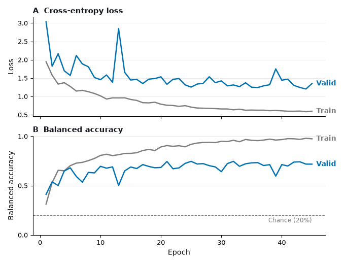
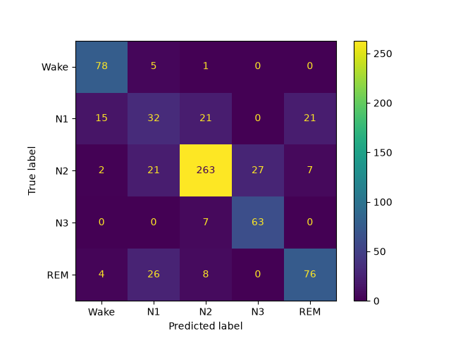
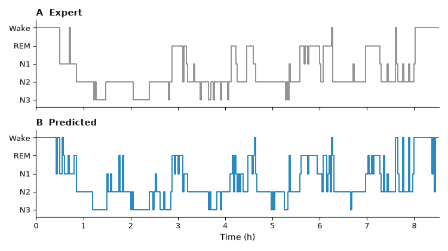

Note
Go to the end to download the full example code.
Sleep staging on the Sleep Physionet dataset using Eldele2021#
This tutorial shows how to train and test a sleep staging neural network with Braindecode. We use the attention-based model from [1] with the time distributed approach of [2] to learn on sequences of EEG windows using the openly accessible Sleep Physionet dataset [3] [4].
# Authors: Divyesh Narayanan <divyesh.narayanan@gmail.com>
#
# License: BSD (3-clause)
Loading and preprocessing the dataset#
Loading#
First, we load the data using the
braindecode.datasets.sleep_physionet.SleepPhysionet class. We load
three subjects with two recordings (nights) each. Subjects 0 and 1 are used
for training and subject 2 for validation, as for the pretrained checkpoint
loaded below.
from numbers import Integral
from braindecode.datasets import SleepPhysionet
subject_ids = [0, 1, 2]
train_subject_ids = [0, 1]
valid_subject_ids = [2]
dataset = SleepPhysionet(
subject_ids=subject_ids, recording_ids=[1, 2], crop_wake_mins=30
)
Downloading data from 'https://physionet.org/physiobank/database/sleep-edfx/sleep-cassette//SC4002E0-PSG.edf' to file '/home/runner/mne_data/physionet-sleep-data/SC4002E0-PSG.edf'.
0%| | 0.00/51.6M [00:00<?, ?B/s]
0%| | 99.3k/51.6M [00:00<01:02, 829kB/s]
0%|▏ | 198k/51.6M [00:00<01:04, 797kB/s]
1%|▏ | 280k/51.6M [00:00<01:04, 801kB/s]
1%|▎ | 360k/51.6M [00:00<01:03, 801kB/s]
1%|▎ | 443k/51.6M [00:00<01:16, 672kB/s]
1%|▍ | 558k/51.6M [00:00<01:05, 774kB/s]
1%|▍ | 640k/51.6M [00:00<01:05, 783kB/s]
1%|▌ | 722k/51.6M [00:00<01:06, 769kB/s]
2%|▌ | 820k/51.6M [00:01<01:04, 782kB/s]
2%|▋ | 919k/51.6M [00:01<01:02, 817kB/s]
2%|▋ | 1.02M/51.6M [00:01<00:58, 863kB/s]
2%|▊ | 1.12M/51.6M [00:01<00:58, 870kB/s]
2%|▉ | 1.23M/51.6M [00:01<00:56, 887kB/s]
3%|▉ | 1.32M/51.6M [00:01<01:02, 800kB/s]
3%|█ | 1.41M/51.6M [00:01<01:00, 825kB/s]
3%|█ | 1.49M/51.6M [00:01<01:02, 802kB/s]
3%|█▏ | 1.58M/51.6M [00:01<01:06, 758kB/s]
3%|█▏ | 1.65M/51.6M [00:02<01:08, 726kB/s]
3%|█▎ | 1.73M/51.6M [00:02<01:14, 668kB/s]
3%|█▎ | 1.80M/51.6M [00:02<01:14, 670kB/s]
4%|█▍ | 1.87M/51.6M [00:02<01:13, 676kB/s]
4%|█▍ | 1.95M/51.6M [00:02<01:17, 639kB/s]
4%|█▍ | 2.03M/51.6M [00:02<01:13, 678kB/s]
4%|█▌ | 2.11M/51.6M [00:02<01:13, 673kB/s]
4%|█▌ | 2.20M/51.6M [00:02<01:11, 690kB/s]
4%|█▋ | 2.28M/51.6M [00:03<01:12, 685kB/s]
5%|█▋ | 2.36M/51.6M [00:03<01:09, 713kB/s]
5%|█▊ | 2.44M/51.6M [00:03<01:08, 716kB/s]
5%|█▊ | 2.52M/51.6M [00:03<01:07, 729kB/s]
5%|█▉ | 2.61M/51.6M [00:03<01:10, 699kB/s]
5%|█▉ | 2.69M/51.6M [00:03<01:10, 693kB/s]
5%|██ | 2.76M/51.6M [00:03<01:12, 675kB/s]
5%|██ | 2.83M/51.6M [00:03<01:13, 668kB/s]
6%|██▏ | 2.89M/51.6M [00:03<01:15, 641kB/s]
6%|██▏ | 2.96M/51.6M [00:04<01:17, 627kB/s]
6%|██▏ | 3.02M/51.6M [00:04<01:19, 610kB/s]
6%|██▎ | 3.10M/51.6M [00:04<01:18, 622kB/s]
6%|██▎ | 3.16M/51.6M [00:04<01:20, 605kB/s]
6%|██▍ | 3.23M/51.6M [00:04<01:21, 594kB/s]
6%|██▍ | 3.29M/51.6M [00:04<01:21, 593kB/s]
7%|██▍ | 3.38M/51.6M [00:04<01:18, 612kB/s]
7%|██▌ | 3.46M/51.6M [00:04<01:15, 641kB/s]
7%|██▌ | 3.54M/51.6M [00:04<01:11, 675kB/s]
7%|██▋ | 3.64M/51.6M [00:05<01:05, 729kB/s]
7%|██▊ | 3.74M/51.6M [00:05<01:01, 784kB/s]
7%|██▊ | 3.83M/51.6M [00:05<00:57, 832kB/s]
8%|██▉ | 3.95M/51.6M [00:05<00:53, 894kB/s]
8%|██▉ | 4.06M/51.6M [00:05<00:50, 939kB/s]
8%|███ | 4.16M/51.6M [00:05<00:50, 944kB/s]
8%|███▏ | 4.28M/51.6M [00:05<00:50, 944kB/s]
9%|███▏ | 4.41M/51.6M [00:05<00:46, 1.02MB/s]
9%|███▏ | 4.51M/51.6M [00:05<00:46, 1.01MB/s]
9%|███▍ | 4.61M/51.6M [00:06<00:47, 987kB/s]
9%|███▍ | 4.72M/51.6M [00:06<00:48, 974kB/s]
9%|███▌ | 4.83M/51.6M [00:06<00:48, 964kB/s]
10%|███▋ | 4.93M/51.6M [00:06<00:52, 888kB/s]
10%|███▋ | 5.06M/51.6M [00:06<00:48, 960kB/s]
10%|███▊ | 5.16M/51.6M [00:06<00:49, 939kB/s]
10%|███▊ | 5.26M/51.6M [00:06<00:50, 921kB/s]
10%|███▉ | 5.35M/51.6M [00:06<00:52, 889kB/s]
11%|████ | 5.44M/51.6M [00:07<00:54, 848kB/s]
11%|████ | 5.53M/51.6M [00:07<00:54, 850kB/s]
11%|████▏ | 5.61M/51.6M [00:07<00:54, 846kB/s]
11%|████▏ | 5.70M/51.6M [00:07<00:56, 817kB/s]
11%|████▎ | 5.79M/51.6M [00:07<01:04, 715kB/s]
11%|████▎ | 5.90M/51.6M [00:07<00:57, 802kB/s]
12%|████▍ | 5.98M/51.6M [00:07<00:59, 770kB/s]
12%|████▍ | 6.06M/51.6M [00:07<01:00, 756kB/s]
12%|████▌ | 6.16M/51.6M [00:07<00:58, 782kB/s]
12%|████▌ | 6.26M/51.6M [00:08<00:56, 809kB/s]
12%|████▋ | 6.36M/51.6M [00:08<00:53, 851kB/s]
13%|████▊ | 6.46M/51.6M [00:08<00:51, 884kB/s]
13%|████▊ | 6.55M/51.6M [00:08<00:49, 902kB/s]
13%|████▉ | 6.65M/51.6M [00:08<00:50, 896kB/s]
13%|████▉ | 6.74M/51.6M [00:08<00:50, 896kB/s]
13%|█████ | 6.83M/51.6M [00:08<00:52, 861kB/s]
13%|█████ | 6.92M/51.6M [00:08<00:52, 856kB/s]
14%|█████▏ | 7.01M/51.6M [00:08<00:54, 823kB/s]
14%|█████▏ | 7.10M/51.6M [00:09<00:53, 836kB/s]
14%|█████▎ | 7.19M/51.6M [00:09<00:53, 834kB/s]
14%|█████▎ | 7.29M/51.6M [00:09<00:51, 868kB/s]
14%|█████▍ | 7.39M/51.6M [00:09<00:57, 770kB/s]
15%|█████▌ | 7.50M/51.6M [00:09<00:52, 843kB/s]
15%|█████▌ | 7.59M/51.6M [00:09<00:52, 846kB/s]
15%|█████▋ | 7.68M/51.6M [00:09<00:52, 844kB/s]
15%|█████▋ | 7.76M/51.6M [00:09<00:53, 817kB/s]
15%|█████▊ | 7.85M/51.6M [00:09<00:54, 802kB/s]
15%|█████▊ | 7.93M/51.6M [00:10<00:54, 800kB/s]
16%|█████▉ | 8.01M/51.6M [00:10<00:55, 788kB/s]
16%|█████▉ | 8.09M/51.6M [00:10<00:54, 795kB/s]
16%|██████ | 8.18M/51.6M [00:10<00:54, 794kB/s]
16%|██████ | 8.27M/51.6M [00:10<00:53, 812kB/s]
16%|██████▏ | 8.37M/51.6M [00:10<00:52, 831kB/s]
16%|██████▏ | 8.46M/51.6M [00:10<00:56, 762kB/s]
17%|██████▎ | 8.57M/51.6M [00:10<00:52, 819kB/s]
17%|██████▍ | 8.67M/51.6M [00:10<00:52, 825kB/s]
17%|██████▍ | 8.77M/51.6M [00:11<00:50, 842kB/s]
17%|██████▌ | 8.86M/51.6M [00:11<00:50, 843kB/s]
17%|██████▌ | 8.96M/51.6M [00:11<00:49, 866kB/s]
18%|██████▋ | 9.06M/51.6M [00:11<00:49, 857kB/s]
18%|██████▋ | 9.16M/51.6M [00:11<00:48, 878kB/s]
18%|██████▊ | 9.25M/51.6M [00:11<00:48, 876kB/s]
18%|██████▉ | 9.34M/51.6M [00:11<00:49, 854kB/s]
18%|██████▉ | 9.44M/51.6M [00:11<00:49, 850kB/s]
18%|███████ | 9.54M/51.6M [00:11<00:50, 840kB/s]
19%|███████ | 9.62M/51.6M [00:12<00:53, 792kB/s]
19%|███████▏ | 9.70M/51.6M [00:12<00:55, 749kB/s]
19%|███████▏ | 9.78M/51.6M [00:12<00:56, 743kB/s]
19%|███████▎ | 9.85M/51.6M [00:12<00:57, 724kB/s]
19%|███████▎ | 9.93M/51.6M [00:12<00:58, 713kB/s]
19%|███████▎ | 10.0M/51.6M [00:12<01:03, 657kB/s]
20%|███████▍ | 10.1M/51.6M [00:12<01:02, 668kB/s]
20%|███████▍ | 10.1M/51.6M [00:12<01:03, 657kB/s]
20%|███████▌ | 10.2M/51.6M [00:12<01:05, 637kB/s]
20%|███████▌ | 10.3M/51.6M [00:13<01:04, 640kB/s]
20%|███████▌ | 10.4M/51.6M [00:13<01:04, 644kB/s]
20%|███████▋ | 10.4M/51.6M [00:13<01:06, 616kB/s]
20%|███████▋ | 10.5M/51.6M [00:13<01:03, 643kB/s]
20%|███████▊ | 10.6M/51.6M [00:13<01:04, 637kB/s]
21%|███████▊ | 10.6M/51.6M [00:13<01:03, 641kB/s]
21%|███████▉ | 10.7M/51.6M [00:13<01:01, 668kB/s]
21%|███████▉ | 10.8M/51.6M [00:13<00:58, 696kB/s]
21%|████████ | 10.9M/51.6M [00:13<00:55, 739kB/s]
21%|████████ | 11.0M/51.6M [00:14<00:51, 791kB/s]
21%|████████▏ | 11.1M/51.6M [00:14<00:48, 828kB/s]
22%|████████▏ | 11.2M/51.6M [00:14<00:46, 867kB/s]
22%|████████▎ | 11.3M/51.6M [00:14<00:54, 743kB/s]
22%|████████▍ | 11.4M/51.6M [00:14<00:48, 823kB/s]
22%|████████▍ | 11.5M/51.6M [00:14<00:54, 732kB/s]
22%|████████▌ | 11.6M/51.6M [00:14<00:59, 677kB/s]
23%|████████▌ | 11.6M/51.6M [00:14<00:58, 682kB/s]
23%|████████▌ | 11.7M/51.6M [00:15<00:58, 688kB/s]
23%|████████▋ | 11.8M/51.6M [00:15<00:58, 676kB/s]
23%|████████▋ | 11.8M/51.6M [00:15<01:02, 634kB/s]
23%|████████▊ | 11.9M/51.6M [00:15<01:03, 624kB/s]
23%|████████▊ | 12.0M/51.6M [00:15<01:02, 633kB/s]
23%|████████▉ | 12.1M/51.6M [00:15<01:00, 659kB/s]
24%|████████▉ | 12.1M/51.6M [00:15<00:57, 690kB/s]
24%|████████▉ | 12.2M/51.6M [00:15<00:54, 719kB/s]
24%|█████████ | 12.3M/51.6M [00:15<00:53, 732kB/s]
24%|█████████▏ | 12.4M/51.6M [00:16<00:51, 763kB/s]
24%|█████████▏ | 12.5M/51.6M [00:16<00:54, 723kB/s]
24%|█████████▎ | 12.6M/51.6M [00:16<00:51, 754kB/s]
25%|█████████▎ | 12.7M/51.6M [00:16<00:51, 753kB/s]
25%|█████████▎ | 12.7M/51.6M [00:16<00:52, 741kB/s]
25%|█████████▍ | 12.8M/51.6M [00:16<00:59, 654kB/s]
25%|█████████▍ | 12.9M/51.6M [00:16<00:55, 697kB/s]
25%|█████████▌ | 13.0M/51.6M [00:16<00:55, 697kB/s]
25%|█████████▌ | 13.0M/51.6M [00:17<00:57, 668kB/s]
25%|█████████▋ | 13.1M/51.6M [00:17<00:55, 692kB/s]
26%|█████████▋ | 13.2M/51.6M [00:17<00:53, 722kB/s]
26%|█████████▊ | 13.3M/51.6M [00:17<00:50, 763kB/s]
26%|█████████▊ | 13.4M/51.6M [00:17<00:49, 773kB/s]
26%|█████████▉ | 13.5M/51.6M [00:17<00:48, 782kB/s]
26%|█████████▉ | 13.6M/51.6M [00:17<00:50, 751kB/s]
26%|██████████ | 13.6M/51.6M [00:17<00:50, 753kB/s]
27%|██████████ | 13.7M/51.6M [00:17<00:51, 740kB/s]
27%|██████████▏ | 13.8M/51.6M [00:17<00:50, 755kB/s]
27%|██████████▏ | 13.9M/51.6M [00:18<00:49, 767kB/s]
27%|██████████▎ | 14.0M/51.6M [00:18<00:49, 765kB/s]
27%|██████████▎ | 14.0M/51.6M [00:18<00:53, 709kB/s]
27%|██████████▍ | 14.1M/51.6M [00:18<00:51, 730kB/s]
28%|██████████▍ | 14.2M/51.6M [00:18<00:51, 722kB/s]
28%|██████████▌ | 14.3M/51.6M [00:18<00:52, 706kB/s]
28%|██████████▌ | 14.4M/51.6M [00:18<00:52, 711kB/s]
28%|██████████▋ | 14.5M/51.6M [00:18<00:51, 717kB/s]
28%|██████████▋ | 14.5M/51.6M [00:19<00:49, 743kB/s]
28%|██████████▊ | 14.6M/51.6M [00:19<00:49, 746kB/s]
28%|██████████▊ | 14.7M/51.6M [00:19<00:49, 752kB/s]
29%|██████████▉ | 14.8M/51.6M [00:19<00:48, 764kB/s]
29%|██████████▉ | 14.9M/51.6M [00:19<00:49, 749kB/s]
29%|███████████ | 14.9M/51.6M [00:19<00:47, 764kB/s]
29%|███████████ | 15.0M/51.6M [00:19<00:47, 767kB/s]
29%|███████████ | 15.1M/51.6M [00:19<00:48, 757kB/s]
29%|███████████▏ | 15.2M/51.6M [00:19<00:49, 741kB/s]
30%|███████████▏ | 15.3M/51.6M [00:19<00:49, 737kB/s]
30%|███████████▎ | 15.4M/51.6M [00:20<00:48, 749kB/s]
30%|███████████▎ | 15.5M/51.6M [00:20<00:48, 747kB/s]
30%|███████████▍ | 15.5M/51.6M [00:20<00:47, 759kB/s]
30%|███████████▌ | 15.6M/51.6M [00:20<00:51, 694kB/s]
30%|███████████▌ | 15.7M/51.6M [00:20<00:50, 710kB/s]
31%|███████████▋ | 15.8M/51.6M [00:20<00:49, 719kB/s]
31%|███████████▋ | 15.9M/51.6M [00:20<00:48, 742kB/s]
31%|███████████▋ | 16.0M/51.6M [00:20<00:49, 725kB/s]
31%|███████████▊ | 16.0M/51.6M [00:21<00:49, 723kB/s]
31%|███████████▊ | 16.1M/51.6M [00:21<00:49, 714kB/s]
31%|███████████▉ | 16.2M/51.6M [00:21<00:49, 720kB/s]
32%|███████████▉ | 16.3M/51.6M [00:21<00:49, 714kB/s]
32%|████████████ | 16.4M/51.6M [00:21<00:48, 724kB/s]
32%|████████████ | 16.5M/51.6M [00:21<00:47, 747kB/s]
32%|████████████▏ | 16.5M/51.6M [00:21<00:45, 765kB/s]
32%|████████████▎ | 16.6M/51.6M [00:21<00:44, 788kB/s]
32%|████████████▎ | 16.7M/51.6M [00:21<00:44, 781kB/s]
33%|████████████▍ | 16.8M/51.6M [00:22<00:42, 823kB/s]
33%|████████████▍ | 16.9M/51.6M [00:22<00:46, 746kB/s]
33%|████████████▌ | 17.0M/51.6M [00:22<00:41, 842kB/s]
33%|████████████▌ | 17.1M/51.6M [00:22<00:43, 796kB/s]
33%|████████████▋ | 17.2M/51.6M [00:22<00:44, 779kB/s]
33%|████████████▋ | 17.3M/51.6M [00:22<00:45, 748kB/s]
34%|████████████▊ | 17.4M/51.6M [00:22<00:47, 727kB/s]
34%|████████████▊ | 17.4M/51.6M [00:22<00:45, 755kB/s]
34%|████████████▉ | 17.5M/51.6M [00:23<00:46, 733kB/s]
34%|████████████▉ | 17.6M/51.6M [00:23<00:46, 728kB/s]
34%|█████████████ | 17.7M/51.6M [00:23<00:47, 712kB/s]
34%|█████████████ | 17.8M/51.6M [00:23<00:48, 704kB/s]
35%|█████████████▏ | 17.8M/51.6M [00:23<00:50, 674kB/s]
35%|█████████████▏ | 17.9M/51.6M [00:23<00:46, 731kB/s]
35%|█████████████▎ | 18.0M/51.6M [00:23<00:46, 727kB/s]
35%|█████████████▎ | 18.1M/51.6M [00:23<00:45, 733kB/s]
35%|█████████████▍ | 18.2M/51.6M [00:23<00:44, 754kB/s]
35%|█████████████▍ | 18.3M/51.6M [00:24<00:41, 795kB/s]
36%|█████████████▌ | 18.4M/51.6M [00:24<00:40, 821kB/s]
36%|█████████████▌ | 18.5M/51.6M [00:24<00:39, 848kB/s]
36%|█████████████▋ | 18.6M/51.6M [00:24<00:45, 731kB/s]
36%|█████████████▋ | 18.7M/51.6M [00:24<00:40, 822kB/s]
36%|█████████████▊ | 18.7M/51.6M [00:24<00:41, 795kB/s]
36%|█████████████▊ | 18.8M/51.6M [00:24<00:43, 757kB/s]
37%|█████████████▉ | 18.9M/51.6M [00:24<00:44, 733kB/s]
37%|█████████████▉ | 19.0M/51.6M [00:24<00:46, 706kB/s]
37%|██████████████ | 19.1M/51.6M [00:25<00:47, 691kB/s]
37%|██████████████ | 19.1M/51.6M [00:25<00:46, 694kB/s]
37%|██████████████▏ | 19.2M/51.6M [00:25<00:46, 695kB/s]
37%|██████████████▏ | 19.3M/51.6M [00:25<00:50, 641kB/s]
37%|██████████████▏ | 19.4M/51.6M [00:25<00:58, 552kB/s]
38%|██████████████▎ | 19.4M/51.6M [00:25<00:58, 553kB/s]
38%|██████████████▎ | 19.5M/51.6M [00:25<01:01, 523kB/s]
38%|██████████████▍ | 19.5M/51.6M [00:25<01:00, 533kB/s]
38%|██████████████▍ | 19.6M/51.6M [00:26<01:00, 525kB/s]
38%|██████████████▍ | 19.7M/51.6M [00:26<01:00, 531kB/s]
38%|██████████████▌ | 19.7M/51.6M [00:26<00:57, 550kB/s]
38%|██████████████▌ | 19.8M/51.6M [00:26<00:57, 551kB/s]
38%|██████████████▌ | 19.9M/51.6M [00:26<00:59, 536kB/s]
39%|██████████████▋ | 19.9M/51.6M [00:26<01:00, 528kB/s]
39%|██████████████▋ | 20.0M/51.6M [00:26<00:58, 542kB/s]
39%|██████████████▊ | 20.1M/51.6M [00:26<00:55, 568kB/s]
39%|██████████████▊ | 20.1M/51.6M [00:27<00:52, 595kB/s]
39%|██████████████▊ | 20.2M/51.6M [00:27<00:51, 607kB/s]
39%|██████████████▉ | 20.3M/51.6M [00:27<00:48, 651kB/s]
39%|██████████████▉ | 20.4M/51.6M [00:27<00:45, 683kB/s]
40%|███████████████ | 20.4M/51.6M [00:27<00:44, 697kB/s]
40%|███████████████ | 20.5M/51.6M [00:27<00:40, 759kB/s]
40%|███████████████▏ | 20.6M/51.6M [00:27<00:40, 769kB/s]
40%|███████████████▏ | 20.7M/51.6M [00:27<00:39, 775kB/s]
40%|███████████████▎ | 20.8M/51.6M [00:27<00:41, 739kB/s]
40%|███████████████▎ | 20.9M/51.6M [00:28<00:45, 678kB/s]
41%|███████████████▍ | 20.9M/51.6M [00:28<00:46, 660kB/s]
41%|███████████████▍ | 21.0M/51.6M [00:28<00:47, 645kB/s]
41%|███████████████▌ | 21.1M/51.6M [00:28<00:47, 645kB/s]
41%|███████████████▌ | 21.1M/51.6M [00:28<00:47, 636kB/s]
41%|███████████████▌ | 21.2M/51.6M [00:28<00:48, 621kB/s]
41%|███████████████▋ | 21.3M/51.6M [00:28<00:44, 689kB/s]
41%|███████████████▋ | 21.4M/51.6M [00:28<00:44, 679kB/s]
42%|███████████████▊ | 21.5M/51.6M [00:29<00:56, 536kB/s]
42%|███████████████▊ | 21.5M/51.6M [00:29<00:57, 525kB/s]
42%|███████████████▊ | 21.6M/51.6M [00:29<01:14, 401kB/s]
42%|███████████████▉ | 21.6M/51.6M [00:29<01:16, 393kB/s]
42%|███████████████▉ | 21.7M/51.6M [00:29<01:13, 406kB/s]
42%|███████████████▉ | 21.7M/51.6M [00:29<01:09, 432kB/s]
42%|████████████████ | 21.8M/51.6M [00:29<01:03, 466kB/s]
42%|████████████████ | 21.9M/51.6M [00:29<00:59, 504kB/s]
42%|████████████████▏ | 21.9M/51.6M [00:30<00:54, 543kB/s]
43%|████████████████▏ | 22.0M/51.6M [00:30<00:53, 559kB/s]
43%|████████████████▏ | 22.1M/51.6M [00:30<00:50, 583kB/s]
43%|████████████████▎ | 22.1M/51.6M [00:30<00:50, 585kB/s]
43%|████████████████▎ | 22.2M/51.6M [00:30<00:50, 585kB/s]
43%|████████████████▍ | 22.3M/51.6M [00:30<00:48, 604kB/s]
43%|████████████████▍ | 22.3M/51.6M [00:30<00:46, 636kB/s]
43%|████████████████▌ | 22.4M/51.6M [00:30<00:44, 659kB/s]
44%|████████████████▌ | 22.5M/51.6M [00:30<00:44, 655kB/s]
44%|████████████████▋ | 22.6M/51.6M [00:31<00:44, 654kB/s]
44%|████████████████▋ | 22.7M/51.6M [00:31<00:45, 639kB/s]
44%|████████████████▋ | 22.7M/51.6M [00:31<00:49, 581kB/s]
44%|████████████████▊ | 22.8M/51.6M [00:31<00:49, 585kB/s]
44%|████████████████▊ | 22.9M/51.6M [00:31<00:51, 560kB/s]
44%|████████████████▊ | 22.9M/51.6M [00:31<00:50, 563kB/s]
45%|████████████████▉ | 23.0M/51.6M [00:31<00:49, 581kB/s]
45%|████████████████▉ | 23.1M/51.6M [00:31<00:47, 599kB/s]
45%|█████████████████ | 23.2M/51.6M [00:32<00:46, 612kB/s]
45%|█████████████████ | 23.2M/51.6M [00:32<00:50, 561kB/s]
45%|█████████████████▏ | 23.3M/51.6M [00:32<00:46, 614kB/s]
45%|█████████████████▏ | 23.4M/51.6M [00:32<00:44, 628kB/s]
45%|█████████████████▎ | 23.5M/51.6M [00:32<00:43, 650kB/s]
46%|█████████████████▎ | 23.5M/51.6M [00:32<00:41, 684kB/s]
46%|█████████████████▍ | 23.6M/51.6M [00:32<00:39, 704kB/s]
46%|█████████████████▍ | 23.7M/51.6M [00:32<00:38, 730kB/s]
46%|█████████████████▌ | 23.8M/51.6M [00:32<00:37, 736kB/s]
46%|█████████████████▌ | 23.9M/51.6M [00:33<00:35, 781kB/s]
46%|█████████████████▋ | 24.0M/51.6M [00:33<00:34, 811kB/s]
47%|█████████████████▋ | 24.1M/51.6M [00:33<00:31, 877kB/s]
47%|█████████████████▊ | 24.2M/51.6M [00:33<00:29, 934kB/s]
47%|█████████████████▉ | 24.3M/51.6M [00:33<00:28, 967kB/s]
47%|█████████████████▉ | 24.4M/51.6M [00:33<00:28, 944kB/s]
48%|██████████████████ | 24.5M/51.6M [00:33<00:28, 956kB/s]
48%|██████████████████▏ | 24.6M/51.6M [00:33<00:28, 933kB/s]
48%|██████████████████▏ | 24.7M/51.6M [00:33<00:28, 930kB/s]
48%|██████████████████▎ | 24.8M/51.6M [00:34<00:28, 941kB/s]
48%|██████████████████▎ | 24.9M/51.6M [00:34<00:28, 951kB/s]
48%|██████████████████▍ | 25.0M/51.6M [00:34<00:28, 940kB/s]
49%|██████████████████▍ | 25.1M/51.6M [00:34<00:28, 914kB/s]
49%|██████████████████▌ | 25.2M/51.6M [00:34<00:32, 822kB/s]
49%|██████████████████▋ | 25.3M/51.6M [00:34<00:33, 782kB/s]
49%|██████████████████▋ | 25.4M/51.6M [00:34<00:35, 738kB/s]
49%|██████████████████▋ | 25.5M/51.6M [00:34<00:35, 738kB/s]
49%|██████████████████▊ | 25.5M/51.6M [00:35<00:37, 691kB/s]
50%|██████████████████▊ | 25.6M/51.6M [00:35<00:37, 698kB/s]
50%|██████████████████▉ | 25.7M/51.6M [00:35<00:35, 721kB/s]
50%|██████████████████▉ | 25.8M/51.6M [00:35<00:35, 722kB/s]
50%|███████████████████ | 25.8M/51.6M [00:35<00:36, 713kB/s]
50%|███████████████████ | 25.9M/51.6M [00:35<00:36, 712kB/s]
50%|███████████████████▏ | 26.0M/51.6M [00:35<00:39, 655kB/s]
50%|███████████████████▏ | 26.1M/51.6M [00:35<00:38, 657kB/s]
51%|███████████████████▏ | 26.1M/51.6M [00:35<00:38, 670kB/s]
51%|███████████████████▎ | 26.2M/51.6M [00:36<00:37, 675kB/s]
51%|███████████████████▎ | 26.3M/51.6M [00:36<00:37, 672kB/s]
51%|███████████████████▍ | 26.4M/51.6M [00:36<00:37, 673kB/s]
51%|███████████████████▍ | 26.4M/51.6M [00:36<00:37, 668kB/s]
51%|███████████████████▌ | 26.5M/51.6M [00:36<00:38, 660kB/s]
52%|███████████████████▌ | 26.6M/51.6M [00:36<00:36, 680kB/s]
52%|███████████████████▋ | 26.7M/51.6M [00:36<00:36, 681kB/s]
52%|███████████████████▋ | 26.7M/51.6M [00:36<00:35, 704kB/s]
52%|███████████████████▋ | 26.8M/51.6M [00:36<00:34, 711kB/s]
52%|███████████████████▊ | 26.9M/51.6M [00:36<00:35, 693kB/s]
52%|███████████████████▊ | 27.0M/51.6M [00:37<00:36, 673kB/s]
52%|███████████████████▉ | 27.0M/51.6M [00:37<00:36, 666kB/s]
53%|███████████████████▉ | 27.1M/51.6M [00:37<00:36, 663kB/s]
53%|████████████████████ | 27.2M/51.6M [00:37<00:36, 670kB/s]
53%|████████████████████ | 27.2M/51.6M [00:37<00:37, 657kB/s]
53%|████████████████████ | 27.3M/51.6M [00:37<00:35, 692kB/s]
53%|████████████████████▏ | 27.4M/51.6M [00:37<00:33, 724kB/s]
53%|████████████████████▏ | 27.5M/51.6M [00:37<00:36, 669kB/s]
53%|████████████████████▎ | 27.6M/51.6M [00:37<00:32, 740kB/s]
54%|████████████████████▎ | 27.7M/51.6M [00:38<00:32, 732kB/s]
54%|████████████████████▍ | 27.8M/51.6M [00:38<00:32, 735kB/s]
54%|████████████████████▌ | 27.9M/51.6M [00:38<00:31, 763kB/s]
54%|████████████████████▌ | 27.9M/51.6M [00:38<00:31, 757kB/s]
54%|████████████████████▌ | 28.0M/51.6M [00:38<00:31, 740kB/s]
54%|████████████████████▋ | 28.1M/51.6M [00:38<00:32, 722kB/s]
55%|████████████████████▋ | 28.2M/51.6M [00:38<00:33, 696kB/s]
55%|████████████████████▊ | 28.3M/51.6M [00:38<00:36, 638kB/s]
55%|████████████████████▊ | 28.3M/51.6M [00:39<00:35, 663kB/s]
55%|████████████████████▉ | 28.4M/51.6M [00:39<00:35, 652kB/s]
55%|████████████████████▉ | 28.5M/51.6M [00:39<00:35, 651kB/s]
55%|█████████████████████ | 28.5M/51.6M [00:39<00:35, 651kB/s]
55%|█████████████████████ | 28.6M/51.6M [00:39<00:34, 671kB/s]
56%|█████████████████████ | 28.7M/51.6M [00:39<00:34, 666kB/s]
56%|█████████████████████▏ | 28.8M/51.6M [00:39<00:33, 681kB/s]
56%|█████████████████████▏ | 28.9M/51.6M [00:39<00:32, 697kB/s]
56%|█████████████████████▎ | 28.9M/51.6M [00:39<00:33, 675kB/s]
56%|█████████████████████▎ | 29.0M/51.6M [00:40<00:36, 624kB/s]
56%|█████████████████████▍ | 29.1M/51.6M [00:40<00:39, 567kB/s]
56%|█████████████████████▍ | 29.1M/51.6M [00:40<00:41, 539kB/s]
57%|█████████████████████▍ | 29.2M/51.6M [00:40<00:40, 551kB/s]
57%|█████████████████████▌ | 29.2M/51.6M [00:40<00:38, 576kB/s]
57%|█████████████████████▌ | 29.3M/51.6M [00:40<00:36, 613kB/s]
57%|█████████████████████▋ | 29.4M/51.6M [00:40<00:33, 657kB/s]
57%|█████████████████████▋ | 29.5M/51.6M [00:40<00:31, 693kB/s]
57%|█████████████████████▊ | 29.6M/51.6M [00:40<00:31, 703kB/s]
57%|█████████████████████▊ | 29.7M/51.6M [00:41<00:29, 744kB/s]
58%|█████████████████████▉ | 29.8M/51.6M [00:41<00:28, 763kB/s]
58%|█████████████████████▉ | 29.8M/51.6M [00:41<00:29, 743kB/s]
58%|██████████████████████ | 29.9M/51.6M [00:41<00:29, 744kB/s]
58%|██████████████████████ | 30.0M/51.6M [00:41<00:29, 737kB/s]
58%|██████████████████████▏ | 30.1M/51.6M [00:41<00:28, 755kB/s]
58%|██████████████████████▏ | 30.2M/51.6M [00:41<00:28, 753kB/s]
59%|██████████████████████▎ | 30.2M/51.6M [00:41<00:30, 697kB/s]
59%|██████████████████████▎ | 30.3M/51.6M [00:42<00:31, 671kB/s]
59%|██████████████████████▎ | 30.4M/51.6M [00:42<00:30, 693kB/s]
59%|██████████████████████▍ | 30.5M/51.6M [00:42<00:30, 698kB/s]
59%|██████████████████████▍ | 30.6M/51.6M [00:42<00:30, 690kB/s]
59%|██████████████████████▌ | 30.6M/51.6M [00:42<00:30, 692kB/s]
59%|██████████████████████▌ | 30.7M/51.6M [00:42<00:30, 686kB/s]
60%|██████████████████████▋ | 30.8M/51.6M [00:42<00:30, 673kB/s]
60%|██████████████████████▋ | 30.9M/51.6M [00:42<00:30, 682kB/s]
60%|██████████████████████▊ | 31.0M/51.6M [00:42<00:29, 701kB/s]
60%|██████████████████████▊ | 31.0M/51.6M [00:43<00:29, 702kB/s]
60%|██████████████████████▉ | 31.1M/51.6M [00:43<00:28, 727kB/s]
60%|██████████████████████▉ | 31.2M/51.6M [00:43<00:27, 733kB/s]
61%|███████████████████████ | 31.3M/51.6M [00:43<00:27, 741kB/s]
61%|███████████████████████ | 31.4M/51.6M [00:43<00:27, 731kB/s]
61%|███████████████████████▏ | 31.4M/51.6M [00:43<00:28, 720kB/s]
61%|███████████████████████▏ | 31.5M/51.6M [00:43<00:27, 727kB/s]
61%|███████████████████████▎ | 31.6M/51.6M [00:43<00:30, 662kB/s]
61%|███████████████████████▎ | 31.7M/51.6M [00:43<00:29, 667kB/s]
61%|███████████████████████▎ | 31.7M/51.6M [00:44<00:30, 659kB/s]
62%|███████████████████████▍ | 31.8M/51.6M [00:44<00:29, 663kB/s]
62%|███████████████████████▍ | 31.9M/51.6M [00:44<00:28, 685kB/s]
62%|███████████████████████▌ | 32.0M/51.6M [00:44<00:28, 697kB/s]
62%|███████████████████████▌ | 32.1M/51.6M [00:44<00:28, 695kB/s]
62%|███████████████████████▋ | 32.1M/51.6M [00:44<00:28, 688kB/s]
62%|███████████████████████▋ | 32.2M/51.6M [00:44<00:28, 689kB/s]
63%|███████████████████████▊ | 32.3M/51.6M [00:44<00:29, 652kB/s]
63%|███████████████████████▊ | 32.3M/51.6M [00:44<00:31, 609kB/s]
63%|███████████████████████▊ | 32.4M/51.6M [00:45<00:34, 559kB/s]
63%|███████████████████████▉ | 32.5M/51.6M [00:45<00:35, 536kB/s]
63%|███████████████████████▉ | 32.5M/51.6M [00:45<00:34, 559kB/s]
63%|████████████████████████ | 32.6M/51.6M [00:45<00:31, 602kB/s]
63%|████████████████████████ | 32.7M/51.6M [00:45<00:29, 632kB/s]
63%|████████████████████████ | 32.8M/51.6M [00:45<00:32, 586kB/s]
64%|████████████████████████▏ | 32.8M/51.6M [00:45<00:29, 636kB/s]
64%|████████████████████████▏ | 32.9M/51.6M [00:45<00:29, 641kB/s]
64%|████████████████████████▎ | 33.0M/51.6M [00:45<00:29, 635kB/s]
64%|████████████████████████▎ | 33.0M/51.6M [00:46<00:27, 671kB/s]
64%|████████████████████████▍ | 33.1M/51.6M [00:46<00:26, 688kB/s]
64%|████████████████████████▍ | 33.2M/51.6M [00:46<00:26, 689kB/s]
64%|████████████████████████▌ | 33.3M/51.6M [00:46<00:24, 744kB/s]
65%|████████████████████████▌ | 33.4M/51.6M [00:46<00:23, 780kB/s]
65%|████████████████████████▋ | 33.5M/51.6M [00:46<00:21, 830kB/s]
65%|████████████████████████▋ | 33.6M/51.6M [00:46<00:20, 864kB/s]
65%|████████████████████████▊ | 33.7M/51.6M [00:46<00:19, 913kB/s]
65%|████████████████████████▉ | 33.8M/51.6M [00:46<00:19, 909kB/s]
66%|████████████████████████▉ | 33.9M/51.6M [00:47<00:20, 858kB/s]
66%|█████████████████████████ | 34.0M/51.6M [00:47<00:21, 821kB/s]
66%|█████████████████████████ | 34.1M/51.6M [00:47<00:21, 807kB/s]
66%|█████████████████████████▏ | 34.1M/51.6M [00:47<00:23, 741kB/s]
66%|█████████████████████████▏ | 34.2M/51.6M [00:47<00:24, 698kB/s]
66%|█████████████████████████▏ | 34.3M/51.6M [00:47<00:25, 689kB/s]
67%|█████████████████████████▎ | 34.4M/51.6M [00:47<00:23, 719kB/s]
67%|█████████████████████████▍ | 34.5M/51.6M [00:47<00:22, 752kB/s]
67%|█████████████████████████▍ | 34.6M/51.6M [00:48<00:22, 753kB/s]
67%|█████████████████████████▌ | 34.7M/51.6M [00:48<00:21, 808kB/s]
67%|█████████████████████████▌ | 34.8M/51.6M [00:48<00:20, 826kB/s]
68%|█████████████████████████▋ | 34.9M/51.6M [00:48<00:18, 905kB/s]
68%|█████████████████████████▋ | 35.0M/51.6M [00:48<00:18, 897kB/s]
68%|█████████████████████████▊ | 35.1M/51.6M [00:48<00:17, 937kB/s]
68%|█████████████████████████▉ | 35.2M/51.6M [00:48<00:18, 900kB/s]
68%|█████████████████████████▉ | 35.3M/51.6M [00:48<00:20, 800kB/s]
68%|██████████████████████████ | 35.3M/51.6M [00:48<00:21, 741kB/s]
69%|██████████████████████████ | 35.4M/51.6M [00:49<00:21, 741kB/s]
69%|██████████████████████████▏ | 35.5M/51.6M [00:49<00:22, 705kB/s]
69%|██████████████████████████▏ | 35.6M/51.6M [00:49<00:23, 683kB/s]
69%|██████████████████████████▏ | 35.6M/51.6M [00:49<00:24, 646kB/s]
69%|██████████████████████████▎ | 35.7M/51.6M [00:49<00:24, 648kB/s]
69%|██████████████████████████▎ | 35.8M/51.6M [00:49<00:24, 646kB/s]
69%|██████████████████████████▍ | 35.8M/51.6M [00:49<00:24, 634kB/s]
70%|██████████████████████████▍ | 35.9M/51.6M [00:49<00:25, 610kB/s]
70%|██████████████████████████▍ | 36.0M/51.6M [00:49<00:27, 578kB/s]
70%|██████████████████████████▌ | 36.0M/51.6M [00:50<00:26, 587kB/s]
70%|██████████████████████████▌ | 36.1M/51.6M [00:50<00:25, 609kB/s]
70%|██████████████████████████▋ | 36.2M/51.6M [00:50<00:24, 634kB/s]
70%|██████████████████████████▋ | 36.3M/51.6M [00:50<00:23, 648kB/s]
70%|██████████████████████████▊ | 36.3M/51.6M [00:50<00:23, 641kB/s]
71%|██████████████████████████▊ | 36.4M/51.6M [00:50<00:24, 627kB/s]
71%|██████████████████████████▊ | 36.5M/51.6M [00:50<00:23, 634kB/s]
71%|██████████████████████████▉ | 36.6M/51.6M [00:50<00:24, 625kB/s]
71%|██████████████████████████▉ | 36.6M/51.6M [00:51<00:24, 611kB/s]
71%|███████████████████████████ | 36.7M/51.6M [00:51<00:25, 594kB/s]
71%|███████████████████████████ | 36.8M/51.6M [00:51<00:24, 599kB/s]
71%|███████████████████████████ | 36.8M/51.6M [00:51<00:24, 602kB/s]
71%|███████████████████████████▏ | 36.9M/51.6M [00:51<00:23, 637kB/s]
72%|███████████████████████████▏ | 37.0M/51.6M [00:51<00:22, 654kB/s]
72%|███████████████████████████▎ | 37.1M/51.6M [00:51<00:21, 679kB/s]
72%|███████████████████████████▎ | 37.1M/51.6M [00:51<00:22, 648kB/s]
72%|███████████████████████████▍ | 37.2M/51.6M [00:51<00:20, 717kB/s]
72%|███████████████████████████▍ | 37.3M/51.6M [00:52<00:21, 677kB/s]
72%|███████████████████████████▌ | 37.4M/51.6M [00:52<00:21, 677kB/s]
73%|███████████████████████████▌ | 37.4M/51.6M [00:52<00:20, 694kB/s]
73%|███████████████████████████▌ | 37.5M/51.6M [00:52<00:23, 590kB/s]
73%|███████████████████████████▋ | 37.6M/51.6M [00:52<00:21, 656kB/s]
73%|███████████████████████████▋ | 37.7M/51.6M [00:52<00:21, 654kB/s]
73%|███████████████████████████▊ | 37.7M/51.6M [00:52<00:21, 648kB/s]
73%|███████████████████████████▊ | 37.8M/51.6M [00:52<00:22, 617kB/s]
73%|███████████████████████████▉ | 37.9M/51.6M [00:52<00:22, 599kB/s]
73%|███████████████████████████▉ | 37.9M/51.6M [00:53<00:23, 576kB/s]
74%|███████████████████████████▉ | 38.0M/51.6M [00:53<00:22, 593kB/s]
74%|████████████████████████████ | 38.1M/51.6M [00:53<00:22, 608kB/s]
74%|████████████████████████████ | 38.2M/51.6M [00:53<00:20, 649kB/s]
74%|████████████████████████████▏ | 38.2M/51.6M [00:53<00:20, 664kB/s]
74%|████████████████████████████▏ | 38.3M/51.6M [00:53<00:21, 625kB/s]
74%|████████████████████████████▏ | 38.4M/51.6M [00:53<00:21, 618kB/s]
74%|████████████████████████████▎ | 38.5M/51.6M [00:53<00:20, 639kB/s]
75%|████████████████████████████▎ | 38.5M/51.6M [00:53<00:19, 655kB/s]
75%|████████████████████████████▍ | 38.6M/51.6M [00:54<00:18, 708kB/s]
75%|████████████████████████████▌ | 38.7M/51.6M [00:54<00:17, 750kB/s]
75%|████████████████████████████▌ | 38.8M/51.6M [00:54<00:16, 792kB/s]
75%|████████████████████████████▋ | 38.9M/51.6M [00:54<00:15, 810kB/s]
76%|████████████████████████████▋ | 39.0M/51.6M [00:54<00:14, 852kB/s]
76%|████████████████████████████▊ | 39.1M/51.6M [00:54<00:14, 872kB/s]
76%|████████████████████████████▊ | 39.2M/51.6M [00:54<00:14, 844kB/s]
76%|████████████████████████████▉ | 39.3M/51.6M [00:54<00:14, 842kB/s]
76%|█████████████████████████████ | 39.4M/51.6M [00:54<00:14, 863kB/s]
77%|█████████████████████████████ | 39.5M/51.6M [00:55<00:13, 878kB/s]
77%|█████████████████████████████▏ | 39.6M/51.6M [00:55<00:12, 943kB/s]
77%|█████████████████████████████▏ | 39.7M/51.6M [00:55<00:12, 931kB/s]
77%|█████████████████████████████▎ | 39.8M/51.6M [00:55<00:12, 917kB/s]
77%|█████████████████████████████▍ | 39.9M/51.6M [00:55<00:12, 919kB/s]
78%|█████████████████████████████▍ | 40.0M/51.6M [00:55<00:12, 926kB/s]
78%|█████████████████████████████▌ | 40.1M/51.6M [00:55<00:12, 939kB/s]
78%|████████████████████████████▊ | 40.2M/51.6M [00:55<00:10, 1.04MB/s]
78%|████████████████████████████▉ | 40.3M/51.6M [00:55<00:10, 1.04MB/s]
78%|████████████████████████████▉ | 40.5M/51.6M [00:56<00:10, 1.02MB/s]
79%|█████████████████████████████ | 40.6M/51.6M [00:56<00:11, 1.00MB/s]
79%|█████████████████████████████▏ | 40.7M/51.6M [00:56<00:10, 1.01MB/s]
79%|█████████████████████████████▏ | 40.8M/51.6M [00:56<00:10, 1.00MB/s]
79%|█████████████████████████████▎ | 40.9M/51.6M [00:56<00:10, 1.01MB/s]
79%|█████████████████████████████▍ | 41.0M/51.6M [00:56<00:10, 1.02MB/s]
80%|█████████████████████████████▍ | 41.1M/51.6M [00:56<00:09, 1.11MB/s]
80%|█████████████████████████████▌ | 41.3M/51.6M [00:56<00:09, 1.11MB/s]
80%|█████████████████████████████▋ | 41.4M/51.6M [00:56<00:09, 1.06MB/s]
80%|██████████████████████████████▌ | 41.5M/51.6M [00:57<00:10, 985kB/s]
81%|█████████████████████████████▊ | 41.6M/51.6M [00:57<00:09, 1.04MB/s]
81%|██████████████████████████████▋ | 41.7M/51.6M [00:57<00:11, 827kB/s]
81%|██████████████████████████████▊ | 41.9M/51.6M [00:57<00:09, 984kB/s]
81%|██████████████████████████████▉ | 42.0M/51.6M [00:57<00:10, 893kB/s]
82%|██████████████████████████████▉ | 42.1M/51.6M [00:57<00:11, 810kB/s]
82%|███████████████████████████████ | 42.2M/51.6M [00:57<00:12, 773kB/s]
82%|███████████████████████████████ | 42.2M/51.6M [00:58<00:12, 754kB/s]
82%|███████████████████████████████▏ | 42.3M/51.6M [00:58<00:12, 747kB/s]
82%|███████████████████████████████▏ | 42.4M/51.6M [00:58<00:12, 765kB/s]
82%|███████████████████████████████▎ | 42.5M/51.6M [00:58<00:11, 785kB/s]
83%|███████████████████████████████▎ | 42.6M/51.6M [00:58<00:11, 783kB/s]
83%|███████████████████████████████▍ | 42.7M/51.6M [00:58<00:11, 797kB/s]
83%|███████████████████████████████▌ | 42.8M/51.6M [00:58<00:09, 883kB/s]
83%|███████████████████████████████▌ | 42.9M/51.6M [00:58<00:09, 911kB/s]
83%|███████████████████████████████▋ | 43.0M/51.6M [00:58<00:09, 905kB/s]
84%|███████████████████████████████▊ | 43.2M/51.6M [00:59<00:08, 973kB/s]
84%|███████████████████████████████▊ | 43.3M/51.6M [00:59<00:08, 953kB/s]
84%|███████████████████████████████▉ | 43.4M/51.6M [00:59<00:09, 912kB/s]
84%|███████████████████████████████▉ | 43.5M/51.6M [00:59<00:09, 891kB/s]
84%|████████████████████████████████ | 43.5M/51.6M [00:59<00:09, 876kB/s]
85%|████████████████████████████████▏ | 43.6M/51.6M [00:59<00:09, 878kB/s]
85%|████████████████████████████████▏ | 43.7M/51.6M [00:59<00:09, 861kB/s]
85%|████████████████████████████████▎ | 43.8M/51.6M [00:59<00:08, 873kB/s]
85%|████████████████████████████████▎ | 43.9M/51.6M [00:59<00:08, 865kB/s]
85%|████████████████████████████████▍ | 44.0M/51.6M [01:00<00:09, 829kB/s]
85%|████████████████████████████████▍ | 44.1M/51.6M [01:00<00:09, 823kB/s]
86%|████████████████████████████████▌ | 44.2M/51.6M [01:00<00:10, 707kB/s]
86%|████████████████████████████████▌ | 44.3M/51.6M [01:00<00:09, 785kB/s]
86%|████████████████████████████████▋ | 44.4M/51.6M [01:00<00:09, 784kB/s]
86%|████████████████████████████████▋ | 44.5M/51.6M [01:00<00:09, 790kB/s]
86%|████████████████████████████████▊ | 44.5M/51.6M [01:00<00:08, 826kB/s]
86%|████████████████████████████████▊ | 44.6M/51.6M [01:00<00:08, 862kB/s]
87%|████████████████████████████████▉ | 44.8M/51.6M [01:00<00:07, 906kB/s]
87%|█████████████████████████████████ | 44.9M/51.6M [01:01<00:07, 947kB/s]
87%|█████████████████████████████████ | 45.0M/51.6M [01:01<00:06, 994kB/s]
87%|█████████████████████████████████▏ | 45.1M/51.6M [01:01<00:06, 972kB/s]
88%|█████████████████████████████████▎ | 45.2M/51.6M [01:01<00:06, 945kB/s]
88%|█████████████████████████████████▎ | 45.3M/51.6M [01:01<00:06, 909kB/s]
88%|█████████████████████████████████▍ | 45.4M/51.6M [01:01<00:07, 890kB/s]
88%|█████████████████████████████████▍ | 45.5M/51.6M [01:01<00:06, 899kB/s]
88%|█████████████████████████████████▌ | 45.6M/51.6M [01:01<00:07, 800kB/s]
88%|█████████████████████████████████▋ | 45.7M/51.6M [01:01<00:07, 831kB/s]
89%|█████████████████████████████████▋ | 45.8M/51.6M [01:02<00:07, 828kB/s]
89%|█████████████████████████████████▊ | 45.9M/51.6M [01:02<00:07, 823kB/s]
89%|█████████████████████████████████▊ | 45.9M/51.6M [01:02<00:06, 820kB/s]
89%|█████████████████████████████████▉ | 46.0M/51.6M [01:02<00:06, 859kB/s]
89%|█████████████████████████████████▉ | 46.1M/51.6M [01:02<00:06, 866kB/s]
90%|██████████████████████████████████ | 46.2M/51.6M [01:02<00:06, 887kB/s]
90%|██████████████████████████████████ | 46.4M/51.6M [01:02<00:05, 952kB/s]
90%|█████████████████████████████████▎ | 46.5M/51.6M [01:02<00:05, 1.01MB/s]
90%|█████████████████████████████████▍ | 46.6M/51.6M [01:02<00:04, 1.02MB/s]
90%|█████████████████████████████████▍ | 46.7M/51.6M [01:03<00:04, 1.03MB/s]
91%|█████████████████████████████████▌ | 46.8M/51.6M [01:03<00:04, 1.03MB/s]
91%|█████████████████████████████████▋ | 46.9M/51.6M [01:03<00:04, 1.07MB/s]
91%|█████████████████████████████████▋ | 47.1M/51.6M [01:03<00:04, 1.08MB/s]
91%|█████████████████████████████████▊ | 47.2M/51.6M [01:03<00:04, 1.05MB/s]
92%|█████████████████████████████████▉ | 47.3M/51.6M [01:03<00:04, 1.04MB/s]
92%|█████████████████████████████████▉ | 47.4M/51.6M [01:03<00:04, 1.01MB/s]
92%|██████████████████████████████████▉ | 47.5M/51.6M [01:03<00:04, 939kB/s]
92%|███████████████████████████████████ | 47.6M/51.6M [01:03<00:04, 872kB/s]
92%|███████████████████████████████████ | 47.7M/51.6M [01:04<00:04, 804kB/s]
92%|███████████████████████████████████▏ | 47.7M/51.6M [01:04<00:05, 775kB/s]
93%|███████████████████████████████████▏ | 47.8M/51.6M [01:04<00:05, 731kB/s]
93%|███████████████████████████████████▎ | 47.9M/51.6M [01:04<00:05, 724kB/s]
93%|███████████████████████████████████▎ | 48.0M/51.6M [01:04<00:05, 722kB/s]
93%|███████████████████████████████████▍ | 48.1M/51.6M [01:04<00:04, 769kB/s]
93%|███████████████████████████████████▍ | 48.2M/51.6M [01:04<00:04, 777kB/s]
93%|███████████████████████████████████▌ | 48.3M/51.6M [01:04<00:04, 831kB/s]
94%|███████████████████████████████████▌ | 48.4M/51.6M [01:04<00:03, 889kB/s]
94%|███████████████████████████████████▋ | 48.5M/51.6M [01:05<00:03, 904kB/s]
94%|███████████████████████████████████▊ | 48.6M/51.6M [01:05<00:03, 973kB/s]
94%|██████████████████████████████████▉ | 48.7M/51.6M [01:05<00:02, 1.01MB/s]
95%|██████████████████████████████████▉ | 48.8M/51.6M [01:05<00:02, 1.02MB/s]
95%|███████████████████████████████████ | 48.9M/51.6M [01:05<00:02, 1.00MB/s]
95%|███████████████████████████████████▏ | 49.0M/51.6M [01:05<00:02, 1.01MB/s]
95%|████████████████████████████████████▏ | 49.1M/51.6M [01:05<00:02, 987kB/s]
95%|████████████████████████████████████▏ | 49.2M/51.6M [01:05<00:02, 987kB/s]
96%|████████████████████████████████████▎ | 49.3M/51.6M [01:05<00:02, 965kB/s]
96%|████████████████████████████████████▍ | 49.4M/51.6M [01:06<00:02, 896kB/s]
96%|████████████████████████████████████▍ | 49.5M/51.6M [01:06<00:02, 882kB/s]
96%|████████████████████████████████████▌ | 49.6M/51.6M [01:06<00:02, 810kB/s]
96%|████████████████████████████████████▌ | 49.7M/51.6M [01:06<00:02, 755kB/s]
96%|████████████████████████████████████▋ | 49.8M/51.6M [01:06<00:02, 729kB/s]
97%|████████████████████████████████████▋ | 49.9M/51.6M [01:06<00:02, 730kB/s]
97%|████████████████████████████████████▊ | 49.9M/51.6M [01:06<00:02, 720kB/s]
97%|████████████████████████████████████▊ | 50.0M/51.6M [01:06<00:02, 744kB/s]
97%|████████████████████████████████████▉ | 50.1M/51.6M [01:06<00:01, 759kB/s]
97%|████████████████████████████████████▉ | 50.2M/51.6M [01:07<00:01, 775kB/s]
97%|█████████████████████████████████████ | 50.3M/51.6M [01:07<00:01, 801kB/s]
98%|█████████████████████████████████████ | 50.4M/51.6M [01:07<00:01, 713kB/s]
98%|█████████████████████████████████████▏| 50.5M/51.6M [01:07<00:01, 783kB/s]
98%|█████████████████████████████████████▏| 50.5M/51.6M [01:07<00:01, 761kB/s]
98%|█████████████████████████████████████▎| 50.6M/51.6M [01:07<00:01, 774kB/s]
98%|█████████████████████████████████████▎| 50.7M/51.6M [01:07<00:01, 761kB/s]
98%|█████████████████████████████████████▍| 50.8M/51.6M [01:07<00:01, 744kB/s]
99%|█████████████████████████████████████▍| 50.9M/51.6M [01:08<00:01, 717kB/s]
99%|█████████████████████████████████████▌| 51.0M/51.6M [01:08<00:00, 699kB/s]
99%|█████████████████████████████████████▌| 51.0M/51.6M [01:08<00:00, 698kB/s]
99%|█████████████████████████████████████▋| 51.1M/51.6M [01:08<00:00, 702kB/s]
99%|█████████████████████████████████████▋| 51.2M/51.6M [01:08<00:00, 689kB/s]
99%|█████████████████████████████████████▋| 51.3M/51.6M [01:08<00:00, 681kB/s]
99%|█████████████████████████████████████▊| 51.3M/51.6M [01:08<00:00, 657kB/s]
100%|█████████████████████████████████████▊| 51.4M/51.6M [01:08<00:00, 639kB/s]
100%|█████████████████████████████████████▉| 51.5M/51.6M [01:08<00:00, 645kB/s]
100%|█████████████████████████████████████▉| 51.6M/51.6M [01:09<00:00, 671kB/s]
0%| | 0.00/51.6M [00:00<?, ?B/s]
100%|██████████████████████████████████████| 51.6M/51.6M [00:00<00:00, 324GB/s]
Downloading data from 'https://physionet.org/physiobank/database/sleep-edfx/sleep-cassette//SC4002EC-Hypnogram.edf' to file '/home/runner/mne_data/physionet-sleep-data/SC4002EC-Hypnogram.edf'.
0%| | 0.00/4.58k [00:00<?, ?B/s]
0%| | 0.00/4.58k [00:00<?, ?B/s]
100%|█████████████████████████████████████| 4.58k/4.58k [00:00<00:00, 35.5MB/s]
Downloading data from 'https://physionet.org/physiobank/database/sleep-edfx/sleep-cassette//SC4012E0-PSG.edf' to file '/home/runner/mne_data/physionet-sleep-data/SC4012E0-PSG.edf'.
0%| | 0.00/52.0M [00:00<?, ?B/s]
0%| | 66.6k/52.0M [00:00<02:57, 292kB/s]
0%|▏ | 181k/52.0M [00:00<01:33, 551kB/s]
1%|▏ | 280k/52.0M [00:00<01:20, 643kB/s]
1%|▎ | 361k/52.0M [00:00<01:20, 637kB/s]
1%|▎ | 429k/52.0M [00:00<01:28, 580kB/s]
1%|▎ | 493k/52.0M [00:00<01:33, 550kB/s]
1%|▍ | 558k/52.0M [00:01<01:32, 554kB/s]
1%|▍ | 624k/52.0M [00:01<01:34, 541kB/s]
1%|▌ | 679k/52.0M [00:01<01:41, 507kB/s]
1%|▌ | 738k/52.0M [00:01<01:38, 520kB/s]
2%|▌ | 792k/52.0M [00:01<01:38, 521kB/s]
2%|▋ | 853k/52.0M [00:01<01:39, 513kB/s]
2%|▋ | 919k/52.0M [00:01<01:37, 525kB/s]
2%|▋ | 984k/52.0M [00:01<01:33, 545kB/s]
2%|▊ | 1.05M/52.0M [00:01<01:33, 543kB/s]
2%|▊ | 1.12M/52.0M [00:02<01:33, 543kB/s]
2%|▊ | 1.18M/52.0M [00:02<01:34, 537kB/s]
2%|▉ | 1.23M/52.0M [00:02<01:34, 535kB/s]
2%|▉ | 1.30M/52.0M [00:02<01:39, 512kB/s]
3%|▉ | 1.36M/52.0M [00:02<01:34, 536kB/s]
3%|█ | 1.43M/52.0M [00:02<01:33, 539kB/s]
3%|█ | 1.48M/52.0M [00:02<01:33, 539kB/s]
3%|█▏ | 1.54M/52.0M [00:02<01:37, 515kB/s]
3%|█▏ | 1.61M/52.0M [00:03<01:37, 517kB/s]
3%|█▏ | 1.67M/52.0M [00:03<01:35, 528kB/s]
3%|█▎ | 1.74M/52.0M [00:03<01:36, 523kB/s]
3%|█▎ | 1.80M/52.0M [00:03<01:36, 517kB/s]
4%|█▎ | 1.87M/52.0M [00:03<01:38, 509kB/s]
4%|█▍ | 1.93M/52.0M [00:03<01:39, 501kB/s]
4%|█▍ | 2.00M/52.0M [00:03<01:38, 507kB/s]
4%|█▌ | 2.07M/52.0M [00:03<01:37, 512kB/s]
4%|█▌ | 2.13M/52.0M [00:04<01:36, 518kB/s]
4%|█▌ | 2.18M/52.0M [00:04<01:53, 437kB/s]
4%|█▋ | 2.25M/52.0M [00:04<01:50, 451kB/s]
4%|█▋ | 2.29M/52.0M [00:04<01:54, 434kB/s]
5%|█▋ | 2.34M/52.0M [00:04<01:53, 436kB/s]
5%|█▋ | 2.39M/52.0M [00:04<01:56, 426kB/s]
5%|█▊ | 2.44M/52.0M [00:04<01:58, 420kB/s]
5%|█▊ | 2.49M/52.0M [00:04<01:59, 414kB/s]
5%|█▊ | 2.54M/52.0M [00:05<01:57, 419kB/s]
5%|█▉ | 2.59M/52.0M [00:05<01:54, 430kB/s]
5%|█▉ | 2.64M/52.0M [00:05<01:51, 443kB/s]
5%|█▉ | 2.69M/52.0M [00:05<01:49, 452kB/s]
5%|██ | 2.74M/52.0M [00:05<01:49, 451kB/s]
5%|██ | 2.79M/52.0M [00:05<01:52, 436kB/s]
5%|██ | 2.84M/52.0M [00:05<01:50, 446kB/s]
6%|██ | 2.88M/52.0M [00:05<01:47, 458kB/s]
6%|██▏ | 2.95M/52.0M [00:05<01:41, 482kB/s]
6%|██▏ | 3.02M/52.0M [00:06<01:37, 501kB/s]
6%|██▏ | 3.07M/52.0M [00:06<01:43, 471kB/s]
6%|██▎ | 3.13M/52.0M [00:06<01:36, 504kB/s]
6%|██▎ | 3.20M/52.0M [00:06<01:34, 516kB/s]
6%|██▍ | 3.26M/52.0M [00:06<01:32, 525kB/s]
6%|██▍ | 3.33M/52.0M [00:06<01:28, 550kB/s]
7%|██▍ | 3.39M/52.0M [00:06<01:28, 550kB/s]
7%|██▌ | 3.46M/52.0M [00:06<01:28, 551kB/s]
7%|██▌ | 3.51M/52.0M [00:07<01:38, 492kB/s]
7%|██▌ | 3.57M/52.0M [00:07<01:40, 484kB/s]
7%|██▋ | 3.62M/52.0M [00:07<01:49, 442kB/s]
7%|██▋ | 3.67M/52.0M [00:07<01:50, 436kB/s]
7%|██▋ | 3.72M/52.0M [00:07<01:48, 444kB/s]
7%|██▊ | 3.79M/52.0M [00:07<01:45, 459kB/s]
7%|██▊ | 3.85M/52.0M [00:07<01:37, 494kB/s]
8%|██▊ | 3.90M/52.0M [00:07<01:37, 493kB/s]
8%|██▉ | 3.97M/52.0M [00:07<01:37, 495kB/s]
8%|██▉ | 4.03M/52.0M [00:08<01:36, 498kB/s]
8%|██▉ | 4.08M/52.0M [00:08<01:40, 476kB/s]
8%|███ | 4.13M/52.0M [00:08<01:43, 463kB/s]
8%|███ | 4.18M/52.0M [00:08<01:53, 420kB/s]
8%|███ | 4.23M/52.0M [00:08<01:54, 416kB/s]
8%|███ | 4.27M/52.0M [00:08<01:58, 402kB/s]
8%|███▏ | 4.31M/52.0M [00:08<02:12, 360kB/s]
8%|███▏ | 4.36M/52.0M [00:08<02:11, 362kB/s]
8%|███▏ | 4.41M/52.0M [00:09<02:20, 339kB/s]
9%|███▎ | 4.46M/52.0M [00:09<02:16, 349kB/s]
9%|███▎ | 4.51M/52.0M [00:09<02:16, 348kB/s]
9%|███▎ | 4.56M/52.0M [00:09<02:09, 365kB/s]
9%|███▎ | 4.60M/52.0M [00:09<02:03, 384kB/s]
9%|███▍ | 4.65M/52.0M [00:09<01:55, 409kB/s]
9%|███▍ | 4.72M/52.0M [00:09<01:44, 452kB/s]
9%|███▍ | 4.79M/52.0M [00:10<01:41, 463kB/s]
9%|███▌ | 4.83M/52.0M [00:10<01:40, 467kB/s]
9%|███▌ | 4.88M/52.0M [00:10<01:40, 467kB/s]
9%|███▌ | 4.93M/52.0M [00:10<01:44, 452kB/s]
10%|███▋ | 4.98M/52.0M [00:10<01:45, 444kB/s]
10%|███▋ | 5.03M/52.0M [00:10<01:56, 404kB/s]
10%|███▋ | 5.08M/52.0M [00:10<01:56, 402kB/s]
10%|███▋ | 5.13M/52.0M [00:10<01:57, 400kB/s]
10%|███▊ | 5.17M/52.0M [00:10<02:05, 373kB/s]
10%|███▊ | 5.23M/52.0M [00:11<02:01, 386kB/s]
10%|███▊ | 5.28M/52.0M [00:11<02:01, 385kB/s]
10%|███▉ | 5.33M/52.0M [00:11<01:57, 398kB/s]
10%|███▉ | 5.37M/52.0M [00:11<01:52, 416kB/s]
10%|███▉ | 5.43M/52.0M [00:11<01:43, 449kB/s]
11%|████ | 5.49M/52.0M [00:11<01:39, 466kB/s]
11%|████ | 5.56M/52.0M [00:11<01:34, 490kB/s]
11%|████ | 5.61M/52.0M [00:11<01:44, 445kB/s]
11%|████▏ | 5.67M/52.0M [00:12<01:51, 414kB/s]
11%|████▏ | 5.74M/52.0M [00:12<01:44, 445kB/s]
11%|████▏ | 5.78M/52.0M [00:12<01:46, 434kB/s]
11%|████▎ | 5.83M/52.0M [00:12<01:44, 440kB/s]
11%|████▎ | 5.90M/52.0M [00:12<01:41, 455kB/s]
11%|████▎ | 5.95M/52.0M [00:12<01:42, 451kB/s]
12%|████▍ | 6.00M/52.0M [00:12<01:53, 407kB/s]
12%|████▍ | 6.04M/52.0M [00:12<01:53, 406kB/s]
12%|████▍ | 6.08M/52.0M [00:13<02:07, 360kB/s]
12%|████▍ | 6.13M/52.0M [00:13<02:05, 365kB/s]
12%|████▌ | 6.18M/52.0M [00:13<02:00, 379kB/s]
12%|████▌ | 6.24M/52.0M [00:13<01:51, 412kB/s]
12%|████▌ | 6.31M/52.0M [00:13<01:45, 435kB/s]
12%|████▋ | 6.35M/52.0M [00:13<01:49, 415kB/s]
12%|████▋ | 6.41M/52.0M [00:13<01:44, 434kB/s]
12%|████▋ | 6.47M/52.0M [00:14<01:40, 454kB/s]
13%|████▊ | 6.54M/52.0M [00:14<01:36, 471kB/s]
13%|████▊ | 6.60M/52.0M [00:14<01:32, 488kB/s]
13%|████▊ | 6.65M/52.0M [00:14<01:33, 487kB/s]
13%|████▉ | 6.70M/52.0M [00:14<01:35, 475kB/s]
13%|████▉ | 6.77M/52.0M [00:14<01:33, 484kB/s]
13%|████▉ | 6.83M/52.0M [00:14<01:32, 486kB/s]
13%|█████ | 6.90M/52.0M [00:14<01:28, 510kB/s]
13%|█████ | 6.96M/52.0M [00:14<01:24, 533kB/s]
14%|█████▏ | 7.05M/52.0M [00:15<01:18, 571kB/s]
14%|█████▏ | 7.13M/52.0M [00:15<01:13, 613kB/s]
14%|█████▎ | 7.21M/52.0M [00:15<01:11, 628kB/s]
14%|█████▎ | 7.27M/52.0M [00:15<01:16, 582kB/s]
14%|█████▍ | 7.36M/52.0M [00:15<01:15, 591kB/s]
14%|█████▍ | 7.42M/52.0M [00:15<01:21, 548kB/s]
14%|█████▍ | 7.47M/52.0M [00:15<01:24, 525kB/s]
14%|█████▌ | 7.53M/52.0M [00:15<01:27, 510kB/s]
15%|█████▌ | 7.59M/52.0M [00:16<01:29, 496kB/s]
15%|█████▌ | 7.65M/52.0M [00:16<01:30, 488kB/s]
15%|█████▋ | 7.70M/52.0M [00:16<01:39, 443kB/s]
15%|█████▋ | 7.77M/52.0M [00:16<01:31, 485kB/s]
15%|█████▋ | 7.82M/52.0M [00:16<01:34, 468kB/s]
15%|█████▊ | 7.87M/52.0M [00:16<01:31, 485kB/s]
15%|█████▊ | 7.92M/52.0M [00:16<01:30, 484kB/s]
15%|█████▊ | 7.98M/52.0M [00:16<01:28, 499kB/s]
15%|█████▉ | 8.05M/52.0M [00:17<01:28, 496kB/s]
16%|█████▉ | 8.11M/52.0M [00:17<01:27, 499kB/s]
16%|█████▉ | 8.18M/52.0M [00:17<01:25, 511kB/s]
16%|██████ | 8.24M/52.0M [00:17<01:23, 523kB/s]
16%|██████ | 8.31M/52.0M [00:17<01:19, 551kB/s]
16%|██████ | 8.37M/52.0M [00:17<01:17, 564kB/s]
16%|██████▏ | 8.44M/52.0M [00:17<01:18, 552kB/s]
16%|██████▏ | 8.50M/52.0M [00:17<01:16, 567kB/s]
16%|██████▎ | 8.56M/52.0M [00:18<01:27, 498kB/s]
17%|██████▎ | 8.64M/52.0M [00:18<01:21, 530kB/s]
17%|██████▎ | 8.69M/52.0M [00:18<01:28, 491kB/s]
17%|██████▍ | 8.75M/52.0M [00:18<01:30, 477kB/s]
17%|██████▍ | 8.80M/52.0M [00:18<01:31, 473kB/s]
17%|██████▍ | 8.85M/52.0M [00:18<01:31, 469kB/s]
17%|██████▌ | 8.91M/52.0M [00:18<01:27, 494kB/s]
17%|██████▌ | 8.98M/52.0M [00:18<01:24, 506kB/s]
17%|██████▌ | 9.04M/52.0M [00:18<01:23, 517kB/s]
17%|██████▋ | 9.10M/52.0M [00:19<01:35, 450kB/s]
18%|██████▋ | 9.18M/52.0M [00:19<01:22, 520kB/s]
18%|██████▊ | 9.24M/52.0M [00:19<01:21, 522kB/s]
18%|██████▊ | 9.30M/52.0M [00:19<01:23, 511kB/s]
18%|██████▊ | 9.36M/52.0M [00:19<01:21, 521kB/s]
18%|██████▉ | 9.41M/52.0M [00:19<01:33, 458kB/s]
18%|██████▉ | 9.47M/52.0M [00:19<01:31, 463kB/s]
18%|██████▉ | 9.54M/52.0M [00:20<01:28, 482kB/s]
18%|███████ | 9.59M/52.0M [00:20<01:35, 445kB/s]
19%|███████ | 9.63M/52.0M [00:20<01:34, 447kB/s]
19%|███████ | 9.68M/52.0M [00:20<01:32, 458kB/s]
19%|███████▏ | 9.75M/52.0M [00:20<01:27, 482kB/s]
19%|███████▏ | 9.82M/52.0M [00:20<01:21, 519kB/s]
19%|███████▏ | 9.88M/52.0M [00:20<01:15, 555kB/s]
19%|███████▎ | 9.96M/52.0M [00:20<01:13, 575kB/s]
19%|███████▎ | 10.0M/52.0M [00:20<01:09, 605kB/s]
19%|███████▍ | 10.1M/52.0M [00:21<01:08, 609kB/s]
20%|███████▍ | 10.2M/52.0M [00:21<01:08, 610kB/s]
20%|███████▍ | 10.2M/52.0M [00:21<01:19, 527kB/s]
20%|███████▌ | 10.3M/52.0M [00:21<01:20, 519kB/s]
20%|███████▌ | 10.3M/52.0M [00:21<01:24, 490kB/s]
20%|███████▌ | 10.4M/52.0M [00:21<01:25, 488kB/s]
20%|███████▋ | 10.5M/52.0M [00:21<01:23, 499kB/s]
20%|███████▋ | 10.5M/52.0M [00:21<01:19, 522kB/s]
20%|███████▋ | 10.6M/52.0M [00:21<01:19, 519kB/s]
20%|███████▊ | 10.6M/52.0M [00:22<01:20, 515kB/s]
21%|███████▊ | 10.7M/52.0M [00:22<01:19, 520kB/s]
21%|███████▊ | 10.8M/52.0M [00:22<01:17, 533kB/s]
21%|███████▉ | 10.8M/52.0M [00:22<01:18, 526kB/s]
21%|███████▉ | 10.9M/52.0M [00:22<01:13, 556kB/s]
21%|████████ | 11.0M/52.0M [00:22<01:20, 507kB/s]
21%|████████ | 11.0M/52.0M [00:22<01:11, 569kB/s]
21%|████████ | 11.1M/52.0M [00:22<01:13, 557kB/s]
21%|████████▏ | 11.2M/52.0M [00:23<01:11, 568kB/s]
22%|████████▏ | 11.2M/52.0M [00:23<01:10, 580kB/s]
22%|████████▎ | 11.3M/52.0M [00:23<01:06, 612kB/s]
22%|████████▎ | 11.4M/52.0M [00:23<01:05, 617kB/s]
22%|████████▎ | 11.4M/52.0M [00:23<01:06, 614kB/s]
22%|████████▍ | 11.5M/52.0M [00:23<01:13, 552kB/s]
22%|████████▍ | 11.6M/52.0M [00:23<01:15, 532kB/s]
22%|████████▌ | 11.6M/52.0M [00:23<01:11, 568kB/s]
23%|████████▌ | 11.7M/52.0M [00:23<01:11, 564kB/s]
23%|████████▌ | 11.8M/52.0M [00:24<01:14, 538kB/s]
23%|████████▋ | 11.8M/52.0M [00:24<01:14, 538kB/s]
23%|████████▋ | 11.9M/52.0M [00:24<01:18, 511kB/s]
23%|████████▋ | 11.9M/52.0M [00:24<01:18, 511kB/s]
23%|████████▋ | 12.0M/52.0M [00:24<01:20, 498kB/s]
23%|████████▊ | 12.0M/52.0M [00:24<01:28, 454kB/s]
23%|████████▊ | 12.1M/52.0M [00:24<01:33, 426kB/s]
23%|████████▊ | 12.1M/52.0M [00:24<01:32, 430kB/s]
23%|████████▉ | 12.2M/52.0M [00:25<01:31, 437kB/s]
24%|████████▉ | 12.2M/52.0M [00:25<01:31, 434kB/s]
24%|████████▉ | 12.3M/52.0M [00:25<01:27, 453kB/s]
24%|█████████ | 12.4M/52.0M [00:25<01:25, 463kB/s]
24%|█████████ | 12.4M/52.0M [00:25<01:28, 448kB/s]
24%|█████████ | 12.5M/52.0M [00:25<01:27, 453kB/s]
24%|█████████▏ | 12.5M/52.0M [00:25<01:26, 454kB/s]
24%|█████████▏ | 12.5M/52.0M [00:25<01:32, 427kB/s]
24%|█████████▏ | 12.6M/52.0M [00:26<01:31, 429kB/s]
24%|█████████▏ | 12.6M/52.0M [00:26<01:33, 423kB/s]
24%|█████████▎ | 12.7M/52.0M [00:26<01:32, 423kB/s]
25%|█████████▎ | 12.7M/52.0M [00:26<01:30, 435kB/s]
25%|█████████▎ | 12.8M/52.0M [00:26<01:27, 448kB/s]
25%|█████████▍ | 12.8M/52.0M [00:26<01:29, 440kB/s]
25%|█████████▍ | 12.9M/52.0M [00:26<01:34, 411kB/s]
25%|█████████▍ | 12.9M/52.0M [00:26<01:34, 415kB/s]
25%|█████████▌ | 13.0M/52.0M [00:26<01:29, 437kB/s]
25%|█████████▌ | 13.1M/52.0M [00:27<01:26, 448kB/s]
25%|█████████▌ | 13.1M/52.0M [00:27<01:20, 484kB/s]
25%|█████████▋ | 13.2M/52.0M [00:27<01:18, 495kB/s]
26%|█████████▋ | 13.3M/52.0M [00:27<01:18, 493kB/s]
26%|█████████▋ | 13.3M/52.0M [00:27<01:14, 516kB/s]
26%|█████████▊ | 13.4M/52.0M [00:27<01:11, 536kB/s]
26%|█████████▊ | 13.4M/52.0M [00:27<01:16, 501kB/s]
26%|█████████▉ | 13.5M/52.0M [00:27<01:13, 525kB/s]
26%|█████████▉ | 13.6M/52.0M [00:28<01:11, 535kB/s]
26%|█████████▉ | 13.6M/52.0M [00:28<01:09, 550kB/s]
26%|██████████ | 13.7M/52.0M [00:28<01:09, 552kB/s]
26%|██████████ | 13.8M/52.0M [00:28<01:11, 537kB/s]
27%|██████████ | 13.8M/52.0M [00:28<01:07, 563kB/s]
27%|██████████▏ | 13.9M/52.0M [00:28<01:07, 561kB/s]
27%|██████████▏ | 14.0M/52.0M [00:28<01:12, 527kB/s]
27%|██████████▎ | 14.0M/52.0M [00:28<01:10, 537kB/s]
27%|██████████▎ | 14.1M/52.0M [00:29<01:22, 462kB/s]
27%|██████████▎ | 14.2M/52.0M [00:29<01:14, 510kB/s]
27%|██████████▍ | 14.2M/52.0M [00:29<01:15, 497kB/s]
27%|██████████▍ | 14.3M/52.0M [00:29<01:20, 471kB/s]
28%|██████████▍ | 14.3M/52.0M [00:29<01:32, 406kB/s]
28%|██████████▍ | 14.4M/52.0M [00:29<01:37, 386kB/s]
28%|██████████▌ | 14.4M/52.0M [00:29<01:48, 346kB/s]
28%|██████████▌ | 14.4M/52.0M [00:29<01:47, 348kB/s]
28%|██████████▌ | 14.5M/52.0M [00:30<02:00, 312kB/s]
28%|██████████▌ | 14.5M/52.0M [00:30<02:05, 299kB/s]
28%|██████████▌ | 14.5M/52.0M [00:30<02:04, 301kB/s]
28%|██████████▋ | 14.6M/52.0M [00:30<01:55, 325kB/s]
28%|██████████▋ | 14.6M/52.0M [00:30<01:50, 339kB/s]
28%|██████████▋ | 14.7M/52.0M [00:30<01:46, 351kB/s]
28%|██████████▊ | 14.7M/52.0M [00:30<01:44, 356kB/s]
28%|██████████▊ | 14.7M/52.0M [00:30<01:45, 352kB/s]
28%|██████████▊ | 14.8M/52.0M [00:31<02:02, 303kB/s]
29%|██████████▊ | 14.8M/52.0M [00:31<02:16, 272kB/s]
29%|██████████▊ | 14.8M/52.0M [00:31<02:31, 245kB/s]
29%|██████████▉ | 14.9M/52.0M [00:31<02:38, 234kB/s]
29%|██████████▉ | 14.9M/52.0M [00:31<02:26, 253kB/s]
29%|██████████▉ | 15.0M/52.0M [00:31<02:14, 275kB/s]
29%|██████████▉ | 15.0M/52.0M [00:31<02:00, 306kB/s]
29%|███████████ | 15.1M/52.0M [00:32<01:49, 337kB/s]
29%|███████████ | 15.1M/52.0M [00:32<01:38, 375kB/s]
29%|███████████ | 15.2M/52.0M [00:32<01:47, 342kB/s]
29%|███████████▏ | 15.2M/52.0M [00:32<01:32, 400kB/s]
29%|███████████▏ | 15.3M/52.0M [00:32<01:33, 391kB/s]
29%|███████████▏ | 15.3M/52.0M [00:32<01:34, 388kB/s]
30%|███████████▏ | 15.4M/52.0M [00:32<01:43, 352kB/s]
30%|███████████▎ | 15.4M/52.0M [00:32<01:44, 350kB/s]
30%|███████████▎ | 15.4M/52.0M [00:33<01:53, 322kB/s]
30%|███████████▎ | 15.5M/52.0M [00:33<01:54, 319kB/s]
30%|███████████▎ | 15.5M/52.0M [00:33<01:57, 310kB/s]
30%|███████████▎ | 15.5M/52.0M [00:33<01:58, 308kB/s]
30%|███████████▍ | 15.6M/52.0M [00:33<02:14, 270kB/s]
30%|███████████▍ | 15.6M/52.0M [00:33<02:14, 271kB/s]
30%|███████████▍ | 15.6M/52.0M [00:33<02:24, 252kB/s]
30%|███████████▍ | 15.7M/52.0M [00:33<02:25, 249kB/s]
30%|███████████▍ | 15.7M/52.0M [00:34<02:20, 259kB/s]
30%|███████████▍ | 15.7M/52.0M [00:34<02:26, 248kB/s]
30%|███████████▌ | 15.8M/52.0M [00:34<02:19, 259kB/s]
30%|███████████▌ | 15.8M/52.0M [00:34<02:13, 271kB/s]
30%|███████████▌ | 15.8M/52.0M [00:34<02:07, 284kB/s]
31%|███████████▌ | 15.9M/52.0M [00:34<02:01, 298kB/s]
31%|███████████▋ | 15.9M/52.0M [00:34<01:46, 338kB/s]
31%|███████████▋ | 16.0M/52.0M [00:34<01:38, 367kB/s]
31%|███████████▋ | 16.0M/52.0M [00:35<01:41, 355kB/s]
31%|███████████▋ | 16.1M/52.0M [00:35<01:33, 384kB/s]
31%|███████████▊ | 16.1M/52.0M [00:35<01:29, 400kB/s]
31%|███████████▊ | 16.2M/52.0M [00:35<01:27, 408kB/s]
31%|███████████▊ | 16.2M/52.0M [00:35<01:26, 412kB/s]
31%|███████████▉ | 16.3M/52.0M [00:35<01:19, 449kB/s]
31%|███████████▉ | 16.3M/52.0M [00:35<01:28, 402kB/s]
32%|████████████ | 16.4M/52.0M [00:35<01:14, 475kB/s]
32%|████████████ | 16.5M/52.0M [00:36<01:18, 452kB/s]
32%|████████████ | 16.5M/52.0M [00:36<01:20, 443kB/s]
32%|████████████ | 16.6M/52.0M [00:36<01:21, 432kB/s]
32%|████████████▏ | 16.6M/52.0M [00:36<01:25, 412kB/s]
32%|████████████▏ | 16.7M/52.0M [00:36<01:26, 410kB/s]
32%|████████████▏ | 16.7M/52.0M [00:36<01:35, 371kB/s]
32%|████████████▏ | 16.7M/52.0M [00:36<01:35, 369kB/s]
32%|████████████▎ | 16.8M/52.0M [00:36<01:36, 364kB/s]
32%|████████████▎ | 16.8M/52.0M [00:37<01:58, 297kB/s]
32%|████████████▎ | 16.8M/52.0M [00:37<01:56, 301kB/s]
32%|████████████▎ | 16.9M/52.0M [00:37<01:49, 319kB/s]
33%|████████████▎ | 16.9M/52.0M [00:37<01:54, 307kB/s]
33%|████████████▍ | 17.0M/52.0M [00:37<01:54, 307kB/s]
33%|████████████▍ | 17.0M/52.0M [00:37<01:53, 308kB/s]
33%|████████████▍ | 17.0M/52.0M [00:37<01:52, 311kB/s]
33%|████████████▍ | 17.1M/52.0M [00:37<01:44, 335kB/s]
33%|████████████▌ | 17.1M/52.0M [00:37<01:36, 359kB/s]
33%|████████████▌ | 17.2M/52.0M [00:38<01:33, 371kB/s]
33%|████████████▌ | 17.2M/52.0M [00:38<01:34, 370kB/s]
33%|████████████▌ | 17.3M/52.0M [00:38<01:41, 342kB/s]
33%|████████████▋ | 17.3M/52.0M [00:38<01:43, 335kB/s]
33%|████████████▋ | 17.3M/52.0M [00:38<01:45, 327kB/s]
33%|████████████▋ | 17.4M/52.0M [00:38<01:43, 334kB/s]
34%|████████████▋ | 17.4M/52.0M [00:38<01:35, 363kB/s]
34%|████████████▊ | 17.5M/52.0M [00:38<01:28, 389kB/s]
34%|████████████▊ | 17.5M/52.0M [00:39<01:25, 403kB/s]
34%|████████████▊ | 17.6M/52.0M [00:39<01:25, 405kB/s]
34%|████████████▉ | 17.6M/52.0M [00:39<01:25, 403kB/s]
34%|████████████▉ | 17.7M/52.0M [00:39<01:25, 402kB/s]
34%|████████████▉ | 17.7M/52.0M [00:39<01:30, 380kB/s]
34%|████████████▉ | 17.7M/52.0M [00:39<01:31, 374kB/s]
34%|█████████████ | 17.8M/52.0M [00:39<01:38, 346kB/s]
34%|█████████████ | 17.8M/52.0M [00:39<01:42, 335kB/s]
34%|█████████████ | 17.9M/52.0M [00:40<01:44, 325kB/s]
34%|█████████████ | 17.9M/52.0M [00:40<01:48, 313kB/s]
35%|█████████████ | 17.9M/52.0M [00:40<01:50, 307kB/s]
35%|█████████████▏ | 18.0M/52.0M [00:40<01:51, 305kB/s]
35%|█████████████▏ | 18.0M/52.0M [00:40<01:50, 308kB/s]
35%|█████████████▏ | 18.1M/52.0M [00:40<01:40, 336kB/s]
35%|█████████████▏ | 18.1M/52.0M [00:40<01:37, 347kB/s]
35%|█████████████▎ | 18.2M/52.0M [00:40<01:44, 324kB/s]
35%|█████████████▎ | 18.2M/52.0M [00:41<01:27, 388kB/s]
35%|█████████████▎ | 18.3M/52.0M [00:41<01:25, 393kB/s]
35%|█████████████▍ | 18.3M/52.0M [00:41<01:26, 387kB/s]
35%|█████████████▍ | 18.4M/52.0M [00:41<01:22, 409kB/s]
35%|█████████████▍ | 18.4M/52.0M [00:41<01:44, 321kB/s]
36%|█████████████▌ | 18.5M/52.0M [00:41<01:21, 412kB/s]
36%|█████████████▌ | 18.5M/52.0M [00:41<01:22, 406kB/s]
36%|█████████████▌ | 18.6M/52.0M [00:41<01:21, 412kB/s]
36%|█████████████▌ | 18.6M/52.0M [00:42<01:34, 352kB/s]
36%|█████████████▋ | 18.7M/52.0M [00:42<01:42, 325kB/s]
36%|█████████████▋ | 18.7M/52.0M [00:42<01:44, 319kB/s]
36%|█████████████▋ | 18.7M/52.0M [00:42<01:42, 323kB/s]
36%|█████████████▋ | 18.8M/52.0M [00:42<01:47, 308kB/s]
36%|█████████████▋ | 18.8M/52.0M [00:42<01:48, 305kB/s]
36%|█████████████▊ | 18.8M/52.0M [00:42<01:49, 302kB/s]
36%|█████████████▊ | 18.9M/52.0M [00:42<01:49, 303kB/s]
36%|█████████████▊ | 18.9M/52.0M [00:43<01:59, 278kB/s]
36%|█████████████▊ | 19.0M/52.0M [00:43<01:50, 299kB/s]
37%|█████████████▉ | 19.0M/52.0M [00:43<01:44, 315kB/s]
37%|█████████████▉ | 19.1M/52.0M [00:43<01:41, 323kB/s]
37%|█████████████▉ | 19.1M/52.0M [00:43<01:58, 278kB/s]
37%|█████████████▉ | 19.1M/52.0M [00:43<01:46, 308kB/s]
37%|██████████████ | 19.2M/52.0M [00:44<01:43, 318kB/s]
37%|██████████████ | 19.2M/52.0M [00:44<01:42, 319kB/s]
37%|██████████████ | 19.3M/52.0M [00:44<01:45, 310kB/s]
37%|██████████████ | 19.3M/52.0M [00:44<01:41, 322kB/s]
37%|██████████████▏ | 19.4M/52.0M [00:44<01:42, 317kB/s]
37%|██████████████▏ | 19.4M/52.0M [00:44<01:42, 319kB/s]
37%|██████████████▏ | 19.4M/52.0M [00:44<01:42, 319kB/s]
37%|██████████████▏ | 19.5M/52.0M [00:44<01:43, 314kB/s]
38%|██████████████▎ | 19.5M/52.0M [00:45<01:48, 299kB/s]
38%|██████████████▎ | 19.5M/52.0M [00:45<01:56, 280kB/s]
38%|██████████████▎ | 19.6M/52.0M [00:45<01:53, 286kB/s]
38%|██████████████▎ | 19.6M/52.0M [00:45<01:49, 296kB/s]
38%|██████████████▎ | 19.7M/52.0M [00:45<01:44, 308kB/s]
38%|██████████████▍ | 19.7M/52.0M [00:45<01:48, 299kB/s]
38%|██████████████▍ | 19.7M/52.0M [00:45<01:54, 281kB/s]
38%|██████████████▍ | 19.8M/52.0M [00:45<02:04, 259kB/s]
38%|██████████████▍ | 19.8M/52.0M [00:46<01:48, 296kB/s]
38%|██████████████▌ | 19.8M/52.0M [00:46<02:01, 265kB/s]
38%|██████████████▌ | 19.9M/52.0M [00:46<01:48, 295kB/s]
38%|██████████████▌ | 19.9M/52.0M [00:46<01:42, 311kB/s]
38%|██████████████▌ | 20.0M/52.0M [00:46<01:40, 317kB/s]
39%|██████████████▋ | 20.0M/52.0M [00:46<01:38, 324kB/s]
39%|██████████████▋ | 20.1M/52.0M [00:46<01:33, 341kB/s]
39%|██████████████▋ | 20.1M/52.0M [00:47<01:25, 372kB/s]
39%|██████████████▊ | 20.2M/52.0M [00:47<01:24, 376kB/s]
39%|██████████████▊ | 20.2M/52.0M [00:47<01:23, 382kB/s]
39%|██████████████▊ | 20.3M/52.0M [00:47<01:23, 379kB/s]
39%|██████████████▊ | 20.3M/52.0M [00:47<01:28, 357kB/s]
39%|██████████████▉ | 20.4M/52.0M [00:47<01:30, 351kB/s]
39%|██████████████▉ | 20.4M/52.0M [00:47<01:33, 337kB/s]
39%|██████████████▉ | 20.4M/52.0M [00:47<01:32, 341kB/s]
39%|██████████████▉ | 20.5M/52.0M [00:48<01:43, 306kB/s]
39%|███████████████ | 20.5M/52.0M [00:48<01:38, 320kB/s]
40%|███████████████ | 20.6M/52.0M [00:48<01:48, 290kB/s]
40%|███████████████ | 20.6M/52.0M [00:48<01:50, 284kB/s]
40%|███████████████ | 20.6M/52.0M [00:48<01:44, 299kB/s]
40%|███████████████▏ | 20.7M/52.0M [00:48<01:38, 317kB/s]
40%|███████████████▏ | 20.7M/52.0M [00:48<01:52, 279kB/s]
40%|███████████████▏ | 20.8M/52.0M [00:49<01:33, 334kB/s]
40%|███████████████▏ | 20.8M/52.0M [00:49<01:31, 342kB/s]
40%|███████████████▎ | 20.9M/52.0M [00:49<01:30, 345kB/s]
40%|███████████████▎ | 20.9M/52.0M [00:49<01:28, 351kB/s]
40%|███████████████▎ | 21.0M/52.0M [00:49<01:28, 351kB/s]
40%|███████████████▎ | 21.0M/52.0M [00:49<01:31, 337kB/s]
41%|███████████████▍ | 21.1M/52.0M [00:49<01:28, 350kB/s]
41%|███████████████▍ | 21.1M/52.0M [00:49<01:24, 365kB/s]
41%|███████████████▍ | 21.2M/52.0M [00:50<01:25, 362kB/s]
41%|███████████████▍ | 21.2M/52.0M [00:50<01:24, 363kB/s]
41%|███████████████▌ | 21.2M/52.0M [00:50<01:25, 358kB/s]
41%|███████████████▌ | 21.3M/52.0M [00:50<01:32, 331kB/s]
41%|███████████████▌ | 21.3M/52.0M [00:50<01:33, 329kB/s]
41%|███████████████▌ | 21.4M/52.0M [00:50<01:31, 334kB/s]
41%|███████████████▋ | 21.4M/52.0M [00:50<01:24, 360kB/s]
41%|███████████████▋ | 21.5M/52.0M [00:50<01:19, 386kB/s]
41%|███████████████▋ | 21.5M/52.0M [00:51<01:20, 380kB/s]
41%|███████████████▊ | 21.6M/52.0M [00:51<01:16, 397kB/s]
42%|███████████████▊ | 21.6M/52.0M [00:51<01:12, 419kB/s]
42%|███████████████▊ | 21.7M/52.0M [00:51<01:20, 375kB/s]
42%|███████████████▉ | 21.7M/52.0M [00:51<01:06, 454kB/s]
42%|███████████████▉ | 21.8M/52.0M [00:51<01:03, 479kB/s]
42%|███████████████▉ | 21.9M/52.0M [00:51<01:02, 485kB/s]
42%|████████████████ | 21.9M/52.0M [00:51<01:06, 454kB/s]
42%|████████████████ | 22.0M/52.0M [00:52<01:04, 468kB/s]
42%|████████████████ | 22.0M/52.0M [00:52<01:05, 456kB/s]
42%|████████████████▏ | 22.1M/52.0M [00:52<01:06, 450kB/s]
43%|████████████████▏ | 22.1M/52.0M [00:52<01:10, 422kB/s]
43%|████████████████▏ | 22.2M/52.0M [00:52<01:12, 412kB/s]
43%|████████████████▎ | 22.2M/52.0M [00:52<01:10, 420kB/s]
43%|████████████████▎ | 22.3M/52.0M [00:52<01:13, 403kB/s]
43%|████████████████▎ | 22.3M/52.0M [00:52<01:13, 405kB/s]
43%|████████████████▎ | 22.4M/52.0M [00:53<01:16, 388kB/s]
43%|████████████████▍ | 22.4M/52.0M [00:53<01:07, 438kB/s]
43%|████████████████▍ | 22.5M/52.0M [00:53<01:16, 387kB/s]
43%|████████████████▍ | 22.5M/52.0M [00:53<01:20, 367kB/s]
43%|████████████████▌ | 22.6M/52.0M [00:53<01:12, 405kB/s]
44%|████████████████▌ | 22.6M/52.0M [00:53<01:12, 404kB/s]
44%|████████████████▌ | 22.7M/52.0M [00:53<01:12, 403kB/s]
44%|████████████████▌ | 22.7M/52.0M [00:53<01:12, 404kB/s]
44%|████████████████▋ | 22.8M/52.0M [00:54<01:11, 407kB/s]
44%|████████████████▋ | 22.8M/52.0M [00:54<01:09, 421kB/s]
44%|████████████████▋ | 22.9M/52.0M [00:54<01:04, 449kB/s]
44%|████████████████▊ | 23.0M/52.0M [00:54<01:03, 456kB/s]
44%|████████████████▊ | 23.0M/52.0M [00:54<01:00, 476kB/s]
44%|████████████████▉ | 23.1M/52.0M [00:54<00:57, 501kB/s]
45%|████████████████▉ | 23.1M/52.0M [00:54<00:56, 506kB/s]
45%|████████████████▉ | 23.2M/52.0M [00:54<01:02, 459kB/s]
45%|█████████████████ | 23.3M/52.0M [00:55<00:55, 522kB/s]
45%|█████████████████ | 23.3M/52.0M [00:55<00:51, 554kB/s]
45%|█████████████████ | 23.4M/52.0M [00:55<00:54, 528kB/s]
45%|█████████████████▏ | 23.4M/52.0M [00:55<00:53, 535kB/s]
45%|█████████████████▏ | 23.5M/52.0M [00:55<00:50, 566kB/s]
45%|█████████████████▏ | 23.6M/52.0M [00:55<00:49, 575kB/s]
45%|█████████████████▎ | 23.6M/52.0M [00:55<00:53, 532kB/s]
46%|█████████████████▎ | 23.7M/52.0M [00:55<00:53, 533kB/s]
46%|█████████████████▎ | 23.7M/52.0M [00:55<01:02, 453kB/s]
46%|█████████████████▍ | 23.8M/52.0M [00:56<01:04, 440kB/s]
46%|█████████████████▍ | 23.8M/52.0M [00:56<01:03, 443kB/s]
46%|█████████████████▍ | 23.9M/52.0M [00:56<00:58, 477kB/s]
46%|█████████████████▌ | 24.0M/52.0M [00:56<00:58, 476kB/s]
46%|█████████████████▌ | 24.0M/52.0M [00:56<00:53, 520kB/s]
46%|█████████████████▌ | 24.1M/52.0M [00:56<00:50, 550kB/s]
46%|█████████████████▋ | 24.2M/52.0M [00:56<00:47, 583kB/s]
47%|█████████████████▋ | 24.2M/52.0M [00:56<00:47, 581kB/s]
47%|█████████████████▊ | 24.3M/52.0M [00:57<00:51, 539kB/s]
47%|█████████████████▊ | 24.4M/52.0M [00:57<00:43, 634kB/s]
47%|█████████████████▉ | 24.5M/52.0M [00:57<00:43, 630kB/s]
47%|█████████████████▉ | 24.5M/52.0M [00:57<00:42, 648kB/s]
47%|██████████████████ | 24.6M/52.0M [00:57<00:40, 673kB/s]
48%|██████████████████ | 24.7M/52.0M [00:57<00:39, 688kB/s]
48%|██████████████████ | 24.8M/52.0M [00:57<00:45, 604kB/s]
48%|██████████████████▏ | 24.9M/52.0M [00:57<00:40, 672kB/s]
48%|██████████████████▏ | 24.9M/52.0M [00:57<00:40, 666kB/s]
48%|██████████████████▎ | 25.0M/52.0M [00:58<00:40, 665kB/s]
48%|██████████████████▎ | 25.1M/52.0M [00:58<00:40, 667kB/s]
48%|██████████████████▍ | 25.1M/52.0M [00:58<00:41, 647kB/s]
48%|██████████████████▍ | 25.2M/52.0M [00:58<00:43, 623kB/s]
49%|██████████████████▍ | 25.3M/52.0M [00:58<00:44, 599kB/s]
49%|██████████████████▌ | 25.3M/52.0M [00:58<00:45, 582kB/s]
49%|██████████████████▌ | 25.4M/52.0M [00:58<00:46, 574kB/s]
49%|██████████████████▌ | 25.5M/52.0M [00:58<00:44, 598kB/s]
49%|██████████████████▋ | 25.5M/52.0M [00:58<00:43, 601kB/s]
49%|██████████████████▋ | 25.6M/52.0M [00:59<00:40, 647kB/s]
49%|██████████████████▊ | 25.7M/52.0M [00:59<00:40, 655kB/s]
50%|██████████████████▊ | 25.8M/52.0M [00:59<00:39, 662kB/s]
50%|██████████████████▉ | 25.9M/52.0M [00:59<00:39, 662kB/s]
50%|██████████████████▉ | 25.9M/52.0M [00:59<00:40, 650kB/s]
50%|██████████████████▉ | 26.0M/52.0M [00:59<00:40, 646kB/s]
50%|███████████████████ | 26.1M/52.0M [00:59<00:42, 615kB/s]
50%|███████████████████ | 26.1M/52.0M [00:59<00:42, 606kB/s]
50%|███████████████████▏ | 26.2M/52.0M [00:59<00:44, 586kB/s]
50%|███████████████████▏ | 26.2M/52.0M [01:00<00:56, 455kB/s]
51%|███████████████████▏ | 26.3M/52.0M [01:00<01:00, 426kB/s]
51%|███████████████████▏ | 26.3M/52.0M [01:00<01:00, 421kB/s]
51%|███████████████████▎ | 26.4M/52.0M [01:00<01:00, 426kB/s]
51%|███████████████████▎ | 26.4M/52.0M [01:00<00:56, 455kB/s]
51%|███████████████████▍ | 26.5M/52.0M [01:00<00:52, 489kB/s]
51%|███████████████████▍ | 26.6M/52.0M [01:00<00:47, 531kB/s]
51%|███████████████████▍ | 26.7M/52.0M [01:00<00:43, 583kB/s]
51%|███████████████████▌ | 26.7M/52.0M [01:01<00:40, 623kB/s]
52%|███████████████████▌ | 26.8M/52.0M [01:01<00:40, 621kB/s]
52%|███████████████████▋ | 26.9M/52.0M [01:01<00:39, 641kB/s]
52%|███████████████████▋ | 27.0M/52.0M [01:01<00:39, 628kB/s]
52%|███████████████████▋ | 27.0M/52.0M [01:01<00:40, 622kB/s]
52%|███████████████████▊ | 27.1M/52.0M [01:01<00:41, 607kB/s]
52%|███████████████████▊ | 27.1M/52.0M [01:01<00:41, 596kB/s]
52%|███████████████████▉ | 27.2M/52.0M [01:01<00:41, 597kB/s]
52%|███████████████████▉ | 27.3M/52.0M [01:01<00:42, 581kB/s]
53%|███████████████████▉ | 27.4M/52.0M [01:02<00:37, 653kB/s]
53%|████████████████████ | 27.4M/52.0M [01:02<00:39, 619kB/s]
53%|████████████████████ | 27.5M/52.0M [01:02<00:40, 609kB/s]
53%|████████████████████▏ | 27.6M/52.0M [01:02<00:41, 594kB/s]
53%|████████████████████▏ | 27.6M/52.0M [01:02<00:45, 531kB/s]
53%|████████████████████▏ | 27.7M/52.0M [01:02<00:45, 540kB/s]
53%|████████████████████▎ | 27.7M/52.0M [01:02<00:44, 545kB/s]
53%|████████████████████▎ | 27.8M/52.0M [01:02<00:44, 547kB/s]
54%|████████████████████▍ | 27.9M/52.0M [01:03<00:41, 584kB/s]
54%|████████████████████▍ | 28.0M/52.0M [01:03<00:39, 603kB/s]
54%|████████████████████▍ | 28.0M/52.0M [01:03<00:38, 627kB/s]
54%|████████████████████▌ | 28.1M/52.0M [01:03<00:43, 545kB/s]
54%|████████████████████▌ | 28.2M/52.0M [01:03<00:41, 571kB/s]
54%|████████████████████▋ | 28.2M/52.0M [01:03<00:42, 555kB/s]
54%|████████████████████▋ | 28.3M/52.0M [01:03<00:47, 499kB/s]
55%|████████████████████▋ | 28.3M/52.0M [01:03<00:47, 503kB/s]
55%|████████████████████▊ | 28.4M/52.0M [01:04<00:45, 521kB/s]
55%|████████████████████▊ | 28.5M/52.0M [01:04<00:43, 544kB/s]
55%|████████████████████▊ | 28.5M/52.0M [01:04<00:40, 573kB/s]
55%|████████████████████▉ | 28.6M/52.0M [01:04<00:38, 604kB/s]
55%|████████████████████▉ | 28.7M/52.0M [01:04<00:41, 559kB/s]
55%|█████████████████████ | 28.8M/52.0M [01:04<00:37, 624kB/s]
55%|█████████████████████ | 28.8M/52.0M [01:04<00:36, 627kB/s]
56%|█████████████████████▏ | 28.9M/52.0M [01:04<00:37, 623kB/s]
56%|█████████████████████▏ | 29.0M/52.0M [01:04<00:37, 616kB/s]
56%|█████████████████████▏ | 29.0M/52.0M [01:05<00:35, 639kB/s]
56%|█████████████████████▎ | 29.1M/52.0M [01:05<00:34, 662kB/s]
56%|█████████████████████▎ | 29.2M/52.0M [01:05<00:31, 713kB/s]
56%|█████████████████████▍ | 29.3M/52.0M [01:05<00:29, 768kB/s]
57%|█████████████████████▍ | 29.4M/52.0M [01:05<00:29, 775kB/s]
57%|█████████████████████▌ | 29.5M/52.0M [01:05<00:32, 694kB/s]
57%|█████████████████████▌ | 29.6M/52.0M [01:05<00:31, 722kB/s]
57%|█████████████████████▋ | 29.7M/52.0M [01:05<00:30, 738kB/s]
57%|█████████████████████▋ | 29.7M/52.0M [01:05<00:29, 753kB/s]
57%|█████████████████████▊ | 29.8M/52.0M [01:06<00:28, 784kB/s]
58%|█████████████████████▉ | 29.9M/52.0M [01:06<00:27, 804kB/s]
58%|█████████████████████▉ | 30.0M/52.0M [01:06<00:26, 817kB/s]
58%|██████████████████████ | 30.1M/52.0M [01:06<00:25, 859kB/s]
58%|██████████████████████ | 30.2M/52.0M [01:06<00:24, 881kB/s]
58%|██████████████████████▏ | 30.3M/52.0M [01:06<00:25, 866kB/s]
58%|██████████████████████▏ | 30.4M/52.0M [01:06<00:25, 843kB/s]
59%|██████████████████████▎ | 30.5M/52.0M [01:06<00:27, 779kB/s]
59%|██████████████████████▎ | 30.6M/52.0M [01:06<00:30, 706kB/s]
59%|██████████████████████▍ | 30.6M/52.0M [01:07<00:32, 659kB/s]
59%|██████████████████████▍ | 30.7M/52.0M [01:07<00:32, 663kB/s]
59%|██████████████████████▌ | 30.8M/52.0M [01:07<00:31, 682kB/s]
59%|██████████████████████▌ | 30.9M/52.0M [01:07<00:32, 647kB/s]
60%|██████████████████████▌ | 30.9M/52.0M [01:07<00:32, 644kB/s]
60%|██████████████████████▋ | 31.0M/52.0M [01:07<00:33, 636kB/s]
60%|██████████████████████▋ | 31.1M/52.0M [01:07<00:32, 636kB/s]
60%|██████████████████████▊ | 31.1M/52.0M [01:07<00:33, 629kB/s]
60%|██████████████████████▊ | 31.2M/52.0M [01:07<00:31, 660kB/s]
60%|██████████████████████▉ | 31.3M/52.0M [01:08<00:30, 686kB/s]
60%|██████████████████████▉ | 31.4M/52.0M [01:08<00:29, 710kB/s]
61%|███████████████████████ | 31.5M/52.0M [01:08<00:27, 756kB/s]
61%|███████████████████████ | 31.6M/52.0M [01:08<00:26, 771kB/s]
61%|███████████████████████▏ | 31.7M/52.0M [01:08<00:25, 799kB/s]
61%|███████████████████████▏ | 31.8M/52.0M [01:08<00:29, 682kB/s]
61%|███████████████████████▎ | 31.9M/52.0M [01:08<00:26, 759kB/s]
61%|███████████████████████▎ | 31.9M/52.0M [01:08<00:28, 702kB/s]
62%|███████████████████████▍ | 32.0M/52.0M [01:09<00:30, 651kB/s]
62%|███████████████████████▍ | 32.1M/52.0M [01:09<00:30, 653kB/s]
62%|███████████████████████▌ | 32.2M/52.0M [01:09<00:30, 650kB/s]
62%|███████████████████████▌ | 32.2M/52.0M [01:09<00:29, 663kB/s]
62%|███████████████████████▌ | 32.3M/52.0M [01:09<00:28, 690kB/s]
62%|███████████████████████▋ | 32.4M/52.0M [01:09<00:27, 702kB/s]
62%|███████████████████████▋ | 32.5M/52.0M [01:09<00:26, 746kB/s]
63%|███████████████████████▊ | 32.6M/52.0M [01:09<00:25, 753kB/s]
63%|███████████████████████▊ | 32.7M/52.0M [01:09<00:26, 728kB/s]
63%|███████████████████████▉ | 32.7M/52.0M [01:10<00:26, 728kB/s]
63%|███████████████████████▉ | 32.8M/52.0M [01:10<00:27, 698kB/s]
63%|████████████████████████ | 32.9M/52.0M [01:10<00:26, 716kB/s]
63%|████████████████████████ | 33.0M/52.0M [01:10<00:25, 743kB/s]
64%|████████████████████████▏ | 33.0M/52.0M [01:10<00:25, 753kB/s]
64%|████████████████████████▏ | 33.1M/52.0M [01:10<00:24, 757kB/s]
64%|████████████████████████▎ | 33.2M/52.0M [01:10<00:24, 763kB/s]
64%|████████████████████████▎ | 33.3M/52.0M [01:10<00:25, 727kB/s]
64%|████████████████████████▍ | 33.4M/52.0M [01:10<00:25, 739kB/s]
64%|████████████████████████▍ | 33.4M/52.0M [01:11<00:28, 645kB/s]
64%|████████████████████████▌ | 33.5M/52.0M [01:11<00:27, 663kB/s]
65%|████████████████████████▌ | 33.6M/52.0M [01:11<00:28, 644kB/s]
65%|████████████████████████▌ | 33.7M/52.0M [01:11<00:28, 636kB/s]
65%|████████████████████████▋ | 33.7M/52.0M [01:11<00:28, 635kB/s]
65%|████████████████████████▋ | 33.8M/52.0M [01:11<00:27, 652kB/s]
65%|████████████████████████▊ | 33.9M/52.0M [01:11<00:26, 676kB/s]
65%|████████████████████████▊ | 34.0M/52.0M [01:11<00:26, 691kB/s]
66%|████████████████████████▉ | 34.1M/52.0M [01:12<00:25, 717kB/s]
66%|████████████████████████▉ | 34.1M/52.0M [01:12<00:26, 670kB/s]
66%|█████████████████████████ | 34.2M/52.0M [01:12<00:28, 617kB/s]
66%|█████████████████████████ | 34.3M/52.0M [01:12<00:30, 577kB/s]
66%|█████████████████████████ | 34.3M/52.0M [01:12<00:31, 556kB/s]
66%|█████████████████████████▏ | 34.4M/52.0M [01:12<00:31, 562kB/s]
66%|█████████████████████████▏ | 34.5M/52.0M [01:12<00:31, 553kB/s]
66%|█████████████████████████▏ | 34.5M/52.0M [01:12<00:31, 558kB/s]
67%|█████████████████████████▎ | 34.6M/52.0M [01:12<00:32, 532kB/s]
67%|█████████████████████████▎ | 34.6M/52.0M [01:13<00:33, 519kB/s]
67%|█████████████████████████▎ | 34.7M/52.0M [01:13<00:33, 519kB/s]
67%|█████████████████████████▍ | 34.8M/52.0M [01:13<00:31, 543kB/s]
67%|█████████████████████████▍ | 34.8M/52.0M [01:13<00:30, 570kB/s]
67%|█████████████████████████▌ | 34.9M/52.0M [01:13<00:28, 603kB/s]
67%|█████████████████████████▌ | 35.0M/52.0M [01:13<00:26, 632kB/s]
67%|█████████████████████████▋ | 35.1M/52.0M [01:13<00:28, 599kB/s]
68%|█████████████████████████▋ | 35.1M/52.0M [01:13<00:25, 648kB/s]
68%|█████████████████████████▋ | 35.2M/52.0M [01:14<00:26, 642kB/s]
68%|█████████████████████████▊ | 35.3M/52.0M [01:14<00:26, 642kB/s]
68%|█████████████████████████▊ | 35.3M/52.0M [01:14<00:26, 628kB/s]
68%|█████████████████████████▉ | 35.4M/52.0M [01:14<00:25, 640kB/s]
68%|█████████████████████████▉ | 35.5M/52.0M [01:14<00:27, 609kB/s]
68%|██████████████████████████ | 35.6M/52.0M [01:14<00:25, 645kB/s]
69%|██████████████████████████ | 35.6M/52.0M [01:14<00:25, 641kB/s]
69%|██████████████████████████ | 35.7M/52.0M [01:14<00:25, 643kB/s]
69%|██████████████████████████▏ | 35.8M/52.0M [01:14<00:31, 516kB/s]
69%|██████████████████████████▏ | 35.9M/52.0M [01:15<00:27, 589kB/s]
69%|██████████████████████████▎ | 35.9M/52.0M [01:15<00:27, 575kB/s]
69%|██████████████████████████▎ | 36.0M/52.0M [01:15<00:28, 566kB/s]
69%|██████████████████████████▎ | 36.1M/52.0M [01:15<00:29, 544kB/s]
69%|██████████████████████████▍ | 36.1M/52.0M [01:15<00:30, 527kB/s]
70%|██████████████████████████▍ | 36.2M/52.0M [01:15<00:29, 535kB/s]
70%|██████████████████████████▍ | 36.2M/52.0M [01:15<00:29, 541kB/s]
70%|██████████████████████████▌ | 36.3M/52.0M [01:15<00:27, 566kB/s]
70%|██████████████████████████▌ | 36.4M/52.0M [01:16<00:26, 600kB/s]
70%|██████████████████████████▋ | 36.5M/52.0M [01:16<00:24, 629kB/s]
70%|██████████████████████████▋ | 36.6M/52.0M [01:16<00:23, 654kB/s]
70%|██████████████████████████▊ | 36.6M/52.0M [01:16<00:21, 698kB/s]
71%|██████████████████████████▊ | 36.7M/52.0M [01:16<00:21, 710kB/s]
71%|██████████████████████████▉ | 36.8M/52.0M [01:16<00:22, 675kB/s]
71%|██████████████████████████▉ | 36.9M/52.0M [01:16<00:21, 703kB/s]
71%|███████████████████████████ | 37.0M/52.0M [01:16<00:21, 702kB/s]
71%|███████████████████████████ | 37.0M/52.0M [01:16<00:21, 698kB/s]
71%|███████████████████████████ | 37.1M/52.0M [01:17<00:21, 695kB/s]
71%|███████████████████████████▏ | 37.2M/52.0M [01:17<00:25, 579kB/s]
72%|███████████████████████████▏ | 37.2M/52.0M [01:17<00:23, 629kB/s]
72%|███████████████████████████▎ | 37.3M/52.0M [01:17<00:24, 603kB/s]
72%|███████████████████████████▎ | 37.4M/52.0M [01:17<00:23, 630kB/s]
72%|███████████████████████████▍ | 37.5M/52.0M [01:17<00:22, 632kB/s]
72%|███████████████████████████▍ | 37.5M/52.0M [01:17<00:21, 672kB/s]
72%|███████████████████████████▍ | 37.6M/52.0M [01:17<00:21, 669kB/s]
72%|███████████████████████████▌ | 37.7M/52.0M [01:17<00:21, 674kB/s]
73%|███████████████████████████▌ | 37.8M/52.0M [01:18<00:21, 676kB/s]
73%|███████████████████████████▋ | 37.8M/52.0M [01:18<00:21, 665kB/s]
73%|███████████████████████████▋ | 37.9M/52.0M [01:18<00:21, 660kB/s]
73%|███████████████████████████▊ | 38.0M/52.0M [01:18<00:20, 680kB/s]
73%|███████████████████████████▊ | 38.0M/52.0M [01:18<00:20, 672kB/s]
73%|███████████████████████████▊ | 38.1M/52.0M [01:18<00:21, 652kB/s]
73%|███████████████████████████▉ | 38.2M/52.0M [01:18<00:21, 638kB/s]
74%|███████████████████████████▉ | 38.3M/52.0M [01:18<00:21, 642kB/s]
74%|████████████████████████████ | 38.4M/52.0M [01:18<00:20, 661kB/s]
74%|████████████████████████████ | 38.4M/52.0M [01:19<00:19, 685kB/s]
74%|████████████████████████████▏ | 38.5M/52.0M [01:19<00:19, 682kB/s]
74%|████████████████████████████▏ | 38.6M/52.0M [01:19<00:19, 677kB/s]
74%|████████████████████████████▏ | 38.6M/52.0M [01:19<00:20, 663kB/s]
74%|████████████████████████████▎ | 38.7M/52.0M [01:19<00:20, 662kB/s]
75%|████████████████████████████▎ | 38.8M/52.0M [01:19<00:20, 644kB/s]
75%|████████████████████████████▍ | 38.9M/52.0M [01:19<00:19, 678kB/s]
75%|████████████████████████████▍ | 38.9M/52.0M [01:19<00:18, 705kB/s]
75%|████████████████████████████▌ | 39.0M/52.0M [01:19<00:17, 743kB/s]
75%|████████████████████████████▌ | 39.1M/52.0M [01:20<00:17, 747kB/s]
75%|████████████████████████████▋ | 39.2M/52.0M [01:20<00:16, 795kB/s]
76%|████████████████████████████▋ | 39.3M/52.0M [01:20<00:15, 829kB/s]
76%|████████████████████████████▊ | 39.4M/52.0M [01:20<00:14, 854kB/s]
76%|████████████████████████████▉ | 39.5M/52.0M [01:20<00:14, 843kB/s]
76%|████████████████████████████▉ | 39.6M/52.0M [01:20<00:14, 864kB/s]
76%|█████████████████████████████ | 39.7M/52.0M [01:20<00:14, 859kB/s]
77%|█████████████████████████████ | 39.8M/52.0M [01:20<00:14, 853kB/s]
77%|█████████████████████████████▏ | 39.9M/52.0M [01:20<00:14, 850kB/s]
77%|█████████████████████████████▏ | 40.0M/52.0M [01:21<00:14, 846kB/s]
77%|█████████████████████████████▎ | 40.1M/52.0M [01:21<00:13, 884kB/s]
77%|█████████████████████████████▎ | 40.2M/52.0M [01:21<00:13, 887kB/s]
78%|█████████████████████████████▍ | 40.3M/52.0M [01:21<00:12, 942kB/s]
78%|█████████████████████████████▌ | 40.4M/52.0M [01:21<00:11, 970kB/s]
78%|█████████████████████████████▌ | 40.5M/52.0M [01:21<00:11, 969kB/s]
78%|█████████████████████████████▋ | 40.6M/52.0M [01:21<00:11, 969kB/s]
78%|█████████████████████████████▊ | 40.7M/52.0M [01:21<00:11, 963kB/s]
79%|█████████████████████████████▊ | 40.8M/52.0M [01:21<00:11, 966kB/s]
79%|█████████████████████████████▉ | 40.9M/52.0M [01:22<00:11, 957kB/s]
79%|█████████████████████████████▉ | 41.0M/52.0M [01:22<00:11, 942kB/s]
79%|██████████████████████████████ | 41.1M/52.0M [01:22<00:11, 965kB/s]
79%|██████████████████████████████▏ | 41.2M/52.0M [01:22<00:10, 982kB/s]
80%|██████████████████████████████▏ | 41.3M/52.0M [01:22<00:11, 966kB/s]
80%|██████████████████████████████▎ | 41.4M/52.0M [01:22<00:12, 830kB/s]
80%|██████████████████████████████▍ | 41.6M/52.0M [01:22<00:11, 944kB/s]
80%|██████████████████████████████▍ | 41.7M/52.0M [01:22<00:11, 913kB/s]
80%|██████████████████████████████▌ | 41.8M/52.0M [01:22<00:11, 891kB/s]
81%|██████████████████████████████▌ | 41.9M/52.0M [01:23<00:12, 822kB/s]
81%|██████████████████████████████▋ | 41.9M/52.0M [01:23<00:12, 783kB/s]
81%|██████████████████████████████▋ | 42.0M/52.0M [01:23<00:13, 762kB/s]
81%|██████████████████████████████▊ | 42.1M/52.0M [01:23<00:13, 755kB/s]
81%|██████████████████████████████▊ | 42.2M/52.0M [01:23<00:12, 775kB/s]
81%|██████████████████████████████▉ | 42.3M/52.0M [01:23<00:12, 797kB/s]
82%|██████████████████████████████▉ | 42.4M/52.0M [01:23<00:11, 822kB/s]
82%|███████████████████████████████ | 42.5M/52.0M [01:23<00:12, 771kB/s]
82%|███████████████████████████████ | 42.6M/52.0M [01:23<00:11, 806kB/s]
82%|███████████████████████████████▏ | 42.6M/52.0M [01:24<00:12, 761kB/s]
82%|███████████████████████████████▏ | 42.7M/52.0M [01:24<00:12, 757kB/s]
82%|███████████████████████████████▎ | 42.8M/52.0M [01:24<00:12, 734kB/s]
82%|███████████████████████████████▎ | 42.9M/52.0M [01:24<00:12, 733kB/s]
83%|███████████████████████████████▍ | 43.0M/52.0M [01:24<00:14, 631kB/s]
83%|███████████████████████████████▍ | 43.0M/52.0M [01:24<00:15, 584kB/s]
83%|███████████████████████████████▍ | 43.1M/52.0M [01:24<00:15, 574kB/s]
83%|███████████████████████████████▌ | 43.1M/52.0M [01:24<00:16, 531kB/s]
83%|███████████████████████████████▌ | 43.2M/52.0M [01:25<00:16, 518kB/s]
83%|███████████████████████████████▋ | 43.3M/52.0M [01:25<00:16, 542kB/s]
83%|███████████████████████████████▋ | 43.4M/52.0M [01:25<00:14, 585kB/s]
84%|███████████████████████████████▋ | 43.4M/52.0M [01:25<00:13, 626kB/s]
84%|███████████████████████████████▊ | 43.5M/52.0M [01:25<00:13, 630kB/s]
84%|███████████████████████████████▊ | 43.6M/52.0M [01:25<00:13, 629kB/s]
84%|███████████████████████████████▉ | 43.6M/52.0M [01:25<00:13, 606kB/s]
84%|███████████████████████████████▉ | 43.7M/52.0M [01:25<00:13, 614kB/s]
84%|████████████████████████████████ | 43.8M/52.0M [01:26<00:12, 639kB/s]
84%|████████████████████████████████ | 43.9M/52.0M [01:26<00:12, 649kB/s]
84%|████████████████████████████████ | 43.9M/52.0M [01:26<00:12, 642kB/s]
85%|████████████████████████████████▏ | 44.0M/52.0M [01:26<00:12, 638kB/s]
85%|████████████████████████████████▏ | 44.1M/52.0M [01:26<00:12, 650kB/s]
85%|████████████████████████████████▎ | 44.1M/52.0M [01:26<00:12, 638kB/s]
85%|████████████████████████████████▎ | 44.2M/52.0M [01:26<00:12, 625kB/s]
85%|████████████████████████████████▎ | 44.3M/52.0M [01:26<00:12, 612kB/s]
85%|████████████████████████████████▍ | 44.4M/52.0M [01:26<00:12, 628kB/s]
85%|████████████████████████████████▍ | 44.4M/52.0M [01:27<00:13, 550kB/s]
86%|████████████████████████████████▌ | 44.5M/52.0M [01:27<00:11, 631kB/s]
86%|████████████████████████████████▌ | 44.6M/52.0M [01:27<00:11, 630kB/s]
86%|████████████████████████████████▋ | 44.7M/52.0M [01:27<00:11, 640kB/s]
86%|████████████████████████████████▋ | 44.7M/52.0M [01:27<00:11, 649kB/s]
86%|████████████████████████████████▊ | 44.8M/52.0M [01:27<00:11, 644kB/s]
86%|████████████████████████████████▊ | 44.9M/52.0M [01:27<00:10, 645kB/s]
86%|████████████████████████████████▊ | 45.0M/52.0M [01:27<00:11, 620kB/s]
87%|████████████████████████████████▉ | 45.0M/52.0M [01:27<00:11, 625kB/s]
87%|████████████████████████████████▉ | 45.1M/52.0M [01:28<00:10, 637kB/s]
87%|█████████████████████████████████ | 45.2M/52.0M [01:28<00:10, 638kB/s]
87%|█████████████████████████████████ | 45.2M/52.0M [01:28<00:10, 641kB/s]
87%|█████████████████████████████████ | 45.3M/52.0M [01:28<00:10, 642kB/s]
87%|█████████████████████████████████▏ | 45.4M/52.0M [01:28<00:10, 621kB/s]
87%|█████████████████████████████████▏ | 45.4M/52.0M [01:28<00:11, 591kB/s]
88%|█████████████████████████████████▎ | 45.5M/52.0M [01:28<00:10, 601kB/s]
88%|█████████████████████████████████▎ | 45.6M/52.0M [01:28<00:10, 613kB/s]
88%|█████████████████████████████████▍ | 45.7M/52.0M [01:28<00:09, 640kB/s]
88%|█████████████████████████████████▍ | 45.7M/52.0M [01:29<00:09, 640kB/s]
88%|█████████████████████████████████▍ | 45.8M/52.0M [01:29<00:11, 549kB/s]
88%|█████████████████████████████████▌ | 45.9M/52.0M [01:29<00:09, 625kB/s]
88%|█████████████████████████████████▌ | 46.0M/52.0M [01:29<00:09, 628kB/s]
89%|█████████████████████████████████▋ | 46.0M/52.0M [01:29<00:09, 623kB/s]
89%|█████████████████████████████████▋ | 46.1M/52.0M [01:29<00:09, 631kB/s]
89%|█████████████████████████████████▋ | 46.2M/52.0M [01:29<00:09, 596kB/s]
89%|█████████████████████████████████▊ | 46.2M/52.0M [01:29<00:09, 604kB/s]
89%|█████████████████████████████████▊ | 46.3M/52.0M [01:30<00:09, 587kB/s]
89%|█████████████████████████████████▉ | 46.4M/52.0M [01:30<00:09, 588kB/s]
89%|█████████████████████████████████▉ | 46.4M/52.0M [01:30<00:09, 605kB/s]
89%|██████████████████████████████████ | 46.5M/52.0M [01:30<00:08, 632kB/s]
90%|██████████████████████████████████ | 46.6M/52.0M [01:30<00:08, 665kB/s]
90%|██████████████████████████████████ | 46.7M/52.0M [01:30<00:07, 667kB/s]
90%|██████████████████████████████████▏ | 46.8M/52.0M [01:30<00:07, 698kB/s]
90%|██████████████████████████████████▏ | 46.8M/52.0M [01:30<00:07, 698kB/s]
90%|██████████████████████████████████▎ | 46.9M/52.0M [01:30<00:07, 700kB/s]
90%|██████████████████████████████████▎ | 47.0M/52.0M [01:31<00:07, 685kB/s]
91%|██████████████████████████████████▍ | 47.1M/52.0M [01:31<00:07, 672kB/s]
91%|██████████████████████████████████▍ | 47.2M/52.0M [01:31<00:07, 672kB/s]
91%|██████████████████████████████████▌ | 47.2M/52.0M [01:31<00:07, 666kB/s]
91%|██████████████████████████████████▌ | 47.3M/52.0M [01:31<00:07, 632kB/s]
91%|██████████████████████████████████▌ | 47.4M/52.0M [01:31<00:08, 576kB/s]
91%|██████████████████████████████████▋ | 47.4M/52.0M [01:31<00:07, 607kB/s]
91%|██████████████████████████████████▋ | 47.5M/52.0M [01:31<00:08, 512kB/s]
91%|██████████████████████████████████▊ | 47.6M/52.0M [01:32<00:08, 493kB/s]
92%|██████████████████████████████████▊ | 47.6M/52.0M [01:32<00:09, 471kB/s]
92%|██████████████████████████████████▊ | 47.7M/52.0M [01:32<00:09, 445kB/s]
92%|██████████████████████████████████▉ | 47.7M/52.0M [01:32<00:09, 443kB/s]
92%|██████████████████████████████████▉ | 47.8M/52.0M [01:32<00:09, 464kB/s]
92%|██████████████████████████████████▉ | 47.8M/52.0M [01:32<00:08, 492kB/s]
92%|███████████████████████████████████ | 47.9M/52.0M [01:32<00:07, 516kB/s]
92%|███████████████████████████████████ | 48.0M/52.0M [01:32<00:07, 532kB/s]
92%|███████████████████████████████████ | 48.0M/52.0M [01:33<00:07, 553kB/s]
93%|███████████████████████████████████▏ | 48.1M/52.0M [01:33<00:07, 542kB/s]
93%|███████████████████████████████████▏ | 48.2M/52.0M [01:33<00:07, 538kB/s]
93%|███████████████████████████████████▎ | 48.2M/52.0M [01:33<00:06, 546kB/s]
93%|███████████████████████████████████▎ | 48.3M/52.0M [01:33<00:06, 558kB/s]
93%|███████████████████████████████████▎ | 48.4M/52.0M [01:33<00:06, 547kB/s]
93%|███████████████████████████████████▍ | 48.4M/52.0M [01:33<00:06, 531kB/s]
93%|███████████████████████████████████▍ | 48.5M/52.0M [01:33<00:06, 526kB/s]
93%|███████████████████████████████████▍ | 48.5M/52.0M [01:34<00:06, 524kB/s]
93%|███████████████████████████████████▌ | 48.6M/52.0M [01:34<00:06, 507kB/s]
94%|███████████████████████████████████▌ | 48.7M/52.0M [01:34<00:06, 525kB/s]
94%|███████████████████████████████████▌ | 48.7M/52.0M [01:34<00:05, 550kB/s]
94%|███████████████████████████████████▋ | 48.8M/52.0M [01:34<00:05, 551kB/s]
94%|███████████████████████████████████▋ | 48.9M/52.0M [01:34<00:05, 606kB/s]
94%|███████████████████████████████████▊ | 48.9M/52.0M [01:34<00:05, 594kB/s]
94%|███████████████████████████████████▊ | 49.0M/52.0M [01:34<00:05, 556kB/s]
94%|███████████████████████████████████▊ | 49.1M/52.0M [01:34<00:05, 544kB/s]
95%|███████████████████████████████████▉ | 49.1M/52.0M [01:35<00:05, 508kB/s]
95%|███████████████████████████████████▉ | 49.2M/52.0M [01:35<00:05, 502kB/s]
95%|████████████████████████████████████ | 49.3M/52.0M [01:35<00:05, 503kB/s]
95%|████████████████████████████████████ | 49.3M/52.0M [01:35<00:05, 505kB/s]
95%|████████████████████████████████████ | 49.4M/52.0M [01:35<00:05, 483kB/s]
95%|████████████████████████████████████ | 49.4M/52.0M [01:35<00:05, 458kB/s]
95%|████████████████████████████████████▏ | 49.5M/52.0M [01:35<00:05, 432kB/s]
95%|████████████████████████████████████▏ | 49.5M/52.0M [01:35<00:05, 454kB/s]
95%|████████████████████████████████████▏ | 49.6M/52.0M [01:36<00:05, 439kB/s]
95%|████████████████████████████████████▎ | 49.6M/52.0M [01:36<00:04, 485kB/s]
96%|████████████████████████████████████▎ | 49.7M/52.0M [01:36<00:04, 517kB/s]
96%|████████████████████████████████████▍ | 49.8M/52.0M [01:36<00:03, 571kB/s]
96%|████████████████████████████████████▍ | 49.9M/52.0M [01:36<00:03, 618kB/s]
96%|████████████████████████████████████▌ | 50.0M/52.0M [01:36<00:03, 666kB/s]
96%|████████████████████████████████████▌ | 50.0M/52.0M [01:36<00:02, 683kB/s]
96%|████████████████████████████████████▋ | 50.1M/52.0M [01:36<00:02, 739kB/s]
97%|████████████████████████████████████▋ | 50.2M/52.0M [01:36<00:02, 730kB/s]
97%|████████████████████████████████████▊ | 50.3M/52.0M [01:37<00:02, 697kB/s]
97%|████████████████████████████████████▊ | 50.4M/52.0M [01:37<00:02, 692kB/s]
97%|████████████████████████████████████▉ | 50.5M/52.0M [01:37<00:02, 633kB/s]
97%|████████████████████████████████████▉ | 50.5M/52.0M [01:37<00:02, 595kB/s]
97%|████████████████████████████████████▉ | 50.6M/52.0M [01:37<00:02, 580kB/s]
97%|█████████████████████████████████████ | 50.6M/52.0M [01:37<00:02, 587kB/s]
98%|█████████████████████████████████████ | 50.7M/52.0M [01:37<00:02, 616kB/s]
98%|█████████████████████████████████████▏| 50.8M/52.0M [01:37<00:01, 638kB/s]
98%|█████████████████████████████████████▏| 50.9M/52.0M [01:38<00:01, 654kB/s]
98%|█████████████████████████████████████▎| 51.0M/52.0M [01:38<00:01, 706kB/s]
98%|█████████████████████████████████████▎| 51.1M/52.0M [01:38<00:01, 734kB/s]
98%|█████████████████████████████████████▍| 51.2M/52.0M [01:38<00:01, 792kB/s]
99%|█████████████████████████████████████▍| 51.3M/52.0M [01:38<00:00, 820kB/s]
99%|█████████████████████████████████████▌| 51.4M/52.0M [01:38<00:00, 820kB/s]
99%|█████████████████████████████████████▌| 51.4M/52.0M [01:38<00:00, 742kB/s]
99%|█████████████████████████████████████▋| 51.5M/52.0M [01:38<00:00, 706kB/s]
99%|█████████████████████████████████████▋| 51.6M/52.0M [01:39<00:00, 621kB/s]
99%|█████████████████████████████████████▊| 51.7M/52.0M [01:39<00:00, 601kB/s]
99%|█████████████████████████████████████▊| 51.7M/52.0M [01:39<00:00, 607kB/s]
100%|█████████████████████████████████████▊| 51.8M/52.0M [01:39<00:00, 624kB/s]
100%|█████████████████████████████████████▉| 51.9M/52.0M [01:39<00:00, 546kB/s]
100%|█████████████████████████████████████▉| 52.0M/52.0M [01:39<00:00, 601kB/s]
0%| | 0.00/52.0M [00:00<?, ?B/s]
100%|██████████████████████████████████████| 52.0M/52.0M [00:00<00:00, 272GB/s]
Downloading data from 'https://physionet.org/physiobank/database/sleep-edfx/sleep-cassette//SC4012EC-Hypnogram.edf' to file '/home/runner/mne_data/physionet-sleep-data/SC4012EC-Hypnogram.edf'.
0%| | 0.00/5.08k [00:00<?, ?B/s]
0%| | 0.00/5.08k [00:00<?, ?B/s]
100%|█████████████████████████████████████| 5.08k/5.08k [00:00<00:00, 58.1MB/s]
Downloading data from 'https://physionet.org/physiobank/database/sleep-edfx/sleep-cassette//SC4022E0-PSG.edf' to file '/home/runner/mne_data/physionet-sleep-data/SC4022E0-PSG.edf'.
0%| | 0.00/50.3M [00:00<?, ?B/s]
0%| | 66.6k/50.3M [00:00<01:24, 592kB/s]
0%| | 126k/50.3M [00:00<01:35, 526kB/s]
0%|▏ | 214k/50.3M [00:00<01:24, 591kB/s]
1%|▎ | 345k/50.3M [00:00<01:05, 766kB/s]
1%|▎ | 443k/50.3M [00:00<01:00, 819kB/s]
1%|▍ | 526k/50.3M [00:00<01:14, 664kB/s]
1%|▍ | 597k/50.3M [00:00<01:28, 562kB/s]
1%|▌ | 657k/50.3M [00:01<01:39, 499kB/s]
1%|▌ | 711k/50.3M [00:01<01:37, 506kB/s]
2%|▌ | 771k/50.3M [00:01<01:36, 511kB/s]
2%|▋ | 837k/50.3M [00:01<01:32, 537kB/s]
2%|▋ | 902k/50.3M [00:01<01:32, 534kB/s]
2%|▋ | 957k/50.3M [00:01<01:34, 524kB/s]
2%|▊ | 1.02M/50.3M [00:01<01:35, 517kB/s]
2%|▊ | 1.08M/50.3M [00:01<01:34, 518kB/s]
2%|▊ | 1.13M/50.3M [00:02<01:53, 434kB/s]
2%|▉ | 1.18M/50.3M [00:02<01:56, 422kB/s]
2%|▉ | 1.22M/50.3M [00:02<01:59, 410kB/s]
3%|▉ | 1.27M/50.3M [00:02<02:16, 359kB/s]
3%|▉ | 1.30M/50.3M [00:02<02:16, 359kB/s]
3%|█ | 1.34M/50.3M [00:02<02:29, 327kB/s]
3%|█ | 1.38M/50.3M [00:02<02:44, 298kB/s]
3%|█ | 1.43M/50.3M [00:03<02:43, 299kB/s]
3%|█ | 1.46M/50.3M [00:03<02:49, 289kB/s]
3%|█▏ | 1.49M/50.3M [00:03<02:45, 295kB/s]
3%|█▏ | 1.54M/50.3M [00:03<02:32, 320kB/s]
3%|█▏ | 1.59M/50.3M [00:03<02:21, 345kB/s]
3%|█▎ | 1.66M/50.3M [00:03<02:02, 398kB/s]
3%|█▎ | 1.72M/50.3M [00:03<01:52, 433kB/s]
4%|█▎ | 1.79M/50.3M [00:03<01:46, 457kB/s]
4%|█▍ | 1.85M/50.3M [00:04<01:35, 505kB/s]
4%|█▍ | 1.93M/50.3M [00:04<01:24, 573kB/s]
4%|█▌ | 2.02M/50.3M [00:04<01:16, 628kB/s]
4%|█▌ | 2.11M/50.3M [00:04<01:08, 701kB/s]
4%|█▋ | 2.21M/50.3M [00:04<01:02, 770kB/s]
5%|█▋ | 2.31M/50.3M [00:04<00:59, 801kB/s]
5%|█▊ | 2.41M/50.3M [00:04<00:58, 812kB/s]
5%|█▉ | 2.49M/50.3M [00:04<01:07, 710kB/s]
5%|█▉ | 2.61M/50.3M [00:04<01:00, 791kB/s]
5%|██ | 2.69M/50.3M [00:05<01:02, 766kB/s]
6%|██ | 2.77M/50.3M [00:05<01:02, 763kB/s]
6%|██▏ | 2.87M/50.3M [00:05<00:59, 793kB/s]
6%|██▏ | 2.97M/50.3M [00:05<00:57, 825kB/s]
6%|██▎ | 3.05M/50.3M [00:05<00:57, 821kB/s]
6%|██▎ | 3.13M/50.3M [00:05<01:01, 763kB/s]
6%|██▍ | 3.23M/50.3M [00:05<01:00, 783kB/s]
7%|██▌ | 3.31M/50.3M [00:05<01:01, 770kB/s]
7%|██▌ | 3.39M/50.3M [00:05<01:01, 768kB/s]
7%|██▋ | 3.47M/50.3M [00:06<01:00, 779kB/s]
7%|██▋ | 3.56M/50.3M [00:06<01:00, 769kB/s]
7%|██▋ | 3.63M/50.3M [00:06<01:00, 768kB/s]
7%|██▊ | 3.71M/50.3M [00:06<01:02, 750kB/s]
8%|██▊ | 3.79M/50.3M [00:06<01:04, 722kB/s]
8%|██▉ | 3.87M/50.3M [00:06<01:04, 718kB/s]
8%|██▉ | 3.95M/50.3M [00:06<01:04, 722kB/s]
8%|███ | 4.03M/50.3M [00:06<01:02, 742kB/s]
8%|███ | 4.11M/50.3M [00:06<01:01, 749kB/s]
8%|███▏ | 4.20M/50.3M [00:07<01:00, 758kB/s]
9%|███▏ | 4.29M/50.3M [00:07<00:59, 775kB/s]
9%|███▎ | 4.38M/50.3M [00:07<00:58, 780kB/s]
9%|███▎ | 4.46M/50.3M [00:07<00:57, 790kB/s]
9%|███▍ | 4.56M/50.3M [00:07<00:56, 803kB/s]
9%|███▌ | 4.64M/50.3M [00:07<00:59, 770kB/s]
9%|███▌ | 4.72M/50.3M [00:07<01:00, 755kB/s]
10%|███▋ | 4.80M/50.3M [00:07<01:01, 737kB/s]
10%|███▋ | 4.88M/50.3M [00:07<01:02, 722kB/s]
10%|███▋ | 4.96M/50.3M [00:08<01:02, 721kB/s]
10%|███▊ | 5.03M/50.3M [00:08<01:02, 723kB/s]
10%|███▊ | 5.10M/50.3M [00:08<01:06, 681kB/s]
10%|███▉ | 5.17M/50.3M [00:08<01:06, 681kB/s]
10%|███▉ | 5.24M/50.3M [00:08<01:05, 682kB/s]
11%|████ | 5.31M/50.3M [00:08<01:06, 678kB/s]
11%|████ | 5.39M/50.3M [00:08<01:06, 678kB/s]
11%|████▏ | 5.46M/50.3M [00:08<01:07, 667kB/s]
11%|████▏ | 5.54M/50.3M [00:08<01:04, 694kB/s]
11%|████▏ | 5.62M/50.3M [00:09<01:03, 708kB/s]
11%|████▎ | 5.70M/50.3M [00:09<01:01, 725kB/s]
12%|████▍ | 5.79M/50.3M [00:09<00:57, 769kB/s]
12%|████▍ | 5.88M/50.3M [00:09<00:57, 770kB/s]
12%|████▌ | 5.98M/50.3M [00:09<00:54, 813kB/s]
12%|████▌ | 6.08M/50.3M [00:09<00:52, 842kB/s]
12%|████▋ | 6.18M/50.3M [00:09<00:51, 862kB/s]
12%|████▋ | 6.26M/50.3M [00:09<00:56, 782kB/s]
13%|████▊ | 6.34M/50.3M [00:09<00:58, 749kB/s]
13%|████▊ | 6.42M/50.3M [00:10<01:03, 695kB/s]
13%|████▉ | 6.49M/50.3M [00:10<01:13, 599kB/s]
13%|████▉ | 6.55M/50.3M [00:10<01:12, 601kB/s]
13%|█████ | 6.62M/50.3M [00:10<01:11, 612kB/s]
13%|█████ | 6.70M/50.3M [00:10<01:10, 616kB/s]
13%|█████ | 6.77M/50.3M [00:10<01:10, 619kB/s]
14%|█████▏ | 6.83M/50.3M [00:10<01:13, 590kB/s]
14%|█████▏ | 6.89M/50.3M [00:10<01:16, 564kB/s]
14%|█████▎ | 6.95M/50.3M [00:11<01:29, 483kB/s]
14%|█████▎ | 7.01M/50.3M [00:11<01:30, 478kB/s]
14%|█████▎ | 7.08M/50.3M [00:11<01:26, 499kB/s]
14%|█████▍ | 7.14M/50.3M [00:11<01:22, 524kB/s]
14%|█████▍ | 7.23M/50.3M [00:11<01:17, 557kB/s]
14%|█████▌ | 7.28M/50.3M [00:11<01:24, 508kB/s]
15%|█████▌ | 7.34M/50.3M [00:11<01:30, 472kB/s]
15%|█████▌ | 7.39M/50.3M [00:11<01:32, 464kB/s]
15%|█████▌ | 7.44M/50.3M [00:12<01:35, 447kB/s]
15%|█████▋ | 7.50M/50.3M [00:12<01:33, 459kB/s]
15%|█████▋ | 7.57M/50.3M [00:12<01:27, 486kB/s]
15%|█████▊ | 7.64M/50.3M [00:12<01:20, 527kB/s]
15%|█████▊ | 7.70M/50.3M [00:12<01:19, 536kB/s]
15%|█████▊ | 7.77M/50.3M [00:12<01:32, 457kB/s]
16%|█████▉ | 7.83M/50.3M [00:12<01:28, 481kB/s]
16%|█████▉ | 7.88M/50.3M [00:12<01:32, 459kB/s]
16%|█████▉ | 7.93M/50.3M [00:13<01:36, 439kB/s]
16%|██████ | 7.98M/50.3M [00:13<01:35, 443kB/s]
16%|██████ | 8.03M/50.3M [00:13<01:34, 449kB/s]
16%|██████ | 8.08M/50.3M [00:13<01:58, 355kB/s]
16%|██████▏ | 8.14M/50.3M [00:13<01:40, 419kB/s]
16%|██████▏ | 8.19M/50.3M [00:13<01:43, 408kB/s]
16%|██████▏ | 8.24M/50.3M [00:13<01:40, 419kB/s]
17%|██████▎ | 8.31M/50.3M [00:14<01:32, 456kB/s]
17%|██████▎ | 8.36M/50.3M [00:14<01:32, 454kB/s]
17%|██████▎ | 8.41M/50.3M [00:14<01:32, 452kB/s]
17%|██████▍ | 8.46M/50.3M [00:14<01:32, 450kB/s]
17%|██████▍ | 8.50M/50.3M [00:14<01:30, 460kB/s]
17%|██████▍ | 8.55M/50.3M [00:14<01:29, 466kB/s]
17%|██████▌ | 8.62M/50.3M [00:14<01:25, 489kB/s]
17%|██████▌ | 8.68M/50.3M [00:14<01:18, 532kB/s]
17%|██████▌ | 8.75M/50.3M [00:14<01:14, 558kB/s]
18%|██████▋ | 8.82M/50.3M [00:14<01:11, 584kB/s]
18%|██████▋ | 8.90M/50.3M [00:15<01:07, 613kB/s]
18%|██████▊ | 9.00M/50.3M [00:15<00:59, 698kB/s]
18%|██████▊ | 9.08M/50.3M [00:15<00:56, 727kB/s]
18%|██████▉ | 9.19M/50.3M [00:15<00:50, 810kB/s]
19%|███████ | 9.31M/50.3M [00:15<00:46, 879kB/s]
19%|███████ | 9.42M/50.3M [00:15<00:44, 927kB/s]
19%|███████▏ | 9.54M/50.3M [00:15<00:42, 963kB/s]
19%|███████▎ | 9.63M/50.3M [00:15<00:43, 932kB/s]
19%|███████▎ | 9.73M/50.3M [00:15<00:45, 894kB/s]
20%|███████▍ | 9.82M/50.3M [00:16<00:57, 700kB/s]
20%|███████▍ | 9.90M/50.3M [00:16<01:03, 636kB/s]
20%|███████▌ | 9.96M/50.3M [00:16<01:17, 521kB/s]
20%|███████▌ | 10.0M/50.3M [00:16<01:17, 517kB/s]
20%|███████▌ | 10.1M/50.3M [00:16<01:17, 517kB/s]
20%|███████▋ | 10.1M/50.3M [00:16<01:17, 520kB/s]
20%|███████▋ | 10.2M/50.3M [00:17<01:21, 491kB/s]
20%|███████▊ | 10.3M/50.3M [00:17<01:20, 499kB/s]
21%|███████▊ | 10.3M/50.3M [00:17<01:16, 526kB/s]
21%|███████▊ | 10.4M/50.3M [00:17<01:09, 578kB/s]
21%|███████▉ | 10.5M/50.3M [00:17<01:01, 648kB/s]
21%|████████ | 10.6M/50.3M [00:17<00:58, 677kB/s]
21%|████████ | 10.7M/50.3M [00:17<00:53, 741kB/s]
21%|████████▏ | 10.8M/50.3M [00:17<00:50, 785kB/s]
22%|████████▏ | 10.9M/50.3M [00:17<00:47, 835kB/s]
22%|████████▎ | 11.0M/50.3M [00:18<00:47, 828kB/s]
22%|████████▎ | 11.1M/50.3M [00:18<00:49, 799kB/s]
22%|████████▍ | 11.2M/50.3M [00:18<00:48, 810kB/s]
22%|████████▍ | 11.2M/50.3M [00:18<00:48, 801kB/s]
23%|████████▌ | 11.3M/50.3M [00:18<00:48, 805kB/s]
23%|████████▌ | 11.4M/50.3M [00:18<00:49, 786kB/s]
23%|████████▋ | 11.5M/50.3M [00:18<00:48, 804kB/s]
23%|████████▊ | 11.6M/50.3M [00:18<00:48, 796kB/s]
23%|████████▊ | 11.7M/50.3M [00:18<00:49, 783kB/s]
23%|████████▉ | 11.8M/50.3M [00:19<00:45, 841kB/s]
24%|████████▉ | 11.9M/50.3M [00:19<00:44, 860kB/s]
24%|█████████ | 12.0M/50.3M [00:19<00:44, 856kB/s]
24%|█████████ | 12.1M/50.3M [00:19<00:45, 848kB/s]
24%|█████████▏ | 12.2M/50.3M [00:19<00:44, 857kB/s]
24%|█████████▎ | 12.2M/50.3M [00:19<00:46, 815kB/s]
25%|█████████▎ | 12.3M/50.3M [00:19<00:47, 796kB/s]
25%|█████████▍ | 12.4M/50.3M [00:19<00:48, 779kB/s]
25%|█████████▍ | 12.5M/50.3M [00:19<00:49, 770kB/s]
25%|█████████▍ | 12.6M/50.3M [00:20<00:49, 758kB/s]
25%|█████████▌ | 12.6M/50.3M [00:20<00:49, 756kB/s]
25%|█████████▋ | 12.7M/50.3M [00:20<00:48, 781kB/s]
26%|█████████▋ | 12.8M/50.3M [00:20<00:47, 793kB/s]
26%|█████████▊ | 12.9M/50.3M [00:20<00:48, 765kB/s]
26%|█████████▊ | 13.0M/50.3M [00:20<00:49, 760kB/s]
26%|█████████▉ | 13.1M/50.3M [00:20<00:52, 714kB/s]
26%|█████████▉ | 13.2M/50.3M [00:20<00:49, 748kB/s]
26%|██████████ | 13.3M/50.3M [00:20<00:54, 677kB/s]
27%|██████████ | 13.4M/50.3M [00:21<00:51, 717kB/s]
27%|██████████▏ | 13.4M/50.3M [00:21<00:51, 722kB/s]
27%|██████████▏ | 13.5M/50.3M [00:21<00:54, 677kB/s]
27%|██████████▎ | 13.6M/50.3M [00:21<00:53, 682kB/s]
27%|██████████▎ | 13.6M/50.3M [00:21<01:00, 606kB/s]
27%|██████████▍ | 13.7M/50.3M [00:21<00:55, 655kB/s]
27%|██████████▍ | 13.8M/50.3M [00:21<00:56, 650kB/s]
28%|██████████▍ | 13.9M/50.3M [00:21<00:56, 650kB/s]
28%|██████████▌ | 13.9M/50.3M [00:22<00:58, 625kB/s]
28%|██████████▌ | 14.0M/50.3M [00:22<01:02, 579kB/s]
28%|██████████▋ | 14.1M/50.3M [00:22<01:02, 576kB/s]
28%|██████████▋ | 14.1M/50.3M [00:22<01:01, 589kB/s]
28%|██████████▋ | 14.2M/50.3M [00:22<00:59, 609kB/s]
28%|██████████▊ | 14.3M/50.3M [00:22<00:58, 611kB/s]
29%|██████████▊ | 14.3M/50.3M [00:22<01:00, 596kB/s]
29%|██████████▉ | 14.4M/50.3M [00:22<00:58, 610kB/s]
29%|██████████▉ | 14.5M/50.3M [00:22<00:58, 615kB/s]
29%|██████████▉ | 14.5M/50.3M [00:23<00:57, 618kB/s]
29%|███████████ | 14.6M/50.3M [00:23<00:56, 630kB/s]
29%|███████████ | 14.7M/50.3M [00:23<00:56, 631kB/s]
29%|███████████▏ | 14.7M/50.3M [00:23<00:58, 608kB/s]
29%|███████████▏ | 14.8M/50.3M [00:23<00:57, 619kB/s]
30%|███████████▏ | 14.9M/50.3M [00:23<00:56, 625kB/s]
30%|███████████▎ | 15.0M/50.3M [00:23<00:55, 637kB/s]
30%|███████████▎ | 15.0M/50.3M [00:23<00:53, 661kB/s]
30%|███████████▍ | 15.1M/50.3M [00:23<00:53, 656kB/s]
30%|███████████▍ | 15.2M/50.3M [00:24<00:52, 664kB/s]
30%|███████████▌ | 15.3M/50.3M [00:24<00:56, 618kB/s]
31%|███████████▌ | 15.4M/50.3M [00:24<00:54, 644kB/s]
31%|███████████▋ | 15.4M/50.3M [00:24<00:54, 638kB/s]
31%|███████████▋ | 15.5M/50.3M [00:24<00:54, 635kB/s]
31%|███████████▊ | 15.5M/50.3M [00:24<00:54, 638kB/s]
31%|███████████▊ | 15.6M/50.3M [00:24<00:52, 664kB/s]
31%|███████████▉ | 15.7M/50.3M [00:24<00:49, 700kB/s]
31%|███████████▉ | 15.8M/50.3M [00:24<00:48, 715kB/s]
32%|███████████▉ | 15.9M/50.3M [00:25<00:55, 623kB/s]
32%|████████████ | 16.0M/50.3M [00:25<00:48, 702kB/s]
32%|████████████▏ | 16.1M/50.3M [00:25<00:47, 717kB/s]
32%|████████████▏ | 16.1M/50.3M [00:25<00:49, 684kB/s]
32%|████████████▏ | 16.2M/50.3M [00:25<00:50, 679kB/s]
32%|████████████▎ | 16.3M/50.3M [00:25<00:49, 683kB/s]
33%|████████████▎ | 16.4M/50.3M [00:25<00:50, 670kB/s]
33%|████████████▍ | 16.4M/50.3M [00:25<00:53, 632kB/s]
33%|████████████▍ | 16.5M/50.3M [00:26<01:00, 562kB/s]
33%|████████████▌ | 16.5M/50.3M [00:26<01:02, 540kB/s]
33%|████████████▌ | 16.6M/50.3M [00:26<01:03, 532kB/s]
33%|████████████▌ | 16.7M/50.3M [00:26<01:04, 525kB/s]
33%|████████████▋ | 16.7M/50.3M [00:26<01:08, 492kB/s]
33%|████████████▋ | 16.8M/50.3M [00:26<01:08, 490kB/s]
33%|████████████▋ | 16.8M/50.3M [00:26<01:11, 467kB/s]
34%|████████████▊ | 16.9M/50.3M [00:26<01:12, 460kB/s]
34%|████████████▊ | 16.9M/50.3M [00:26<01:08, 487kB/s]
34%|████████████▊ | 17.0M/50.3M [00:27<01:04, 514kB/s]
34%|████████████▉ | 17.1M/50.3M [00:27<01:01, 536kB/s]
34%|████████████▉ | 17.1M/50.3M [00:27<01:01, 537kB/s]
34%|█████████████ | 17.2M/50.3M [00:27<01:08, 483kB/s]
34%|█████████████ | 17.3M/50.3M [00:27<01:01, 536kB/s]
35%|█████████████ | 17.4M/50.3M [00:27<01:03, 521kB/s]
35%|█████████████▏ | 17.4M/50.3M [00:27<01:10, 469kB/s]
35%|█████████████▏ | 17.5M/50.3M [00:28<01:12, 451kB/s]
35%|█████████████▏ | 17.5M/50.3M [00:28<01:24, 387kB/s]
35%|█████████████▎ | 17.5M/50.3M [00:28<01:24, 387kB/s]
35%|█████████████▎ | 17.6M/50.3M [00:28<01:20, 405kB/s]
35%|█████████████▎ | 17.6M/50.3M [00:28<01:16, 424kB/s]
35%|█████████████▍ | 17.7M/50.3M [00:28<01:10, 460kB/s]
35%|█████████████▍ | 17.8M/50.3M [00:28<01:04, 506kB/s]
35%|█████████████▍ | 17.8M/50.3M [00:28<01:04, 501kB/s]
36%|█████████████▌ | 17.9M/50.3M [00:28<01:05, 496kB/s]
36%|█████████████▌ | 18.0M/50.3M [00:29<01:03, 508kB/s]
36%|█████████████▌ | 18.0M/50.3M [00:29<01:01, 525kB/s]
36%|█████████████▋ | 18.1M/50.3M [00:29<00:59, 538kB/s]
36%|█████████████▋ | 18.1M/50.3M [00:29<01:05, 492kB/s]
36%|█████████████▊ | 18.2M/50.3M [00:29<00:59, 536kB/s]
36%|█████████████▊ | 18.3M/50.3M [00:29<01:00, 528kB/s]
37%|█████████████▊ | 18.4M/50.3M [00:29<00:58, 543kB/s]
37%|█████████████▉ | 18.4M/50.3M [00:29<00:57, 552kB/s]
37%|█████████████▉ | 18.5M/50.3M [00:30<00:56, 562kB/s]
37%|██████████████ | 18.6M/50.3M [00:30<00:52, 606kB/s]
37%|██████████████ | 18.6M/50.3M [00:30<00:57, 548kB/s]
37%|██████████████▏ | 18.7M/50.3M [00:30<00:51, 617kB/s]
37%|██████████████▏ | 18.8M/50.3M [00:30<00:50, 629kB/s]
38%|██████████████▎ | 18.9M/50.3M [00:30<00:48, 647kB/s]
38%|██████████████▎ | 19.0M/50.3M [00:30<00:47, 653kB/s]
38%|██████████████▍ | 19.0M/50.3M [00:30<00:49, 626kB/s]
38%|██████████████▍ | 19.1M/50.3M [00:31<00:47, 663kB/s]
38%|██████████████▍ | 19.2M/50.3M [00:31<00:57, 539kB/s]
38%|██████████████▌ | 19.3M/50.3M [00:31<00:55, 561kB/s]
38%|██████████████▌ | 19.3M/50.3M [00:31<00:57, 537kB/s]
39%|██████████████▋ | 19.4M/50.3M [00:31<01:03, 486kB/s]
39%|██████████████▋ | 19.4M/50.3M [00:31<01:01, 498kB/s]
39%|██████████████▋ | 19.5M/50.3M [00:31<01:02, 490kB/s]
39%|██████████████▊ | 19.5M/50.3M [00:31<00:58, 524kB/s]
39%|██████████████▊ | 19.6M/50.3M [00:32<00:54, 567kB/s]
39%|██████████████▉ | 19.7M/50.3M [00:32<00:52, 587kB/s]
39%|██████████████▉ | 19.8M/50.3M [00:32<00:47, 637kB/s]
40%|███████████████ | 19.9M/50.3M [00:32<00:45, 667kB/s]
40%|███████████████ | 19.9M/50.3M [00:32<00:45, 670kB/s]
40%|███████████████▏ | 20.0M/50.3M [00:32<00:45, 667kB/s]
40%|███████████████▏ | 20.1M/50.3M [00:32<00:42, 702kB/s]
40%|███████████████▎ | 20.2M/50.3M [00:32<00:43, 692kB/s]
40%|███████████████▎ | 20.3M/50.3M [00:32<00:42, 706kB/s]
40%|███████████████▍ | 20.3M/50.3M [00:33<00:42, 707kB/s]
41%|███████████████▍ | 20.4M/50.3M [00:33<00:41, 726kB/s]
41%|███████████████▌ | 20.5M/50.3M [00:33<00:46, 641kB/s]
41%|███████████████▌ | 20.6M/50.3M [00:33<00:46, 645kB/s]
41%|███████████████▌ | 20.6M/50.3M [00:33<00:57, 519kB/s]
41%|███████████████▋ | 20.7M/50.3M [00:33<00:57, 518kB/s]
41%|███████████████▋ | 20.8M/50.3M [00:33<00:56, 524kB/s]
41%|███████████████▋ | 20.8M/50.3M [00:33<00:58, 501kB/s]
41%|███████████████▊ | 20.9M/50.3M [00:34<01:06, 440kB/s]
42%|███████████████▊ | 20.9M/50.3M [00:34<01:05, 449kB/s]
42%|███████████████▊ | 21.0M/50.3M [00:34<01:05, 450kB/s]
42%|███████████████▉ | 21.0M/50.3M [00:34<01:12, 404kB/s]
42%|███████████████▉ | 21.1M/50.3M [00:34<01:15, 386kB/s]
42%|███████████████▉ | 21.1M/50.3M [00:34<01:22, 355kB/s]
42%|███████████████▉ | 21.2M/50.3M [00:34<01:18, 371kB/s]
42%|████████████████ | 21.2M/50.3M [00:35<01:18, 368kB/s]
42%|████████████████ | 21.3M/50.3M [00:35<01:14, 390kB/s]
42%|████████████████ | 21.3M/50.3M [00:35<01:11, 406kB/s]
42%|████████████████▏ | 21.3M/50.3M [00:35<01:11, 404kB/s]
43%|████████████████▏ | 21.4M/50.3M [00:35<01:10, 412kB/s]
43%|████████████████▏ | 21.5M/50.3M [00:35<01:00, 475kB/s]
43%|████████████████▎ | 21.5M/50.3M [00:35<00:58, 491kB/s]
43%|████████████████▎ | 21.6M/50.3M [00:35<00:58, 493kB/s]
43%|████████████████▎ | 21.6M/50.3M [00:36<01:03, 452kB/s]
43%|████████████████▍ | 21.7M/50.3M [00:36<01:12, 396kB/s]
43%|████████████████▍ | 21.7M/50.3M [00:36<01:28, 323kB/s]
43%|████████████████▍ | 21.8M/50.3M [00:36<01:26, 329kB/s]
43%|████████████████▍ | 21.8M/50.3M [00:36<01:26, 329kB/s]
43%|████████████████▌ | 21.8M/50.3M [00:36<01:25, 332kB/s]
44%|████████████████▌ | 21.9M/50.3M [00:36<01:29, 316kB/s]
44%|████████████████▌ | 21.9M/50.3M [00:36<01:19, 356kB/s]
44%|████████████████▌ | 22.0M/50.3M [00:37<01:13, 384kB/s]
44%|████████████████▋ | 22.0M/50.3M [00:37<01:08, 412kB/s]
44%|████████████████▋ | 22.1M/50.3M [00:37<01:01, 462kB/s]
44%|████████████████▋ | 22.2M/50.3M [00:37<00:56, 500kB/s]
44%|████████████████▊ | 22.2M/50.3M [00:37<00:57, 489kB/s]
44%|████████████████▊ | 22.3M/50.3M [00:37<00:55, 502kB/s]
44%|████████████████▊ | 22.3M/50.3M [00:37<01:04, 430kB/s]
45%|████████████████▉ | 22.4M/50.3M [00:37<00:57, 483kB/s]
45%|████████████████▉ | 22.4M/50.3M [00:37<00:57, 483kB/s]
45%|█████████████████ | 22.5M/50.3M [00:38<00:56, 495kB/s]
45%|█████████████████ | 22.6M/50.3M [00:38<00:53, 514kB/s]
45%|█████████████████ | 22.6M/50.3M [00:38<00:52, 528kB/s]
45%|█████████████████▏ | 22.7M/50.3M [00:38<00:48, 569kB/s]
45%|█████████████████▏ | 22.8M/50.3M [00:38<00:44, 618kB/s]
46%|█████████████████▎ | 22.9M/50.3M [00:38<00:40, 671kB/s]
46%|█████████████████▍ | 23.0M/50.3M [00:38<00:38, 715kB/s]
46%|█████████████████▍ | 23.1M/50.3M [00:38<00:39, 683kB/s]
46%|█████████████████▌ | 23.2M/50.3M [00:39<00:37, 728kB/s]
46%|█████████████████▌ | 23.2M/50.3M [00:39<00:38, 708kB/s]
46%|█████████████████▌ | 23.3M/50.3M [00:39<00:39, 690kB/s]
46%|█████████████████▋ | 23.4M/50.3M [00:39<00:46, 583kB/s]
47%|█████████████████▋ | 23.5M/50.3M [00:39<00:42, 633kB/s]
47%|█████████████████▊ | 23.5M/50.3M [00:39<00:44, 597kB/s]
47%|█████████████████▊ | 23.6M/50.3M [00:39<00:45, 590kB/s]
47%|█████████████████▉ | 23.7M/50.3M [00:39<00:44, 596kB/s]
47%|█████████████████▉ | 23.7M/50.3M [00:40<00:47, 562kB/s]
47%|█████████████████▉ | 23.8M/50.3M [00:40<00:45, 577kB/s]
47%|██████████████████ | 23.9M/50.3M [00:40<00:52, 499kB/s]
48%|██████████████████ | 23.9M/50.3M [00:40<00:47, 551kB/s]
48%|██████████████████▏ | 24.0M/50.3M [00:40<00:49, 534kB/s]
48%|██████████████████▏ | 24.1M/50.3M [00:40<00:52, 502kB/s]
48%|██████████████████▏ | 24.1M/50.3M [00:40<00:50, 518kB/s]
48%|██████████████████▎ | 24.2M/50.3M [00:40<00:48, 536kB/s]
48%|██████████████████▎ | 24.2M/50.3M [00:41<00:54, 480kB/s]
48%|██████████████████▍ | 24.3M/50.3M [00:41<00:50, 519kB/s]
48%|██████████████████▍ | 24.4M/50.3M [00:41<00:50, 514kB/s]
49%|██████████████████▍ | 24.4M/50.3M [00:41<00:50, 511kB/s]
49%|██████████████████▌ | 24.5M/50.3M [00:41<00:49, 517kB/s]
49%|██████████████████▌ | 24.6M/50.3M [00:41<00:46, 550kB/s]
49%|██████████████████▌ | 24.6M/50.3M [00:41<00:45, 567kB/s]
49%|██████████████████▋ | 24.7M/50.3M [00:41<00:46, 545kB/s]
49%|██████████████████▋ | 24.7M/50.3M [00:41<00:46, 546kB/s]
49%|██████████████████▊ | 24.8M/50.3M [00:42<00:48, 523kB/s]
49%|██████████████████▊ | 24.9M/50.3M [00:42<00:51, 491kB/s]
50%|██████████████████▊ | 24.9M/50.3M [00:42<00:50, 499kB/s]
50%|██████████████████▉ | 25.0M/50.3M [00:42<00:51, 494kB/s]
50%|██████████████████▉ | 25.1M/50.3M [00:42<00:49, 507kB/s]
50%|██████████████████▉ | 25.1M/50.3M [00:42<00:47, 527kB/s]
50%|███████████████████ | 25.2M/50.3M [00:42<00:44, 558kB/s]
50%|███████████████████ | 25.2M/50.3M [00:42<00:45, 554kB/s]
50%|███████████████████▏ | 25.3M/50.3M [00:43<00:45, 548kB/s]
50%|███████████████████▏ | 25.4M/50.3M [00:43<00:44, 562kB/s]
51%|███████████████████▏ | 25.4M/50.3M [00:43<00:44, 557kB/s]
51%|███████████████████▎ | 25.5M/50.3M [00:43<00:42, 582kB/s]
51%|███████████████████▎ | 25.6M/50.3M [00:43<00:40, 604kB/s]
51%|███████████████████▍ | 25.7M/50.3M [00:43<00:38, 637kB/s]
51%|███████████████████▍ | 25.8M/50.3M [00:43<00:36, 673kB/s]
51%|███████████████████▌ | 25.8M/50.3M [00:43<00:36, 672kB/s]
52%|███████████████████▌ | 25.9M/50.3M [00:44<00:44, 552kB/s]
52%|███████████████████▋ | 26.0M/50.3M [00:44<00:42, 566kB/s]
52%|███████████████████▋ | 26.0M/50.3M [00:44<00:43, 555kB/s]
52%|███████████████████▋ | 26.1M/50.3M [00:44<00:45, 531kB/s]
52%|███████████████████▊ | 26.2M/50.3M [00:44<00:44, 537kB/s]
52%|███████████████████▊ | 26.2M/50.3M [00:44<00:42, 563kB/s]
52%|███████████████████▉ | 26.3M/50.3M [00:44<00:41, 571kB/s]
52%|███████████████████▉ | 26.4M/50.3M [00:44<00:43, 555kB/s]
53%|███████████████████▉ | 26.4M/50.3M [00:44<00:43, 553kB/s]
53%|████████████████████ | 26.5M/50.3M [00:45<00:45, 519kB/s]
53%|████████████████████ | 26.5M/50.3M [00:45<00:56, 424kB/s]
53%|████████████████████ | 26.6M/50.3M [00:45<00:57, 414kB/s]
53%|████████████████████ | 26.6M/50.3M [00:45<00:57, 411kB/s]
53%|████████████████████▏ | 26.7M/50.3M [00:45<01:02, 377kB/s]
53%|████████████████████▏ | 26.7M/50.3M [00:45<01:05, 357kB/s]
53%|████████████████████▏ | 26.8M/50.3M [00:45<01:00, 386kB/s]
53%|████████████████████▎ | 26.8M/50.3M [00:45<00:57, 412kB/s]
53%|████████████████████▎ | 26.9M/50.3M [00:46<00:50, 467kB/s]
54%|████████████████████▎ | 26.9M/50.3M [00:46<00:46, 502kB/s]
54%|████████████████████▍ | 27.0M/50.3M [00:46<00:42, 543kB/s]
54%|████████████████████▍ | 27.1M/50.3M [00:46<00:39, 588kB/s]
54%|████████████████████▌ | 27.1M/50.3M [00:46<00:48, 477kB/s]
54%|████████████████████▌ | 27.2M/50.3M [00:46<00:48, 476kB/s]
54%|████████████████████▌ | 27.3M/50.3M [00:46<00:54, 423kB/s]
54%|████████████████████▋ | 27.3M/50.3M [00:47<00:55, 417kB/s]
54%|████████████████████▋ | 27.4M/50.3M [00:47<01:01, 373kB/s]
54%|████████████████████▋ | 27.4M/50.3M [00:47<01:00, 375kB/s]
55%|████████████████████▋ | 27.4M/50.3M [00:47<01:04, 354kB/s]
55%|████████████████████▊ | 27.5M/50.3M [00:47<01:05, 346kB/s]
55%|████████████████████▊ | 27.5M/50.3M [00:47<01:06, 341kB/s]
55%|████████████████████▊ | 27.5M/50.3M [00:47<01:24, 267kB/s]
55%|████████████████████▊ | 27.6M/50.3M [00:48<01:20, 281kB/s]
55%|████████████████████▉ | 27.6M/50.3M [00:48<01:34, 241kB/s]
55%|████████████████████▉ | 27.7M/50.3M [00:48<02:01, 187kB/s]
55%|████████████████████▉ | 27.7M/50.3M [00:48<02:23, 157kB/s]
55%|████████████████████▉ | 27.7M/50.3M [00:48<02:19, 161kB/s]
55%|████████████████████▉ | 27.7M/50.3M [00:49<02:06, 178kB/s]
55%|████████████████████▉ | 27.8M/50.3M [00:49<01:51, 201kB/s]
55%|█████████████████████ | 27.8M/50.3M [00:49<01:42, 219kB/s]
55%|█████████████████████ | 27.8M/50.3M [00:49<02:06, 178kB/s]
55%|█████████████████████ | 27.9M/50.3M [00:49<01:51, 201kB/s]
56%|█████████████████████ | 27.9M/50.3M [00:49<01:49, 204kB/s]
56%|█████████████████████▏ | 28.0M/50.3M [00:49<01:41, 219kB/s]
56%|█████████████████████▏ | 28.0M/50.3M [00:50<01:26, 256kB/s]
56%|█████████████████████▏ | 28.0M/50.3M [00:50<01:50, 201kB/s]
56%|█████████████████████▏ | 28.1M/50.3M [00:50<01:32, 239kB/s]
56%|█████████████████████▎ | 28.1M/50.3M [00:50<01:44, 211kB/s]
56%|█████████████████████▎ | 28.1M/50.3M [00:50<01:47, 206kB/s]
56%|█████████████████████▎ | 28.2M/50.3M [00:51<01:46, 207kB/s]
56%|█████████████████████▎ | 28.2M/50.3M [00:51<01:42, 215kB/s]
56%|█████████████████████▎ | 28.3M/50.3M [00:51<01:29, 245kB/s]
56%|█████████████████████▍ | 28.3M/50.3M [00:51<01:36, 227kB/s]
56%|█████████████████████▍ | 28.3M/50.3M [00:51<01:38, 222kB/s]
56%|█████████████████████▍ | 28.3M/50.3M [00:51<01:42, 214kB/s]
56%|█████████████████████▍ | 28.4M/50.3M [00:51<01:45, 208kB/s]
56%|█████████████████████▍ | 28.4M/50.3M [00:52<02:11, 167kB/s]
57%|█████████████████████▍ | 28.4M/50.3M [00:52<01:56, 188kB/s]
57%|█████████████████████▌ | 28.5M/50.3M [00:52<01:55, 188kB/s]
57%|█████████████████████▌ | 28.5M/50.3M [00:52<02:10, 167kB/s]
57%|█████████████████████▌ | 28.5M/50.3M [00:52<01:59, 182kB/s]
57%|█████████████████████▌ | 28.5M/50.3M [00:52<02:02, 177kB/s]
57%|█████████████████████▌ | 28.6M/50.3M [00:53<02:10, 166kB/s]
57%|█████████████████████▌ | 28.6M/50.3M [00:53<02:05, 172kB/s]
57%|█████████████████████▋ | 28.6M/50.3M [00:53<01:51, 194kB/s]
57%|█████████████████████▋ | 28.7M/50.3M [00:53<01:45, 205kB/s]
57%|█████████████████████▋ | 28.7M/50.3M [00:53<01:56, 186kB/s]
57%|█████████████████████▋ | 28.7M/50.3M [00:53<02:05, 172kB/s]
57%|█████████████████████▋ | 28.7M/50.3M [00:53<01:55, 187kB/s]
57%|█████████████████████▋ | 28.8M/50.3M [00:54<01:48, 199kB/s]
57%|█████████████████████▊ | 28.8M/50.3M [00:54<01:41, 212kB/s]
57%|█████████████████████▊ | 28.8M/50.3M [00:54<01:32, 232kB/s]
57%|█████████████████████▊ | 28.9M/50.3M [00:54<01:44, 205kB/s]
57%|█████████████████████▊ | 28.9M/50.3M [00:54<01:40, 213kB/s]
58%|█████████████████████▊ | 28.9M/50.3M [00:54<01:38, 216kB/s]
58%|█████████████████████▉ | 29.0M/50.3M [00:55<01:25, 248kB/s]
58%|█████████████████████▉ | 29.0M/50.3M [00:55<01:14, 285kB/s]
58%|█████████████████████▉ | 29.1M/50.3M [00:55<01:05, 325kB/s]
58%|██████████████████████ | 29.1M/50.3M [00:55<00:58, 362kB/s]
58%|██████████████████████ | 29.2M/50.3M [00:55<00:49, 425kB/s]
58%|██████████████████████ | 29.3M/50.3M [00:55<00:43, 484kB/s]
58%|██████████████████████▏ | 29.3M/50.3M [00:55<00:40, 521kB/s]
58%|██████████████████████▏ | 29.4M/50.3M [00:55<00:43, 479kB/s]
59%|██████████████████████▎ | 29.4M/50.3M [00:55<00:41, 497kB/s]
59%|██████████████████████▎ | 29.5M/50.3M [00:56<00:44, 463kB/s]
59%|██████████████████████▎ | 29.5M/50.3M [00:56<00:46, 447kB/s]
59%|██████████████████████▎ | 29.6M/50.3M [00:56<00:48, 423kB/s]
59%|██████████████████████▍ | 29.6M/50.3M [00:56<00:50, 411kB/s]
59%|██████████████████████▍ | 29.7M/50.3M [00:56<00:53, 388kB/s]
59%|██████████████████████▍ | 29.7M/50.3M [00:56<00:51, 396kB/s]
59%|██████████████████████▌ | 29.8M/50.3M [00:56<00:48, 419kB/s]
59%|██████████████████████▌ | 29.9M/50.3M [00:56<00:45, 453kB/s]
60%|██████████████████████▌ | 29.9M/50.3M [00:57<00:43, 464kB/s]
60%|██████████████████████▋ | 30.0M/50.3M [00:57<00:43, 463kB/s]
60%|██████████████████████▋ | 30.0M/50.3M [00:57<00:46, 439kB/s]
60%|██████████████████████▋ | 30.1M/50.3M [00:57<00:51, 395kB/s]
60%|██████████████████████▊ | 30.1M/50.3M [00:57<00:52, 387kB/s]
60%|██████████████████████▊ | 30.2M/50.3M [00:57<00:52, 384kB/s]
60%|██████████████████████▊ | 30.2M/50.3M [00:57<00:50, 395kB/s]
60%|██████████████████████▉ | 30.3M/50.3M [00:57<00:56, 357kB/s]
60%|██████████████████████▉ | 30.3M/50.3M [00:58<00:52, 383kB/s]
60%|██████████████████████▉ | 30.4M/50.3M [00:58<00:52, 378kB/s]
60%|██████████████████████▉ | 30.4M/50.3M [00:58<00:52, 381kB/s]
61%|███████████████████████ | 30.5M/50.3M [00:58<00:59, 333kB/s]
61%|███████████████████████ | 30.5M/50.3M [00:58<00:59, 332kB/s]
61%|███████████████████████ | 30.5M/50.3M [00:58<01:02, 316kB/s]
61%|███████████████████████ | 30.6M/50.3M [00:58<01:06, 298kB/s]
61%|███████████████████████▏ | 30.6M/50.3M [00:59<01:08, 287kB/s]
61%|███████████████████████▏ | 30.6M/50.3M [00:59<01:07, 290kB/s]
61%|███████████████████████▏ | 30.7M/50.3M [00:59<01:06, 294kB/s]
61%|███████████████████████▏ | 30.7M/50.3M [00:59<01:06, 295kB/s]
61%|███████████████████████▏ | 30.8M/50.3M [00:59<01:04, 302kB/s]
61%|███████████████████████▎ | 30.8M/50.3M [00:59<01:17, 252kB/s]
61%|███████████████████████▎ | 30.8M/50.3M [00:59<01:03, 305kB/s]
61%|███████████████████████▎ | 30.9M/50.3M [00:59<00:59, 326kB/s]
62%|███████████████████████▍ | 30.9M/50.3M [01:00<00:53, 361kB/s]
62%|███████████████████████▍ | 31.0M/50.3M [01:00<00:49, 392kB/s]
62%|███████████████████████▍ | 31.0M/50.3M [01:00<00:43, 446kB/s]
62%|███████████████████████▌ | 31.1M/50.3M [01:00<00:38, 498kB/s]
62%|███████████████████████▌ | 31.2M/50.3M [01:00<00:35, 535kB/s]
62%|███████████████████████▋ | 31.3M/50.3M [01:00<00:31, 601kB/s]
62%|███████████████████████▋ | 31.3M/50.3M [01:00<00:31, 605kB/s]
63%|███████████████████████▊ | 31.4M/50.3M [01:00<00:27, 684kB/s]
63%|███████████████████████▊ | 31.5M/50.3M [01:00<00:25, 733kB/s]
63%|███████████████████████▉ | 31.6M/50.3M [01:01<00:25, 746kB/s]
63%|███████████████████████▉ | 31.7M/50.3M [01:01<00:24, 772kB/s]
63%|████████████████████████ | 31.8M/50.3M [01:01<00:24, 770kB/s]
63%|████████████████████████ | 31.9M/50.3M [01:01<00:24, 762kB/s]
64%|████████████████████████▏ | 32.0M/50.3M [01:01<00:26, 689kB/s]
64%|████████████████████████▏ | 32.0M/50.3M [01:01<00:28, 642kB/s]
64%|████████████████████████▎ | 32.1M/50.3M [01:01<00:31, 585kB/s]
64%|████████████████████████▎ | 32.2M/50.3M [01:01<00:30, 594kB/s]
64%|████████████████████████▎ | 32.2M/50.3M [01:02<00:29, 605kB/s]
64%|████████████████████████▍ | 32.3M/50.3M [01:02<00:28, 635kB/s]
64%|████████████████████████▍ | 32.4M/50.3M [01:02<00:32, 550kB/s]
65%|████████████████████████▌ | 32.5M/50.3M [01:02<00:31, 567kB/s]
65%|████████████████████████▌ | 32.5M/50.3M [01:02<00:33, 534kB/s]
65%|████████████████████████▋ | 32.6M/50.3M [01:02<00:34, 506kB/s]
65%|████████████████████████▋ | 32.6M/50.3M [01:02<00:39, 450kB/s]
65%|████████████████████████▋ | 32.7M/50.3M [01:03<00:44, 391kB/s]
65%|████████████████████████▋ | 32.7M/50.3M [01:03<00:46, 379kB/s]
65%|████████████████████████▊ | 32.8M/50.3M [01:03<00:47, 372kB/s]
65%|████████████████████████▊ | 32.8M/50.3M [01:03<00:47, 370kB/s]
65%|████████████████████████▊ | 32.9M/50.3M [01:03<00:49, 350kB/s]
65%|████████████████████████▊ | 32.9M/50.3M [01:03<00:47, 364kB/s]
66%|████████████████████████▉ | 32.9M/50.3M [01:03<00:48, 358kB/s]
66%|████████████████████████▉ | 33.0M/50.3M [01:03<00:47, 364kB/s]
66%|████████████████████████▉ | 33.0M/50.3M [01:04<00:45, 377kB/s]
66%|█████████████████████████ | 33.1M/50.3M [01:04<00:43, 396kB/s]
66%|█████████████████████████ | 33.2M/50.3M [01:04<00:39, 428kB/s]
66%|█████████████████████████ | 33.2M/50.3M [01:04<00:36, 462kB/s]
66%|█████████████████████████▏ | 33.3M/50.3M [01:04<00:36, 460kB/s]
66%|█████████████████████████▏ | 33.3M/50.3M [01:04<00:37, 447kB/s]
66%|█████████████████████████▏ | 33.4M/50.3M [01:04<00:40, 415kB/s]
66%|█████████████████████████▎ | 33.4M/50.3M [01:04<00:46, 366kB/s]
67%|█████████████████████████▎ | 33.5M/50.3M [01:05<00:46, 363kB/s]
67%|█████████████████████████▎ | 33.5M/50.3M [01:05<00:44, 380kB/s]
67%|█████████████████████████▎ | 33.6M/50.3M [01:05<00:41, 407kB/s]
67%|█████████████████████████▍ | 33.6M/50.3M [01:05<00:40, 412kB/s]
67%|█████████████████████████▍ | 33.7M/50.3M [01:05<00:38, 432kB/s]
67%|█████████████████████████▍ | 33.7M/50.3M [01:05<00:37, 442kB/s]
67%|█████████████████████████▌ | 33.8M/50.3M [01:05<00:36, 450kB/s]
67%|█████████████████████████▌ | 33.8M/50.3M [01:05<00:34, 471kB/s]
67%|█████████████████████████▌ | 33.9M/50.3M [01:05<00:36, 454kB/s]
68%|█████████████████████████▋ | 33.9M/50.3M [01:06<00:31, 522kB/s]
68%|█████████████████████████▋ | 34.0M/50.3M [01:06<00:27, 583kB/s]
68%|█████████████████████████▊ | 34.1M/50.3M [01:06<00:26, 621kB/s]
68%|█████████████████████████▊ | 34.2M/50.3M [01:06<00:26, 617kB/s]
68%|█████████████████████████▉ | 34.2M/50.3M [01:06<00:26, 604kB/s]
68%|█████████████████████████▉ | 34.3M/50.3M [01:06<00:26, 592kB/s]
68%|█████████████████████████▉ | 34.4M/50.3M [01:06<00:32, 486kB/s]
68%|██████████████████████████ | 34.4M/50.3M [01:06<00:34, 460kB/s]
69%|██████████████████████████ | 34.5M/50.3M [01:07<00:36, 437kB/s]
69%|██████████████████████████ | 34.5M/50.3M [01:07<00:37, 421kB/s]
69%|██████████████████████████ | 34.6M/50.3M [01:07<00:35, 444kB/s]
69%|██████████████████████████▏ | 34.6M/50.3M [01:07<00:34, 449kB/s]
69%|██████████████████████████▏ | 34.7M/50.3M [01:07<00:32, 486kB/s]
69%|██████████████████████████▎ | 34.8M/50.3M [01:07<00:31, 496kB/s]
69%|██████████████████████████▎ | 34.8M/50.3M [01:07<00:30, 512kB/s]
69%|██████████████████████████▎ | 34.9M/50.3M [01:07<00:29, 513kB/s]
70%|██████████████████████████▍ | 34.9M/50.3M [01:08<00:29, 520kB/s]
70%|██████████████████████████▍ | 35.0M/50.3M [01:08<00:27, 550kB/s]
70%|██████████████████████████▌ | 35.1M/50.3M [01:08<00:25, 594kB/s]
70%|██████████████████████████▌ | 35.2M/50.3M [01:08<00:23, 639kB/s]
70%|██████████████████████████▋ | 35.3M/50.3M [01:08<00:21, 685kB/s]
70%|██████████████████████████▋ | 35.4M/50.3M [01:08<00:20, 742kB/s]
70%|██████████████████████████▊ | 35.4M/50.3M [01:08<00:20, 720kB/s]
71%|██████████████████████████▊ | 35.5M/50.3M [01:08<00:20, 714kB/s]
71%|██████████████████████████▉ | 35.6M/50.3M [01:08<00:24, 611kB/s]
71%|██████████████████████████▉ | 35.7M/50.3M [01:09<00:23, 620kB/s]
71%|██████████████████████████▉ | 35.7M/50.3M [01:09<00:24, 606kB/s]
71%|███████████████████████████ | 35.8M/50.3M [01:09<00:25, 568kB/s]
71%|███████████████████████████ | 35.8M/50.3M [01:09<00:25, 570kB/s]
71%|███████████████████████████▏ | 35.9M/50.3M [01:09<00:28, 497kB/s]
72%|███████████████████████████▏ | 36.0M/50.3M [01:09<00:25, 563kB/s]
72%|███████████████████████████▎ | 36.1M/50.3M [01:09<00:25, 559kB/s]
72%|███████████████████████████▎ | 36.1M/50.3M [01:09<00:28, 490kB/s]
72%|███████████████████████████▎ | 36.2M/50.3M [01:10<00:28, 490kB/s]
72%|███████████████████████████▍ | 36.2M/50.3M [01:10<00:29, 477kB/s]
72%|███████████████████████████▍ | 36.3M/50.3M [01:10<00:30, 465kB/s]
72%|███████████████████████████▍ | 36.3M/50.3M [01:10<00:32, 433kB/s]
72%|███████████████████████████▍ | 36.4M/50.3M [01:10<00:31, 435kB/s]
72%|███████████████████████████▌ | 36.4M/50.3M [01:10<00:31, 436kB/s]
73%|███████████████████████████▌ | 36.5M/50.3M [01:10<00:30, 457kB/s]
73%|███████████████████████████▋ | 36.6M/50.3M [01:10<00:27, 494kB/s]
73%|███████████████████████████▋ | 36.6M/50.3M [01:11<00:26, 517kB/s]
73%|███████████████████████████▋ | 36.7M/50.3M [01:11<00:23, 567kB/s]
73%|███████████████████████████▊ | 36.8M/50.3M [01:11<00:21, 618kB/s]
73%|███████████████████████████▉ | 36.9M/50.3M [01:11<00:19, 687kB/s]
74%|███████████████████████████▉ | 37.0M/50.3M [01:11<00:18, 734kB/s]
74%|████████████████████████████ | 37.1M/50.3M [01:11<00:16, 797kB/s]
74%|████████████████████████████ | 37.2M/50.3M [01:11<00:15, 846kB/s]
74%|████████████████████████████▏ | 37.3M/50.3M [01:11<00:14, 898kB/s]
74%|████████████████████████████▎ | 37.4M/50.3M [01:11<00:14, 915kB/s]
75%|████████████████████████████▎ | 37.5M/50.3M [01:12<00:13, 920kB/s]
75%|████████████████████████████▍ | 37.6M/50.3M [01:12<00:13, 972kB/s]
75%|███████████████████████████▊ | 37.7M/50.3M [01:12<00:12, 1.03MB/s]
75%|███████████████████████████▊ | 37.8M/50.3M [01:12<00:11, 1.06MB/s]
76%|███████████████████████████▉ | 38.0M/50.3M [01:12<00:10, 1.16MB/s]
76%|████████████████████████████ | 38.1M/50.3M [01:12<00:10, 1.18MB/s]
76%|████████████████████████████▏ | 38.3M/50.3M [01:12<00:10, 1.18MB/s]
76%|████████████████████████████▏ | 38.4M/50.3M [01:12<00:10, 1.09MB/s]
77%|█████████████████████████████ | 38.5M/50.3M [01:13<00:15, 784kB/s]
77%|█████████████████████████████▏ | 38.6M/50.3M [01:13<00:13, 874kB/s]
77%|█████████████████████████████▎ | 38.7M/50.3M [01:13<00:13, 834kB/s]
77%|█████████████████████████████▎ | 38.8M/50.3M [01:13<00:13, 845kB/s]
77%|█████████████████████████████▍ | 38.9M/50.3M [01:13<00:14, 761kB/s]
78%|█████████████████████████████▍ | 39.0M/50.3M [01:13<00:15, 721kB/s]
78%|█████████████████████████████▌ | 39.1M/50.3M [01:13<00:15, 707kB/s]
78%|█████████████████████████████▌ | 39.1M/50.3M [01:13<00:16, 658kB/s]
78%|█████████████████████████████▋ | 39.2M/50.3M [01:14<00:16, 683kB/s]
78%|█████████████████████████████▋ | 39.3M/50.3M [01:14<00:16, 677kB/s]
78%|█████████████████████████████▊ | 39.4M/50.3M [01:14<00:17, 609kB/s]
78%|█████████████████████████████▊ | 39.4M/50.3M [01:14<00:17, 604kB/s]
79%|█████████████████████████████▊ | 39.5M/50.3M [01:14<00:18, 572kB/s]
79%|█████████████████████████████▉ | 39.5M/50.3M [01:14<00:20, 528kB/s]
79%|█████████████████████████████▉ | 39.6M/50.3M [01:14<00:20, 522kB/s]
79%|█████████████████████████████▉ | 39.7M/50.3M [01:14<00:19, 539kB/s]
79%|██████████████████████████████ | 39.7M/50.3M [01:15<00:18, 569kB/s]
79%|██████████████████████████████ | 39.8M/50.3M [01:15<00:17, 604kB/s]
79%|██████████████████████████████▏ | 39.9M/50.3M [01:15<00:16, 640kB/s]
80%|██████████████████████████████▏ | 40.0M/50.3M [01:15<00:15, 675kB/s]
80%|██████████████████████████████▎ | 40.1M/50.3M [01:15<00:13, 747kB/s]
80%|██████████████████████████████▍ | 40.2M/50.3M [01:15<00:12, 800kB/s]
80%|██████████████████████████████▍ | 40.3M/50.3M [01:15<00:12, 829kB/s]
80%|██████████████████████████████▌ | 40.4M/50.3M [01:15<00:10, 900kB/s]
81%|██████████████████████████████▌ | 40.5M/50.3M [01:15<00:11, 880kB/s]
81%|██████████████████████████████▋ | 40.6M/50.3M [01:16<00:10, 907kB/s]
81%|██████████████████████████████▊ | 40.7M/50.3M [01:16<00:10, 903kB/s]
81%|██████████████████████████████▊ | 40.8M/50.3M [01:16<00:10, 906kB/s]
81%|██████████████████████████████▉ | 40.9M/50.3M [01:16<00:10, 922kB/s]
82%|███████████████████████████████ | 41.0M/50.3M [01:16<00:09, 965kB/s]
82%|███████████████████████████████ | 41.1M/50.3M [01:16<00:09, 958kB/s]
82%|███████████████████████████████▏ | 41.2M/50.3M [01:16<00:09, 941kB/s]
82%|███████████████████████████████▏ | 41.3M/50.3M [01:16<00:09, 918kB/s]
82%|███████████████████████████████▎ | 41.4M/50.3M [01:16<00:10, 846kB/s]
83%|███████████████████████████████▎ | 41.5M/50.3M [01:16<00:10, 830kB/s]
83%|███████████████████████████████▍ | 41.6M/50.3M [01:17<00:11, 726kB/s]
83%|███████████████████████████████▍ | 41.7M/50.3M [01:17<00:12, 717kB/s]
83%|███████████████████████████████▌ | 41.7M/50.3M [01:17<00:12, 660kB/s]
83%|███████████████████████████████▌ | 41.8M/50.3M [01:17<00:14, 567kB/s]
83%|███████████████████████████████▋ | 41.9M/50.3M [01:17<00:14, 575kB/s]
83%|███████████████████████████████▋ | 41.9M/50.3M [01:17<00:14, 569kB/s]
84%|███████████████████████████████▋ | 42.0M/50.3M [01:17<00:14, 581kB/s]
84%|███████████████████████████████▊ | 42.1M/50.3M [01:17<00:14, 581kB/s]
84%|███████████████████████████████▊ | 42.1M/50.3M [01:18<00:14, 569kB/s]
84%|███████████████████████████████▉ | 42.2M/50.3M [01:18<00:14, 553kB/s]
84%|███████████████████████████████▉ | 42.2M/50.3M [01:18<00:14, 569kB/s]
84%|███████████████████████████████▉ | 42.3M/50.3M [01:18<00:12, 612kB/s]
84%|████████████████████████████████ | 42.4M/50.3M [01:18<00:12, 609kB/s]
84%|████████████████████████████████ | 42.5M/50.3M [01:18<00:11, 659kB/s]
85%|████████████████████████████████▏ | 42.5M/50.3M [01:18<00:11, 658kB/s]
85%|████████████████████████████████▏ | 42.6M/50.3M [01:18<00:11, 668kB/s]
85%|████████████████████████████████▎ | 42.7M/50.3M [01:18<00:11, 657kB/s]
85%|████████████████████████████████▎ | 42.7M/50.3M [01:19<00:11, 638kB/s]
85%|████████████████████████████████▎ | 42.8M/50.3M [01:19<00:14, 511kB/s]
85%|████████████████████████████████▍ | 42.9M/50.3M [01:19<00:14, 515kB/s]
85%|████████████████████████████████▍ | 42.9M/50.3M [01:19<00:16, 452kB/s]
85%|████████████████████████████████▍ | 43.0M/50.3M [01:19<00:17, 424kB/s]
86%|████████████████████████████████▌ | 43.0M/50.3M [01:19<00:17, 409kB/s]
86%|████████████████████████████████▌ | 43.1M/50.3M [01:20<00:21, 336kB/s]
86%|████████████████████████████████▌ | 43.1M/50.3M [01:20<00:18, 385kB/s]
86%|████████████████████████████████▋ | 43.2M/50.3M [01:20<00:18, 391kB/s]
86%|████████████████████████████████▋ | 43.2M/50.3M [01:20<00:19, 362kB/s]
86%|████████████████████████████████▋ | 43.2M/50.3M [01:20<00:19, 356kB/s]
86%|████████████████████████████████▋ | 43.3M/50.3M [01:20<00:18, 380kB/s]
86%|████████████████████████████████▊ | 43.4M/50.3M [01:20<00:17, 387kB/s]
86%|████████████████████████████████▊ | 43.4M/50.3M [01:20<00:17, 396kB/s]
86%|████████████████████████████████▊ | 43.4M/50.3M [01:21<00:19, 359kB/s]
86%|████████████████████████████████▊ | 43.5M/50.3M [01:21<00:18, 358kB/s]
87%|████████████████████████████████▉ | 43.5M/50.3M [01:21<00:19, 348kB/s]
87%|████████████████████████████████▉ | 43.6M/50.3M [01:21<00:19, 337kB/s]
87%|████████████████████████████████▉ | 43.6M/50.3M [01:21<00:20, 323kB/s]
87%|████████████████████████████████▉ | 43.6M/50.3M [01:21<00:19, 341kB/s]
87%|█████████████████████████████████ | 43.7M/50.3M [01:21<00:18, 363kB/s]
87%|█████████████████████████████████ | 43.8M/50.3M [01:21<00:16, 392kB/s]
87%|█████████████████████████████████ | 43.8M/50.3M [01:22<00:17, 373kB/s]
87%|█████████████████████████████████▏ | 43.8M/50.3M [01:22<00:19, 338kB/s]
87%|█████████████████████████████████▏ | 43.9M/50.3M [01:22<00:20, 310kB/s]
87%|█████████████████████████████████▏ | 43.9M/50.3M [01:22<00:21, 293kB/s]
87%|█████████████████████████████████▏ | 44.0M/50.3M [01:22<00:20, 315kB/s]
88%|█████████████████████████████████▎ | 44.0M/50.3M [01:22<00:17, 351kB/s]
88%|█████████████████████████████████▎ | 44.1M/50.3M [01:22<00:15, 409kB/s]
88%|█████████████████████████████████▎ | 44.1M/50.3M [01:22<00:13, 449kB/s]
88%|█████████████████████████████████▍ | 44.2M/50.3M [01:23<00:12, 489kB/s]
88%|█████████████████████████████████▍ | 44.3M/50.3M [01:23<00:10, 545kB/s]
88%|█████████████████████████████████▌ | 44.4M/50.3M [01:23<00:10, 559kB/s]
88%|█████████████████████████████████▌ | 44.4M/50.3M [01:23<00:09, 617kB/s]
89%|█████████████████████████████████▋ | 44.5M/50.3M [01:23<00:08, 648kB/s]
89%|█████████████████████████████████▋ | 44.6M/50.3M [01:23<00:07, 731kB/s]
89%|█████████████████████████████████▊ | 44.7M/50.3M [01:23<00:07, 773kB/s]
89%|█████████████████████████████████▊ | 44.8M/50.3M [01:23<00:06, 819kB/s]
89%|█████████████████████████████████▉ | 44.9M/50.3M [01:23<00:06, 872kB/s]
90%|██████████████████████████████████ | 45.0M/50.3M [01:24<00:06, 803kB/s]
90%|██████████████████████████████████ | 45.1M/50.3M [01:24<00:08, 588kB/s]
90%|██████████████████████████████████▏ | 45.2M/50.3M [01:24<00:08, 600kB/s]
90%|██████████████████████████████████▏ | 45.2M/50.3M [01:24<00:08, 565kB/s]
90%|██████████████████████████████████▏ | 45.3M/50.3M [01:24<00:09, 524kB/s]
90%|██████████████████████████████████▎ | 45.3M/50.3M [01:24<00:09, 511kB/s]
90%|██████████████████████████████████▎ | 45.4M/50.3M [01:24<00:10, 476kB/s]
90%|██████████████████████████████████▎ | 45.5M/50.3M [01:25<00:09, 495kB/s]
91%|██████████████████████████████████▍ | 45.5M/50.3M [01:25<00:09, 526kB/s]
91%|██████████████████████████████████▍ | 45.6M/50.3M [01:25<00:08, 542kB/s]
91%|██████████████████████████████████▌ | 45.7M/50.3M [01:25<00:08, 569kB/s]
91%|██████████████████████████████████▌ | 45.7M/50.3M [01:25<00:07, 579kB/s]
91%|██████████████████████████████████▌ | 45.8M/50.3M [01:25<00:07, 590kB/s]
91%|██████████████████████████████████▋ | 45.9M/50.3M [01:25<00:07, 610kB/s]
91%|██████████████████████████████████▋ | 45.9M/50.3M [01:25<00:07, 600kB/s]
92%|██████████████████████████████████▊ | 46.0M/50.3M [01:25<00:07, 576kB/s]
92%|██████████████████████████████████▊ | 46.1M/50.3M [01:26<00:07, 559kB/s]
92%|██████████████████████████████████▊ | 46.1M/50.3M [01:26<00:08, 516kB/s]
92%|██████████████████████████████████▉ | 46.2M/50.3M [01:26<00:08, 489kB/s]
92%|██████████████████████████████████▉ | 46.2M/50.3M [01:26<00:07, 506kB/s]
92%|██████████████████████████████████▉ | 46.3M/50.3M [01:26<00:07, 525kB/s]
92%|███████████████████████████████████ | 46.4M/50.3M [01:26<00:06, 558kB/s]
92%|███████████████████████████████████ | 46.4M/50.3M [01:26<00:07, 496kB/s]
92%|███████████████████████████████████▏ | 46.5M/50.3M [01:26<00:07, 520kB/s]
93%|███████████████████████████████████▏ | 46.6M/50.3M [01:27<00:07, 517kB/s]
93%|███████████████████████████████████▏ | 46.6M/50.3M [01:27<00:07, 481kB/s]
93%|███████████████████████████████████▎ | 46.7M/50.3M [01:27<00:07, 484kB/s]
93%|███████████████████████████████████▎ | 46.7M/50.3M [01:27<00:07, 485kB/s]
93%|███████████████████████████████████▎ | 46.8M/50.3M [01:27<00:07, 469kB/s]
93%|███████████████████████████████████▍ | 46.8M/50.3M [01:27<00:06, 511kB/s]
93%|███████████████████████████████████▍ | 46.9M/50.3M [01:27<00:06, 549kB/s]
93%|███████████████████████████████████▌ | 47.0M/50.3M [01:27<00:05, 606kB/s]
94%|███████████████████████████████████▌ | 47.1M/50.3M [01:27<00:04, 660kB/s]
94%|███████████████████████████████████▋ | 47.2M/50.3M [01:28<00:04, 728kB/s]
94%|███████████████████████████████████▋ | 47.2M/50.3M [01:28<00:04, 725kB/s]
94%|███████████████████████████████████▊ | 47.3M/50.3M [01:28<00:04, 640kB/s]
94%|███████████████████████████████████▊ | 47.4M/50.3M [01:28<00:04, 606kB/s]
94%|███████████████████████████████████▊ | 47.4M/50.3M [01:28<00:05, 543kB/s]
94%|███████████████████████████████████▉ | 47.5M/50.3M [01:28<00:05, 526kB/s]
95%|███████████████████████████████████▉ | 47.6M/50.3M [01:28<00:05, 529kB/s]
95%|████████████████████████████████████ | 47.6M/50.3M [01:28<00:04, 556kB/s]
95%|████████████████████████████████████ | 47.7M/50.3M [01:29<00:04, 572kB/s]
95%|████████████████████████████████████ | 47.8M/50.3M [01:29<00:04, 605kB/s]
95%|████████████████████████████████████▏ | 47.8M/50.3M [01:29<00:05, 460kB/s]
95%|████████████████████████████████████▏ | 47.9M/50.3M [01:29<00:04, 540kB/s]
95%|████████████████████████████████████▎ | 48.0M/50.3M [01:29<00:04, 505kB/s]
96%|████████████████████████████████████▎ | 48.1M/50.3M [01:29<00:04, 487kB/s]
96%|████████████████████████████████████▎ | 48.1M/50.3M [01:29<00:04, 434kB/s]
96%|████████████████████████████████████▍ | 48.2M/50.3M [01:30<00:05, 420kB/s]
96%|████████████████████████████████████▍ | 48.2M/50.3M [01:30<00:04, 430kB/s]
96%|████████████████████████████████████▍ | 48.3M/50.3M [01:30<00:04, 449kB/s]
96%|████████████████████████████████████▌ | 48.3M/50.3M [01:30<00:04, 478kB/s]
96%|████████████████████████████████████▌ | 48.4M/50.3M [01:30<00:03, 515kB/s]
96%|████████████████████████████████████▋ | 48.5M/50.3M [01:30<00:03, 525kB/s]
97%|████████████████████████████████████▋ | 48.5M/50.3M [01:30<00:03, 553kB/s]
97%|████████████████████████████████████▋ | 48.6M/50.3M [01:30<00:02, 578kB/s]
97%|████████████████████████████████████▊ | 48.7M/50.3M [01:30<00:02, 585kB/s]
97%|████████████████████████████████████▊ | 48.7M/50.3M [01:31<00:02, 574kB/s]
97%|████████████████████████████████████▊ | 48.8M/50.3M [01:31<00:02, 552kB/s]
97%|████████████████████████████████████▉ | 48.8M/50.3M [01:31<00:02, 541kB/s]
97%|████████████████████████████████████▉ | 48.9M/50.3M [01:31<00:02, 503kB/s]
97%|████████████████████████████████████▉ | 48.9M/50.3M [01:31<00:02, 503kB/s]
97%|█████████████████████████████████████ | 49.0M/50.3M [01:31<00:02, 516kB/s]
98%|█████████████████████████████████████ | 49.1M/50.3M [01:31<00:02, 570kB/s]
98%|█████████████████████████████████████▏| 49.2M/50.3M [01:31<00:01, 597kB/s]
98%|█████████████████████████████████████▏| 49.2M/50.3M [01:31<00:01, 611kB/s]
98%|█████████████████████████████████████▎| 49.3M/50.3M [01:32<00:01, 673kB/s]
98%|█████████████████████████████████████▎| 49.4M/50.3M [01:32<00:01, 551kB/s]
98%|█████████████████████████████████████▍| 49.5M/50.3M [01:32<00:01, 594kB/s]
99%|█████████████████████████████████████▍| 49.5M/50.3M [01:32<00:01, 586kB/s]
99%|█████████████████████████████████████▍| 49.6M/50.3M [01:32<00:01, 537kB/s]
99%|█████████████████████████████████████▌| 49.7M/50.3M [01:32<00:01, 513kB/s]
99%|█████████████████████████████████████▌| 49.7M/50.3M [01:32<00:01, 538kB/s]
99%|█████████████████████████████████████▋| 49.8M/50.3M [01:32<00:00, 561kB/s]
99%|█████████████████████████████████████▋| 49.9M/50.3M [01:33<00:00, 567kB/s]
99%|█████████████████████████████████████▋| 49.9M/50.3M [01:33<00:00, 591kB/s]
99%|█████████████████████████████████████▊| 50.0M/50.3M [01:33<00:00, 517kB/s]
100%|█████████████████████████████████████▊| 50.1M/50.3M [01:33<00:00, 541kB/s]
100%|█████████████████████████████████████▉| 50.1M/50.3M [01:33<00:00, 518kB/s]
100%|█████████████████████████████████████▉| 50.2M/50.3M [01:33<00:00, 471kB/s]
100%|█████████████████████████████████████▉| 50.2M/50.3M [01:33<00:00, 483kB/s]
0%| | 0.00/50.3M [00:00<?, ?B/s]
100%|██████████████████████████████████████| 50.3M/50.3M [00:00<00:00, 313GB/s]
Downloading data from 'https://physionet.org/physiobank/database/sleep-edfx/sleep-cassette//SC4022EJ-Hypnogram.edf' to file '/home/runner/mne_data/physionet-sleep-data/SC4022EJ-Hypnogram.edf'.
0%| | 0.00/5.29k [00:00<?, ?B/s]
0%| | 0.00/5.29k [00:00<?, ?B/s]
100%|█████████████████████████████████████| 5.29k/5.29k [00:00<00:00, 59.7MB/s]
Download complete in 04m24s (146.8 MB)
Extracting EDF parameters from /home/runner/mne_data/physionet-sleep-data/SC4001E0-PSG.edf...
Setting channel info structure...
Creating raw.info structure...
Extracting EDF parameters from /home/runner/mne_data/physionet-sleep-data/SC4002E0-PSG.edf...
Setting channel info structure...
Creating raw.info structure...
Extracting EDF parameters from /home/runner/mne_data/physionet-sleep-data/SC4011E0-PSG.edf...
Setting channel info structure...
Creating raw.info structure...
Extracting EDF parameters from /home/runner/mne_data/physionet-sleep-data/SC4012E0-PSG.edf...
Setting channel info structure...
Creating raw.info structure...
Extracting EDF parameters from /home/runner/mne_data/physionet-sleep-data/SC4021E0-PSG.edf...
Setting channel info structure...
Creating raw.info structure...
Extracting EDF parameters from /home/runner/mne_data/physionet-sleep-data/SC4022E0-PSG.edf...
Setting channel info structure...
Creating raw.info structure...
Preprocessing#
Next, we preprocess the raw data. We convert the data to microvolts and apply a lowpass filter.
from numpy import multiply
from braindecode.preprocessing import Preprocessor, preprocess
high_cut_hz = 30
# Factor to convert from V to uV
factor = 1e6
preprocessors = [
Preprocessor(
lambda data: multiply(data, factor), apply_on_array=True
), # Convert from V to uV
Preprocessor("filter", l_freq=None, h_freq=high_cut_hz),
]
# Transform the data
preprocess(dataset, preprocessors)
/home/runner/work/braindecode/braindecode/braindecode/preprocessing/preprocess.py:80: UserWarning: Preprocessing choices with lambda functions cannot be saved.
warn("Preprocessing choices with lambda functions cannot be saved.")
/home/runner/work/braindecode/braindecode/braindecode/preprocessing/preprocess.py:82: UserWarning: apply_on_array can only be True if fn is a callable function. Automatically correcting to apply_on_array=False.
warn(
Reading 0 ... 2522999 = 0.000 ... 25229.990 secs...
Filtering raw data in 1 contiguous segment
Setting up low-pass filter at 30 Hz
FIR filter parameters
---------------------
Designing a one-pass, zero-phase, non-causal lowpass filter:
- Windowed time-domain design (firwin) method
- Hamming window with 0.0194 passband ripple and 53 dB stopband attenuation
- Upper passband edge: 30.00 Hz
- Upper transition bandwidth: 7.50 Hz (-6 dB cutoff frequency: 33.75 Hz)
- Filter length: 45 samples (0.450 s)
Reading 0 ... 3383999 = 0.000 ... 33839.990 secs...
Filtering raw data in 1 contiguous segment
Setting up low-pass filter at 30 Hz
FIR filter parameters
---------------------
Designing a one-pass, zero-phase, non-causal lowpass filter:
- Windowed time-domain design (firwin) method
- Hamming window with 0.0194 passband ripple and 53 dB stopband attenuation
- Upper passband edge: 30.00 Hz
- Upper transition bandwidth: 7.50 Hz (-6 dB cutoff frequency: 33.75 Hz)
- Filter length: 45 samples (0.450 s)
Reading 0 ... 3308999 = 0.000 ... 33089.990 secs...
Filtering raw data in 1 contiguous segment
Setting up low-pass filter at 30 Hz
FIR filter parameters
---------------------
Designing a one-pass, zero-phase, non-causal lowpass filter:
- Windowed time-domain design (firwin) method
- Hamming window with 0.0194 passband ripple and 53 dB stopband attenuation
- Upper passband edge: 30.00 Hz
- Upper transition bandwidth: 7.50 Hz (-6 dB cutoff frequency: 33.75 Hz)
- Filter length: 45 samples (0.450 s)
Reading 0 ... 3557999 = 0.000 ... 35579.990 secs...
Filtering raw data in 1 contiguous segment
Setting up low-pass filter at 30 Hz
FIR filter parameters
---------------------
Designing a one-pass, zero-phase, non-causal lowpass filter:
- Windowed time-domain design (firwin) method
- Hamming window with 0.0194 passband ripple and 53 dB stopband attenuation
- Upper passband edge: 30.00 Hz
- Upper transition bandwidth: 7.50 Hz (-6 dB cutoff frequency: 33.75 Hz)
- Filter length: 45 samples (0.450 s)
Reading 0 ... 3074999 = 0.000 ... 30749.990 secs...
Filtering raw data in 1 contiguous segment
Setting up low-pass filter at 30 Hz
FIR filter parameters
---------------------
Designing a one-pass, zero-phase, non-causal lowpass filter:
- Windowed time-domain design (firwin) method
- Hamming window with 0.0194 passband ripple and 53 dB stopband attenuation
- Upper passband edge: 30.00 Hz
- Upper transition bandwidth: 7.50 Hz (-6 dB cutoff frequency: 33.75 Hz)
- Filter length: 45 samples (0.450 s)
Reading 0 ... 3029999 = 0.000 ... 30299.990 secs...
Filtering raw data in 1 contiguous segment
Setting up low-pass filter at 30 Hz
FIR filter parameters
---------------------
Designing a one-pass, zero-phase, non-causal lowpass filter:
- Windowed time-domain design (firwin) method
- Hamming window with 0.0194 passband ripple and 53 dB stopband attenuation
- Upper passband edge: 30.00 Hz
- Upper transition bandwidth: 7.50 Hz (-6 dB cutoff frequency: 33.75 Hz)
- Filter length: 45 samples (0.450 s)
Extract windows#
We extract 30-s windows to be used in the classification task.
The braindecode.models.AttnSleep model takes a
single channel as input. Here, the Fpz-Cz channel is used as it
was found to give better performance than using the Pz-Oz channel
from braindecode.preprocessing import create_windows_from_events
mapping = { # We merge stages 3 and 4 following AASM standards.
"Sleep stage W": 0,
"Sleep stage 1": 1,
"Sleep stage 2": 2,
"Sleep stage 3": 3,
"Sleep stage 4": 3,
"Sleep stage R": 4,
}
window_size_s = 30
sfreq = 100
window_size_samples = window_size_s * sfreq
windows_dataset = create_windows_from_events(
dataset,
trial_start_offset_samples=0,
trial_stop_offset_samples=0,
window_size_samples=window_size_samples,
window_stride_samples=window_size_samples,
picks="Fpz-Cz", # the other option is Pz-Oz,
preload=True,
mapping=mapping,
)
/home/runner/work/braindecode/braindecode/braindecode/preprocessing/windowers.py:186: UserWarning: Using reject or picks or flat or dropping bad windows means mne Epochs are created, which will be substantially slower and may be deprecated in the future.
warnings.warn(
Window preprocessing#
We also preprocess the windows by applying channel-wise z-score normalization in each window.
from sklearn.preprocessing import scale as standard_scale
preprocess(windows_dataset, [Preprocessor(standard_scale, channel_wise=True)])
Split dataset into train and valid#
We split the dataset into training and validation sets by subject, so that
no night of the validation subject is seen during training. split takes
the indices of the recordings, which we look up in the "subject" column
of the description.
subjects = windows_dataset.description["subject"]
split_ids = dict(
train=subjects.index[subjects.isin(train_subject_ids)].tolist(),
valid=subjects.index[subjects.isin(valid_subject_ids)].tolist(),
)
splits = windows_dataset.split(split_ids)
train_set, valid_set = splits["train"], splits["valid"]
Create sequence samplers#
Following the time distributed approach of [2], we need to provide our neural network with sequences of windows, such that the embeddings of multiple consecutive windows can be concatenated and provided to a final classifier. We can achieve this by defining Sampler objects that return sequences of window indices. To simplify the example, we train the whole model end-to-end on sequences, rather than using the two-step approach of [2] (i.e. training the feature extractor on single windows, then freezing its weights and training the classifier).
from braindecode.samplers import SequenceSampler
n_windows = 3 # Sequences of 3 consecutive windows
n_windows_stride = 3 # Maximally overlapping sequences
train_sampler = SequenceSampler(
train_set.get_metadata(), n_windows, n_windows_stride, randomize=True
)
valid_sampler = SequenceSampler(valid_set.get_metadata(), n_windows, n_windows_stride)
# Print number of examples per class
print("Training examples: ", len(train_sampler))
print("Validation examples: ", len(valid_sampler))
Training examples: 1417
Validation examples: 677
We also implement a transform to extract the label of the center window of a sequence to use it as target.
Finally, since some sleep stages appear a lot more often than others (e.g. most of the night is spent in the N2 stage), the classes are imbalanced. To avoid overfitting on the more frequent classes, we compute weights that we will provide to the loss function when training.
from sklearn.utils import compute_class_weight
y_train = [train_set[idx][1] for idx in train_sampler]
class_weights = compute_class_weight("balanced", classes=np.unique(y_train), y=y_train)
Create model#
We can now create the deep learning model. In this tutorial, we use the sleep staging architecture introduced in [1], which is an attention-based neural network. We use the time distributed version of the model, where the feature vectors of a sequence of windows are concatenated and passed to a linear layer for classification.
import torch
from torch import nn
from braindecode.models import AttnSleep
from braindecode.modules import TimeDistributed
from braindecode.util import set_random_seeds
cuda = torch.cuda.is_available() # check if CUDA is available
mps = hasattr(torch.backends, "mps") and torch.backends.mps.is_available()
device = "cuda" if cuda else "mps" if mps else "cpu"
if cuda:
torch.backends.cudnn.benchmark = True
# Set random seed to be able to reproduce results
set_random_seeds(seed=31, cuda=cuda)
n_classes = 5
# Extract number of channels and time steps from dataset
n_channels, input_size_samples = train_set[0][0].shape
feat_extractor = AttnSleep(
sfreq=sfreq,
n_outputs=n_classes,
n_times=input_size_samples,
drop_prob=0.3,
return_feats=True,
)
model = nn.Sequential(
TimeDistributed(feat_extractor), # apply model on each 30-s window
nn.Sequential( # apply linear layer on concatenated feature vectors
nn.Flatten(start_dim=1),
nn.Dropout(0.5),
nn.Linear(feat_extractor.len_last_layer * n_windows, n_classes),
),
)
# Send model to the selected accelerator
if device != "cpu":
model.to(device)
Training#
We can now train our network. braindecode.EEGClassifier is a
braindecode object that is responsible for managing the training of neural
networks. It inherits from skorch.NeuralNetClassifier, so the
training logic is the same as in
Skorch.
from skorch.callbacks import (
EarlyStopping,
EpochScoring,
GradientNormClipping,
LRScheduler,
)
from skorch.helper import predefined_split
from braindecode import EEGClassifier
lr = 1e-3
batch_size = 32
n_epochs = 3
train_bal_acc = EpochScoring(
scoring="balanced_accuracy",
on_train=True,
name="train_bal_acc",
lower_is_better=False,
)
valid_bal_acc = EpochScoring(
scoring="balanced_accuracy",
on_train=False,
name="valid_bal_acc",
lower_is_better=False,
)
callbacks = [
("train_bal_acc", train_bal_acc),
("valid_bal_acc", valid_bal_acc),
("lr_scheduler", LRScheduler("CosineAnnealingLR", T_max=max(1, n_epochs - 1))),
("grad_clip", GradientNormClipping(gradient_clip_value=1.0)),
(
"early_stopping",
EarlyStopping(
monitor="valid_bal_acc",
lower_is_better=False,
patience=20,
load_best=True,
),
),
]
clf = EEGClassifier(
model,
criterion=torch.nn.CrossEntropyLoss,
criterion__weight=torch.Tensor(class_weights).to(device),
criterion__label_smoothing=0.1,
optimizer=torch.optim.Adam,
iterator_train__shuffle=False,
iterator_train__sampler=train_sampler,
iterator_valid__sampler=valid_sampler,
train_split=predefined_split(valid_set), # using valid_set for validation
optimizer__lr=lr,
optimizer__weight_decay=1e-3,
batch_size=batch_size,
callbacks=callbacks,
device=device,
classes=np.unique(y_train),
)
# Model training for a specified number of epochs. ``y`` is ``None`` as it is already
# supplied in the dataset.
clf.fit(train_set, y=None, epochs=n_epochs)
epoch train_bal_acc train_loss valid_acc valid_bal_acc valid_loss lr dur
------- --------------- ------------ ----------- --------------- ------------ ------ -------
1 0.3050 1.9562 0.3368 0.4808 1.9177 0.0010 28.7543
2 0.5188 1.4700 0.3575 0.5229 1.7713 0.0005 28.5055
3 0.6021 1.2674 0.3589 0.5319 1.7593 0.0000 28.2007
Training for longer#
The gallery build above uses only n_epochs = 3. When trained offline
for up to 100 epochs with early stopping, the same setup reaches
74.6 % balanced accuracy on the held-out recordings (chance = 20 %).
The interactive training dashboard is on Weights & Biases, and the offline trainer used to produce all tutorial checkpoints is available as a public gist.
We can load the pretrained checkpoint directly from the Hugging Face Hub
and inspect the full training curves. This checkpoint uses params.pt
(not safetensors) due to the TimeDistributed wrapper:
import warnings
repo_id = "braindecode/plot_sleep_staging_eldele2021"
try:
from huggingface_hub import hf_hub_download
clf.initialize()
clf.load_params(
f_params=hf_hub_download(repo_id, "params.pt"),
f_history=hf_hub_download(repo_id, "history.json"),
use_safetensors=False,
)
except Exception as exc:
warnings.warn(
f"Could not load pretrained checkpoint from {repo_id} ({exc}); "
"continuing with the locally trained short-run model.",
stacklevel=2,
)
Re-initializing module.
Re-initializing criterion because the following parameters were re-set: label_smoothing, weight.
Re-initializing optimizer.
Plot training curves#
The loaded history contains the full offline training run. We plot loss and balanced accuracy over all epochs.
import matplotlib.pyplot as plt
import pandas as pd
df = pd.DataFrame(clf.history.to_list())
df.index.name = "Epoch"
fig, (ax1, ax2) = plt.subplots(2, 1, figsize=(8, 7), sharex=True)
df[["train_loss", "valid_loss"]].plot(color=["r", "b"], ax=ax1)
df[["train_bal_acc", "valid_bal_acc"]].plot(color=["r", "b"], ax=ax2)
ax1.set_ylabel("Loss")
ax2.set_ylabel("Balanced accuracy")
ax1.legend(["Train", "Valid"])
ax2.legend(["Train", "Valid"])
ax1.grid(alpha=0.3)
ax2.grid(alpha=0.3)
fig.tight_layout()
plt.show()

Confusion matrix and classification report#
Using the pretrained weights we can evaluate on the held-out validation subjects and display the confusion matrix and per-class metrics.
from sklearn.metrics import ConfusionMatrixDisplay, classification_report
y_true = [valid_set[i][1] for i in valid_sampler]
y_pred = clf.predict(valid_set)
ConfusionMatrixDisplay.from_predictions(
y_true,
y_pred,
labels=[0, 1, 2, 3, 4],
display_labels=["Wake", "N1", "N2", "N3", "REM"],
)
print(classification_report(y_true, y_pred))

precision recall f1-score support
0 0.79 0.93 0.85 84
1 0.38 0.36 0.37 89
2 0.88 0.82 0.85 320
3 0.70 0.90 0.79 70
4 0.73 0.67 0.70 114
accuracy 0.76 677
macro avg 0.70 0.74 0.71 677
weighted avg 0.76 0.76 0.75 677
Hypnogram#
Finally we overlay the predicted sleep stages on the expert annotations for one of the validation recordings.
fig, ax = plt.subplots(figsize=(15, 5))
ax.plot(y_true, color="b", label="Expert annotations")
ax.plot(y_pred.flatten(), color="r", label="Predicted", alpha=0.5)
ax.set_xlabel("Time (epochs)")
ax.set_ylabel("Sleep stage")
ax.legend()

<matplotlib.legend.Legend object at 0x78a72d4281a0>
References#
Total running time of the script: (6 minutes 5.578 seconds)
Run this example